2 סדרות וגבולות
2.1 סדרות
נתחיל במספר \(3\), ובכל צעד נוסיף \(2\). כך נקבל \[3,\ 5,\ 7,\ 9,\ldots\] הכלל מאפשר להמשיך את הרשימה בלי סוף. לכל מספר ברשימה יש מקום: המספר הראשון הוא \(3\), השני הוא \(5\), וכן הלאה. רשימה אינסופית ומסודרת כזו נקראת סדרה.
הגדרה 2.1.1 — סדרה.
סדרה היא רשימה אינסופית ומסודרת של מספרים ממשיים: \[a_1,\ a_2,\ a_3,\ldots\] המספר \(a_n\) הוא האיבר שבמקום \(n\).
המספר \(n\) נקרא האינדקס: הוא מציין את מקומו של האיבר בסדרה.
את הסדרה כולה נסמן \((a_n)_{n=1}^{\infty}\). הסימון מציין שהאינדקס עובר על \(1,2,3,\ldots\); לעומת זאת, \(a_n\) מציין איבר אחד. בסדרה יש חשיבות לסדר, ומותר לאותו מספר להופיע בכמה מקומות.
במונחים של פרק 1: סדרה היא פונקציה שמתאימה לכל מספר טבעי \(n\) את האיבר \(a_n\). כאן נתחיל לספור מהאינדקס \(1\), אלא אם נאמר אחרת.
דוגמה 2.1.2 — האינדקס והאיבר.
בסדרה שבפתיחה: \[\begin{aligned} a_1&=3,\\ a_2&=5,\\ a_3&=7. \end{aligned}\] בכתיב \(a_3=7\), האינדקס הוא \(3\), והאיבר השלישי הוא \(7\).
האיבר הרביעי הוא \(9\).
האינדקס של האיבר \(5\) הוא \(2\).
האיבר הרביעי הוא \(9\): כלומר \(a_4=9\).
האיבר השני הוא \(5\): כלומר \(a_2=5\).
דרכי הגדרה של סדרה
אי אפשר לרשום רשימה אינסופית במלואה. כדי להגדיר סדרה נותנים כלל שקובע את איבריה. נשתמש בשתי דרכים נפוצות.
הגדרה 2.1.3 — דרכי הגדרה: נוסחה ורקורסיה.
נוסחה לאיבר הכללי מחשבת את \(a_n\) ישירות מתוך האינדקס \(n\), בלי לחשב את האיברים שלפניו.
בהגדרה באמצעות רקורסיה נותנים איבר ראשון, או כמה איברים ראשונים, וכלל לחישוב כל איבר חדש מתוך קודמיו.
דוגמה 2.1.4 — חישוב איבר באמצעות נוסחה.
נתונה הסדרה \(a_n=2n+1\), עבור \(n\ge1\). כדי לחשב את האיבר העשירי מציבים \(n=10\): \[a_{10}=2\cdot10+1=21.\]
חשבו את \(a_6\): בשדה הראשון כתבו את הביטוי לאחר הצבת האינדקס, ובשני את התוצאה כמספר.
\(a_6=\) \(2\cdot6+1\) \(=\) \(13\)
דוגמה 2.1.5 — חישוב איברים ברקורסיה.
נתונה הסדרה \((a_n)_{n=1}^{\infty}\) באמצעות איבר ראשון: \[a_1=1,\] וכלל לחישוב האיבר הבא: \[a_{n+1}=2a_n.\] כלומר, מתחילים במספר \(1\), ובכל צעד כופלים את האיבר הקודם ב \(2\): \[\begin{aligned} a_2&=2\cdot1=2,\\ a_3&=2\cdot2=4. \end{aligned}\]
המשיכו באותו אופן: כתבו את החישוב, ואחריו את התוצאה.
\(a_4=\) \(2\cdot4\) \(=\) \(8\)
\(a_5=\) \(2\cdot8\) \(=\) \(16\)
\[\begin{aligned} a_4&=2a_3=2\cdot4=8,\\ a_5&=2a_4=2\cdot8=16. \end{aligned}\]
לאותה סדרה יכולות להיות שתי ההצגות: הסדרה הרקורסיבית בדוגמה מתוארת גם בנוסחה \(a_n=2^{n-1}\).
דוגמה 2.1.6 — אותם איברים ראשונים, המשכים שונים.
בסדרה המתחילה באיברים \(2,4,8,\ldots\) האיבר הבא יכול להיות \(16\) אם כופלים בכל פעם ב \(2\), או \(14\) אם מוסיפים לפי הסדר \(2,4,6,8,\ldots\). שתי האפשרויות מתאימות לשלושת האיברים הנתונים. כדי לדעת איזו סדרה מתוארת, צריך כלל או מידע נוסף.
שתי דרכים לצייר סדרה
דוגמה 2.1.7 — ציור הסדרה \(a_n=2n+1\) בשתי דרכים.
נדגים על ששת האיברים הראשונים של \(a_n=2n+1\): המספרים \(3,5,7,9,11,13,\ldots\).
במישור: מסמנים את הנקודות \((n,a_n)\). בציר האופקי מסמנים את האינדקס \(n\), ובציר האנכי את האיבר \(a_n\).
למשל, האיבר \(a_2=5\) נותן את הנקודה \((2,5)\). הקווים המקווקווים עוזרים לקרוא את השיעורים; הם אינם חלק מהגרף. לא מחברים בין הנקודות: בין האינדקסים \(1\) ו \(2\) אין אינדקס נוסף בסדרה.
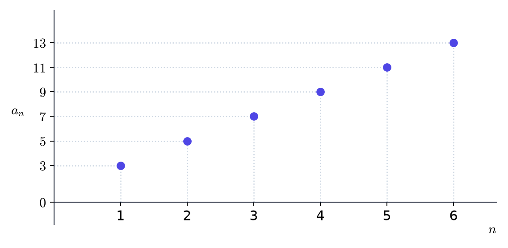
על הישר הממשי: מסמנים את איברי הסדרה \(a_n\) עצמם. למשל, את \(a_2\) מסמנים בנקודה \(5\), כי האיבר השני הוא \(5\).
התוויות מראות איזה איבר מסומן בכל נקודה; המיקום על הישר נקבע לפי האיבר, ולא לפי האינדקס.
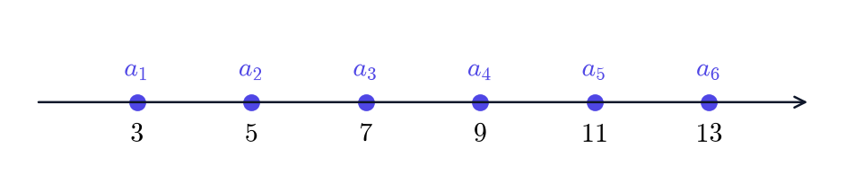
בדיקה עצמית.
אם \(a_4=-2\), היכן מסמנים אותו בכל ציור?
במישור מסמנים את הנקודה ( \(4\), \(-2\) ).
על הישר הממשי מסמנים את האיבר בנקודה \(-2\).
במישור זו הנקודה \((4,-2)\); על הישר זו הנקודה \(-2\), עם התווית \(a_4\).
דוגמה 2.1.8 — כמה סדרות מוכרות.
בכל ציור מופיעים ששת האיברים הראשונים.
(א) סדרה קבועה: כל האיברים שווים לאותו מספר, \(a_n=c\). למשל, עבור \(c=2\) מתקבלת \(2,2,2,\ldots\).
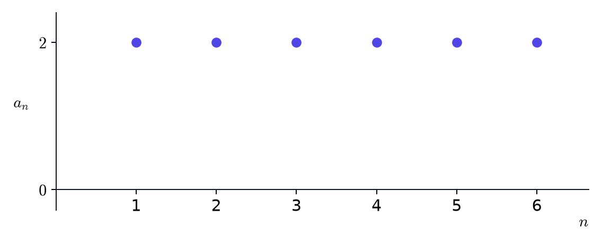
(ב) הסדרה ההרמונית: \(a_n=\frac1n\), כלומר \(1,\frac{1}{2},\frac13,\ldots\).
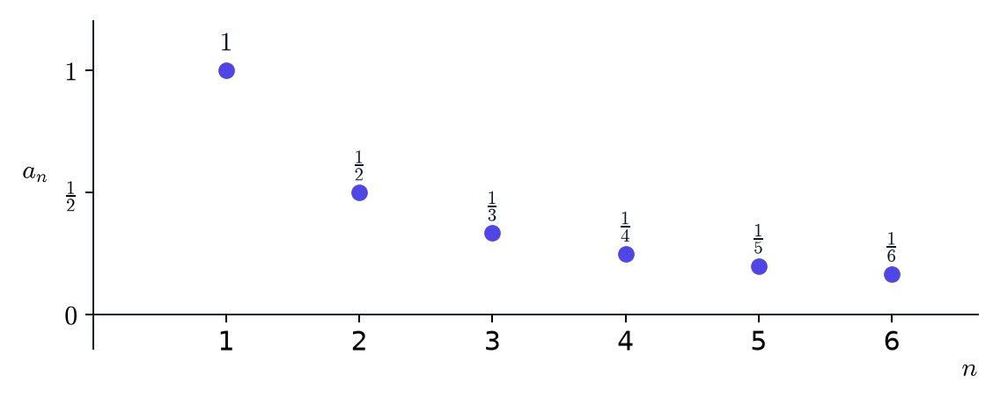
(ג) סדרה מתחלפת: איבר חיובי ואיבר שלילי מופיעים לסירוגין. למשל, \(a_n=(-1)^n\) נותנת \(-1,1,-1,1,\ldots\).
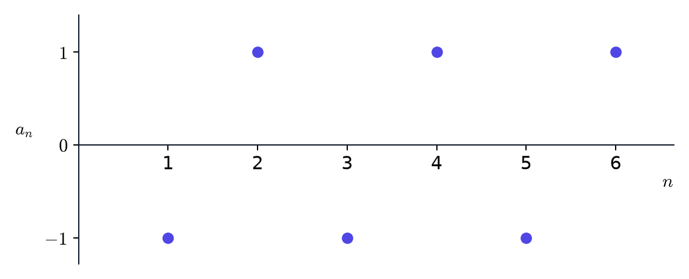
על הישר הממשי, איברים בעלי אותו ערך נופלים על אותה נקודה: \(a_1,a_3,a_5\) נמצאים כולם ב \(-1\), ו \(a_2,a_4,a_6\) ב \(1\).
(ד) סדרה חשבונית: בכל צעד מוסיפים הפרש קבוע \(d\): \[a_{n+1}=a_n+d.\] הנוסחה לאיבר הכללי היא \[a_n=a_1+(n-1)d.\] יש \(n-1\) צעדים מהאיבר הראשון לאיבר שבמקום \(n\).
למשל, \(a_1=1\) ו \(d=2\) נותנים \(1,3,5,7,\ldots\).
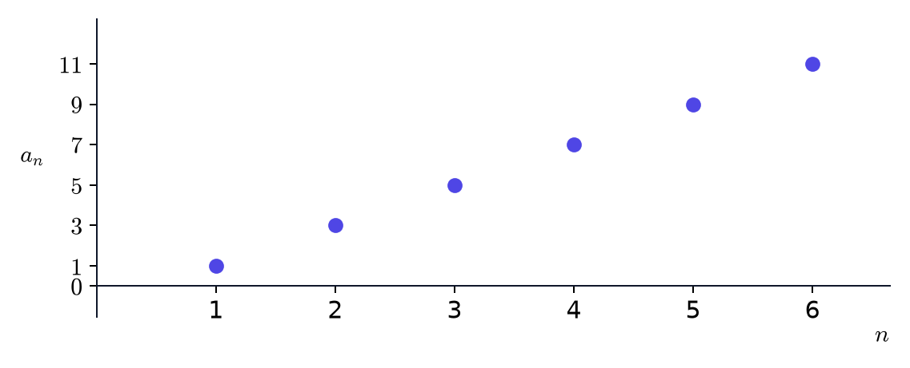
(ה) סדרה הנדסית: בכל צעד כופלים במספר קבוע \(q\), שנקרא מנת הסדרה: \[a_{n+1}=qa_n.\] כאשר \(a_n\ne0\), אפשר לחשב אותו כמנה \(q=\frac{a_{n+1}}{a_n}\). כלל הכפל תקף גם כשהאיבר הוא אפס; במקרה הזה אין מחלקים בו. כאשר \(q\ne0\), הנוסחה לאיבר הכללי היא \[a_n=a_1q^{n-1}.\] הכפל החוזר מסביר את החזקה \(n-1\) בנוסחה.
למשל, \(a_1=1\) ו \(q=2\) נותנים \(1,2,4,8,\ldots\).
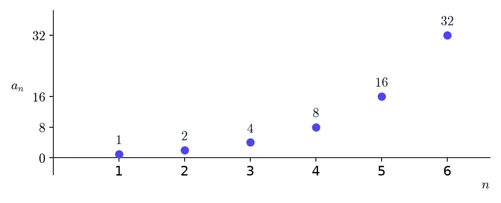
(ו) סדרת פיבונאצ’י: מתחילים ב \(a_1=a_2=1\), וכל איבר חדש הוא סכום שני קודמיו: \[a_{n+2}=a_{n+1}+a_n.\] כך מתקבלת הסדרה \(1,1,2,3,5,8,13,\ldots\).
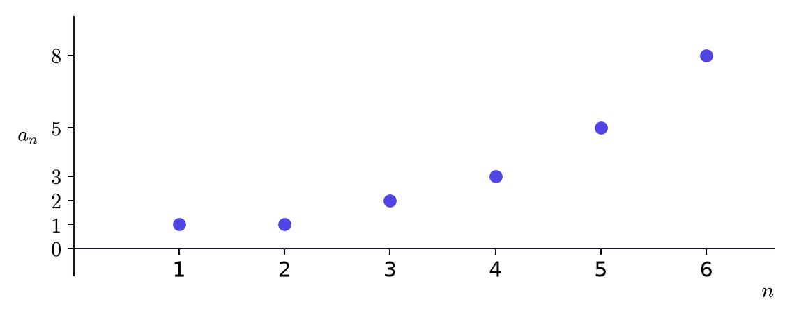
שאלה פתורה 2.1.9 — מחשבים איברים.
(א) נתונה הסדרה \(a_n=\frac{n+1}{n}\). חשבו את האיברים המבוקשים.
בכל שורה כתבו תחילה את הביטוי לאחר הצבת האינדקס, ואחריו את התוצאה.
| האיבר | הצבה בנוסחה | תוצאה |
|---|---|---|
| \(a_1\) | \(\frac{1+1}{1}\) | \(2\) |
| \(a_2\) | \(\frac{2+1}{2}\) | \(\frac{3}{2}\) |
| \(a_{10}\) | \(\frac{10+1}{10}\) | \(\frac{11}{10}\) |
מציבים בכל פעם את האינדקס במקום \(n\): \[\begin{aligned} a_1&=\frac{1+1}{1}=2,\\[4pt] a_2&=\frac{2+1}{2}=\frac{3}{2},\\[4pt] a_{10}&=\frac{10+1}{10}=\frac{11}{10}. \end{aligned}\]
(ב) השלימו את שמונת האיברים הראשונים של סדרת פיבונאצ’י.
\(a_1=\) \(1\)
\(a_2=\) \(1\)
| האיבר | חישוב | תוצאה |
|---|---|---|
| \(a_3\) | \(1+1\) | \(2\) |
| \(a_4\) | \(1+2\) | \(3\) |
| \(a_5\) | \(2+3\) | \(5\) |
| \(a_6\) | \(3+5\) | \(8\) |
| \(a_7\) | \(5+8\) | \(13\) |
| \(a_8\) | \(8+13\) | \(21\) |
שני האיברים הראשונים הם \(1\). אחר כך מחברים בכל פעם את שני האיברים הקודמים.
\(1,1,2,3,5,8,13,21,\ldots\).
למשל, \(a_7=a_5+a_6=5+8=13\).
(ג) סדרה חשבונית מתחילה באיברים \(4,7,10,13,\ldots\).
מצאו את האיבר הראשון ואת ההפרש, וכתבו נוסחה לאיבר הכללי.
\(a_1=\) \(4\)
\(d=\) \(3\)
\(a_n=\) \(3n+1\)
כעת הציבו \(n=20\) בנוסחה וחשבו:
| האיבר | הצבה בנוסחה | תוצאה |
|---|---|---|
| \(a_{20}\) | \(3\cdot20+1\) | \(61\) |
בנוסחה \(a_n=a_1+(n-1)d\), הציבו את האיבר הראשון ואת ההפרש.
\[\begin{aligned} a_n&=4+3(n-1)=3n+1,\\ a_{20}&=3\cdot20+1=61. \end{aligned}\]
(ד) סדרה הנדסית מתחילה באיברים \(3,6,12,24,\ldots\).
מצאו את האיבר הראשון ואת המנה, וכתבו נוסחה לאיבר הכללי.
\(a_1=\) \(3\)
\(q=\) \(2\)
\(a_n=\) \(3\cdot2^{n-1}\)
כעת הציבו \(n=6\) בנוסחה וחשבו:
| האיבר | הצבה בנוסחה | תוצאה |
|---|---|---|
| \(a_6\) | \(3\cdot2^{6-1}\) | \(96\) |
בנוסחה \(a_n=a_1q^{n-1}\), הציבו את האיבר הראשון ואת המנה.
\[\begin{aligned} a_n&=3\cdot2^{n-1},\\ a_6&=3\cdot2^{6-1}=96. \end{aligned}\]
בדיקה עצמית.
(א) האם הרשימה האינסופית שבה כל האיברים שווים ל \(1\) היא סדרה?
איברים באינדקסים שונים יכולים להיות שווים. כתבו נוסחה לאיבר הכללי:
\(a_n=\) \(1\)
(ב) חשבו את האיבר החמישי של \(a_n=(-1)^n n\) בשני שלבים.
בשדה הראשון הציבו \(n=5\), ובשני כתבו את התוצאה כמספר:
\(a_5=\) \((-1)^5\cdot5\) \(=\) \(-5\)
\((-1)^5=-1\), ולכן \((-1)^5\cdot5=-5\).
תרגילים
תרגיל 2.1.10 — איברים מנוסחה.
חשבו את האיברים המבוקשים. כתבו את ההצבה בנוסחה ואת התוצאה.
(א) \(a_n=n^2-n\)
| האיבר | הצבה בנוסחה | תוצאה |
|---|---|---|
| \(a_3\) | \(3^2-3\) | \(6\) |
(ב) \(a_n=\frac{(-1)^n}{n}\)
| האיבר | הצבה בנוסחה | תוצאה |
|---|---|---|
| \(a_4\) | \(\frac{(-1)^4}{4}\) | \(\frac{1}{4}\) |
| \(a_5\) | \(\frac{(-1)^5}{5}\) | \(-\frac{1}{5}\) |
(ג) \(a_n=\frac{2^n}{n}\)
| האיבר | הצבה בנוסחה | תוצאה |
|---|---|---|
| \(a_3\) | \(\frac{2^3}{3}\) | \(\frac{8}{3}\) |
(א) \(a_3=3^2-3=6\).
(ב) \[\begin{aligned} a_4&=\frac{(-1)^4}{4}=\frac{1}{4},\\[4pt] a_5&=\frac{(-1)^5}{5}=-\frac{1}{5}. \end{aligned}\]
(ג) \(a_3=\frac{2^3}{3}=\frac{8}{3}\).
תרגיל 2.1.11 — איברים מרקורסיה.
נתונים \(a_1=2\) ו \(a_{n+1}=3a_n-1\).
מצאו את \(a_2\), \(a_3\) ו \(a_4\) בעזרת כלל הרקורסיה.
| האיבר | חישוב | תוצאה |
|---|---|---|
| \(a_2\) | \(3\cdot2-1\) | \(5\) |
| \(a_3\) | \(3\cdot5-1\) | \(14\) |
| \(a_4\) | \(3\cdot14-1\) | \(41\) |
בכל צעד השתמשו באיבר שחישבתם בצעד הקודם.
\[\begin{aligned} a_2&=3\cdot2-1=5,\\ a_3&=3\cdot5-1=14,\\ a_4&=3\cdot14-1=41. \end{aligned}\]
תרגיל 2.1.12 — סדרה הנדסית עם מנה שלילית.
בסדרה הנדסית נתונים \(a_1=2\) ו \(q=-3\).
כתבו נוסחה לאיבר הכללי, והשתמשו בה לחישוב האיברים השני עד החמישי.
\(a_n=\) \(2(-3)^{n-1}\)
| האיבר | הצבה בנוסחה | תוצאה |
|---|---|---|
| \(a_2\) | \(2(-3)^{2-1}\) | \(-6\) |
| \(a_3\) | \(2(-3)^{3-1}\) | \(18\) |
| \(a_4\) | \(2(-3)^{4-1}\) | \(-54\) |
| \(a_5\) | \(2(-3)^{5-1}\) | \(162\) |
הציבו את האיבר הראשון ואת המנה בנוסחה \(a_n=a_1q^{n-1}\). שימו לב לסוגריים סביב המנה השלילית.
הנוסחה היא \(a_n=2(-3)^{n-1}\).
\[\begin{aligned} a_2&=2(-3)^1=-6,\\ a_3&=2(-3)^2=18,\\ a_4&=2(-3)^3=-54,\\ a_5&=2(-3)^4=162. \end{aligned}\] סימני האיברים מתחלפים, כי בכל צעד כופלים במספר שלילי.
תרגיל 2.1.13 — נוסחה שמתאימה לאיברים.
בכל סעיף נתונים ארבעת האיברים הראשונים. מצאו נוסחה לאיבר הכללי המתאימה להם; תיתכן יותר מנוסחה אחת.
(א)
\(7,12,17,22,\ldots\)
\(a_n=\) \(5n+2\)
(ב)
\(1,4,9,16,\ldots\)
\(a_n=\) \(n^2\)
(ג)
\(\frac{1}{2},\frac14,\frac18,\frac1{16},\ldots\)
\(a_n=\) \(\frac{1}{2^n}\)
(א) אפשר להמשיך כסדרה חשבונית, עם הפרש \(5\): \[a_n=7+5(n-1)=5n+2.\]
(ב) האיברים הנתונים הם הריבועים של האינדקסים שלהם: \[a_n=n^2.\]
(ג) אפשר להמשיך כסדרה הנדסית, עם מנה \(\frac{1}{2}\): \[a_n=\frac1{2^n}.\]
תרגיל 2.1.14 — חשבונית, הנדסית או אף אחת מהן?
בכל סעיף נתונים כמה איברים ראשונים. בדקו אם אפשר להמשיך אותם לסדרה חשבונית או לסדרה הנדסית.
אם אפשר, מצאו את האיבר הראשון, את ההפרש או המנה, ונוסחה לאיבר הכללי. אחרת, הראו שההפרשים והמנות אינם קבועים.
(א) \(5,2,-1,-4,\ldots\)
בדקו את ההפרשים ואת המנות בין איברים עוקבים. האם הם קבועים?
אפשר להמשיך לסדרה חשבונית: ההפרש בכל צעד הוא \(-3\). \[a_1=5,\qquad d=-3.\] הנוסחה לאיבר הכללי היא \[a_n=5-3(n-1)=8-3n.\]
(ב) \(2,-6,18,-54,\ldots\)
בדקו את ההפרשים ואת המנות בין איברים עוקבים. גם מספר שלילי יכול להיות מנה קבועה.
אפשר להמשיך לסדרה הנדסית: המנה בכל צעד היא \(-3\). \[a_1=2,\qquad q=-3.\] הנוסחה לאיבר הכללי היא \[a_n=2(-3)^{n-1}.\]
(ג) \(1,2,4,7,11,\ldots\)
די למצוא שני הפרשים שונים כדי לשלול סדרה חשבונית, ושתי מנות שונות כדי לשלול סדרה הנדסית.
אף אחת מהן. ההפרשים אינם קבועים: \[a_2-a_1=1,\qquad a_3-a_2=2.\] גם המנות אינן קבועות: \[\frac{a_2}{a_1}=2,\qquad\frac{a_4}{a_3}=\frac74.\] לכן אי אפשר להמשיך את האיברים הנתונים לסדרה חשבונית או הנדסית.
2.2 גבול של סדרה
מקירוב לסף השגיאה
בפועל, בחישובים רבים משתמשים במספרים קרובים מספיק למספרים המדויקים. יש לכך כמה סיבות. כפי שראינו, לא כל מספר ממשי אפשר לכתוב כמנה של שני שלמים, ואילו את החישובים המספריים נוח לבצע בעזרת מספרים רציונליים. גם מחשבים, שעליהם נשענים חישובים רבים, משתמשים בדרך כלל בייצוג מספרי בעל דיוק מוגבל: לא כל מספר ממשי אפשר לייצג בו בדיוק.
הגדרה 2.2.1 — קירוב ושגיאה.
מספר קרוב שבו משתמשים במקום המספר המדויק נקרא קירוב שלו.
השגיאה היא המרחק בין הקירוב למספר המדויק — כלומר, הערך המוחלט של ההפרש ביניהם.
דוגמה 2.2.2 — קירובים עשרוניים.
גם למספר הרציונלי \(\frac13\) אין ייצוג עשרוני סופי. אפשר לקרב אותו באמצעות השברים העשרוניים הסופיים \[0.3,\quad 0.33,\quad 0.333,\quad\ldots\]
שאלה ותשובה — האם \(0.33\) מדויק מספיק?
משתמשים ב \(0.33\) כקירוב למספר \(\frac13\).
תשובה. תלוי בדרישת הדיוק. השגיאה היא \[\left|0.33-\frac13\right|=\frac1{300}.\] היא קטנה מ \(0.01\), אבל גדולה מ \(0.001\). כדי לעמוד בדרישה השנייה צריך קירוב מדויק יותר, למשל \(0.333\).
נבחר מספר חיובי, שייקרא סף השגיאה, ונדרוש שהשגיאה תהיה קטנה ממנו. שגיאה השווה לסף אינה עומדת בדרישה.
בדיקה עצמית — אותו קירוב, שתי דרישות.
משתמשים במספר \(2.03\) כקירוב למספר \(2\).
השגיאה היא \(0.03\).
השגיאה היא המרחק \(|2.03-2|=0.03\).
האם השגיאה קטנה מ \(0.1\)?
כן: \(0.03<0.1\).
האם השגיאה קטנה מ \(0.01\)?
לא: \(0.03>0.01\). אותו מספר יכול להיות קירוב מתאים לדרישה אחת ולא להתאים לדרישה מחמירה יותר.
בדיקה עצמית — קירוב מהצד השני.
כעת משתמשים במספר \(1.96\) כקירוב למספר \(2\).
מהי השגיאה? \(0.04\)
מדוע השגיאה היא \(0.04\) ולא \(-0.04\)?
ההפרש הוא \(1.96-2=-0.04\), אך השגיאה היא \[|1.96-2|=|-0.04|=0.04.\] המינוס מתאר באיזה צד של \(2\) נמצא הקירוב. המרחק מתאר כמה רחוק הוא נמצא, ולכן אינו שלילי.
טענה 2.2.3 — קירוב במספרים רציונליים.
לכל שני מספרים ממשיים \(a<b\) קיים מספר רציונלי \(q\in\mathbb{Q}\) כך ש \[a<q<b.\] כלומר, בין כל שני מספרים ממשיים שונים יש מספר רציונלי. תכונה זו נקראת צפיפות הרציונליים.
הסבר — מצפיפות לקירוב.
לפי צפיפות הרציונליים, בקטע \((L-\varepsilon,L+\varepsilon)\) קיים מספר רציונלי לכל \(L\in\mathbb{R}\) ולכל \(\varepsilon>0\). המרחק שלו מ \(L\) קטן מ \(\varepsilon\), ולכן אפשר לקבל קירוב רציונלי בכל רמת דיוק שנבקש.
דוגמה 2.2.4 — קירובים רציונליים למספר שאינו רציונלי.
המספר \(\pi\) אינו רציונלי, אבל הקירובים העשרוניים \[3.14=\frac{157}{50},\qquad3.14159=\frac{314159}{100000}\] רציונליים: כל אחד מהם הוא מנה של שני מספרים שלמים. הם מקרבים את \(\pi\) ואינם שווים לו. עצם קיומם של קירובים רציונליים אינו אומר שהמספר שמקרבים רציונלי.
כאן נרצה לעבוד עם סדרה של קירובים, ולא להסתפק בקירוב אחד. לכל סף שגיאה חיובי שנבחר, קטן ככל שיהיה, נרצה להבטיח שאפשר להתקדם בסדרה עד שכל האיברים שמאותו אינדקס והלאה יעמדו בדרישה. מציאת איבר קרוב אחד אינה מספיקה: גם האיברים שבאים אחריו צריכים להישאר קרובים.
לפעמים הכיוון הפוך: נתונה לנו סדרה, ואנחנו עדיין לא יודעים איזה מספר היא מקרבת, ואם היא בכלל מקרבת מספר כלשהו. נרצה להבין מה פירוש ההתקרבות הזאת, ואיך בודקים אותה.
הגדרת הגבול
הגדרה 2.2.5 — גבול של סדרה.
הסדרה \((a_n)_{n=1}^{\infty}\) מתכנסת למספר \(L\) אם לכל \(\varepsilon>0\) יש אינדקס טבעי \(N\) כך שלכל \(n\ge N\) מתקיים \[|a_n-L|<\varepsilon.\] המספר \(L\) נקרא הגבול של הסדרה. כותבים \[\lim_{n\to\infty}a_n=L.\] אפשר לכתוב גם \(a_n\to L\), ולומר שהסדרה שואפת אל \(L\). סדרה שאינה מתכנסת למספר ממשי נקראת מתבדרת.
נפרש את ההגדרה: \(a_n\) הוא האיבר באינדקס \(n\), ו \(L\) הוא המועמד לגבול. המספר \(\varepsilon>0\) הוא סף ההפרש בערך מוחלט: נדרוש \(|a_n-L|<\varepsilon\). שוויון אינו מספיק. אפשר לכתוב את הדרישה גם כך: \[L-\varepsilon<a_n<L+\varepsilon.\] הקטע הפתוח \((L-\varepsilon,L+\varepsilon)\) נקרא סביבת \(\varepsilon\) של \(L\). נקודות הקצה אינן כלולות בו.
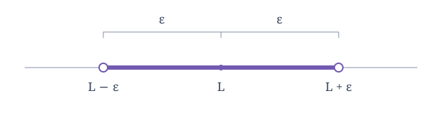
הסבר — פירוש גאומטרי של התכנסות.
בגרף של סדרה מציירים את הנקודות \((n,a_n)\): האינדקס הוא הקואורדינטה האופקית, והאיבר הוא הגובה. כדי לראות אילו איברים קרובים אל \(L\), מציירים שני קווים אופקיים בגבהים \(L-\varepsilon\) ו \(L+\varepsilon\). השטח שביניהם נקרא רצועה סביב \(L\). רוחבה האנכי הוא \(2\varepsilon\); הקווים שעל שפתה אינם חלק ממנה.
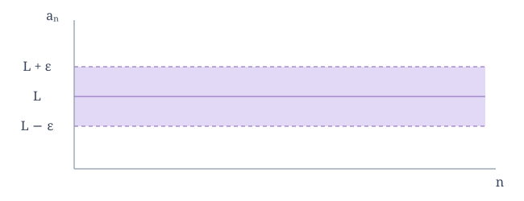
מה נדרש להתכנסות? לכל \(\varepsilon>0\) צריך להיות אינדקס \(N\) כך שלכל \(n\ge N\), הנקודה \((n,a_n)\) נמצאת ברצועה. כלומר, מאינדקס מסוים כל האיברים נכנסים ונשארים בפנים. אפשר לחשוב על הרצועה כעל ״בית״: לא מספיק לבקר בו; צריך להישאר בו מאינדקס מסוים והלאה.
ברצועה רחבה ייתכן שדי להתקדם מעט. ברצועה צרה ייתכן שצריך להתקדם הרבה מאוד. צרה ככל שתהיה הרצועה, בסופו של דבר כל האיברים צריכים להישאר בתוכה. האינדקס \(N\) יכול להשתנות כשמשנים את \(\varepsilon\).
למשל, ברצועה הרחבה שבציור אפשר לבחור \(N=11\): כל האיברים מהאינדקס הזה והלאה בתוכה. עבור הרצועה הצרה יותר צריך להתקדם רחוק יותר; בציור אפשר לבחור \(N=101\). בשני המקרים, כל האיברים שמאותו אינדקס והלאה נשארים בפנים.
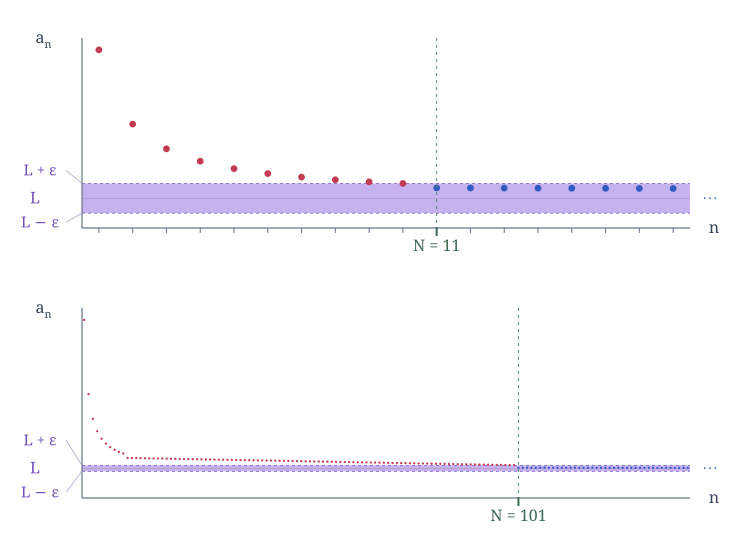
ועל ישר המספרים? שם מציירים את האיברים \(a_n\) עצמם. הרצועה מוחלפת בקטע הפתוח \((L-\varepsilon,L+\varepsilon)\), כלומר בסביבת \(\varepsilon\) של \(L\). הדרישה אותה דרישה: כל סביבה כזאת מכילה את כל האיברים מאינדקס מתאים והלאה.
באיור הבא, עבור סביבת \(\varepsilon\) שנבחרה אפשר לבחור \(N=5\). מהאיבר \(a_5\) והלאה כל האיברים בתוך הסביבה.
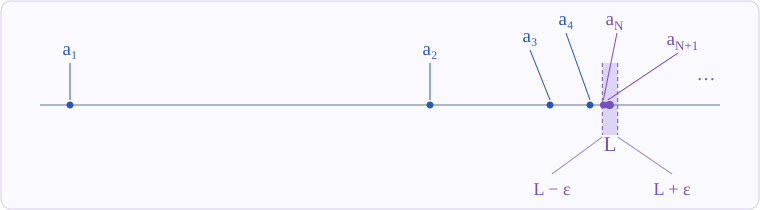
ברזולוציה הזאת, רק כמה נקודות נבדלות מ \(L\) לעין, אף שיכולים להיות אינסוף ערכים שונים של איברי הסדרה. סימוני האיברים המאוחרים נראים באותו מקום כמו \(L\); אין פירוש הדבר שערכיהם שווים לו. הגדלה יכולה לחשוף את ההבדלים, כפי שנראה בסימולציה שבהמשך.
איך רואים ש \(L\) אינו הגבול? מספיק למצוא רצועה אחת סביבו שעבורה תמיד יש עוד איבר בחוץ, לא משנה כמה רחוק מתקדמים בציר האינדקסים. במילים פשוטות: האיברים שמחוץ לרצועה אף פעם לא נגמרים. יש אינסוף איברים כאלה; גם איבר שעל השפה נחשב מחוץ לרצועה.
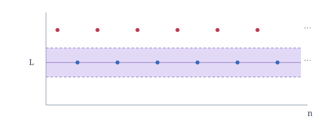
כך שוללים את המועמד \(L\). ייתכן שהסדרה מתכנסת למספר אחר; כדי להראות שאינה מתכנסת כלל צריך לשלול כל מועמד.
סימולציה 2.2.6 — מיקרוסקופ לקירובים של \(\pi\).
על ישר המספרים, בכל רזולוציה קבועה רק מספר סופי של איברי סדרה מתכנסת נבדלים מהגבול לעין. הגדלה יכולה לחשוף עוד נקודות ליד הגבול, אך גם אחריה האיברים המאוחרים יותר נראים יחד איתו כנקודה אחת.
נבנה סדרה של קירובים עשרוניים ל \(\pi\): מתחילים ב \(3\), ובכל צעד מוסיפים עוד ספרה אחרי הנקודה, לפי הפיתוח העשרוני של \(\pi\). כך מתקבלת הסדרה \[3,\ 3.1,\ 3.14,\ 3.141,\ 3.1415,\ 3.14159,\ldots\] המתכנסת אל \(\pi\). עדיין לא הראינו זאת לפי הגדרת הגבול; כאן נסתמך על הרעיון המוכר של קירוב עשרוני ל \(\pi\).
אם \(\varepsilon\) קטן מספיק ביחס לרזולוציה, איברי הסדרה שבתוך הסביבה \((\pi-\varepsilon,\pi+\varepsilon)\) אינם נבדלים מ \(\pi\) לעין, אף שאינם שווים לו.
נבצע שתי בדיקות: נצמצם את הסביבה עד שכל איברי הסדרה שבתוכה נראים כמו הגבול, ואז נגדיל את הציור, כמו במיקרוסקופ, כדי להבחין שוב בחלק מהם.
- בהגדלה ההתחלתית, בחרו \(\varepsilon=\frac{1}{100}\) ואז הקטינו ל \(\frac{1}{10000}\).
- השאירו את \(\varepsilon=\frac{1}{10000}\) ולחצו פעמיים על הגדילו פי 10. עקבו אחר הנקודות שנפרדות מ \(\pi\) לעין. לחצו פעמיים על הקטינו פי 10 כדי לחזור לתצוגה ההתחלתית.
ארבע דוגמאות בסיסיות
ארבע הדוגמאות הבאות ממחישות איך משתמשים בהגדרת הגבול כדי להראות שסדרה מתכנסת למספר נתון, או להראות שאינה מתכנסת אליו.
דוגמה 2.2.7 — כל האיברים שווים לגבול.
בסדרה הקבועה \(a_n=4\), נבדוק שהמספר \(4\) הוא הגבול.
כדי להשתמש בהגדרת הגבול, נפתח במילים ״יהי \(\varepsilon>0\)״. פירושן: ניקח מספר חיובי כלשהו, בלי לקבוע לו ערך מסוים. הטיעון צריך לעבוד לכל בחירה כזאת.
עלינו למצוא אינדקס טבעי \(N\) כך שיתקיים \(|a_n-4|<\varepsilon\) לכל \(n\ge N\).
נבחר \(N=1\). לכל \(n\ge1\) מתקיים \[|a_n-4|=|4-4|=0<\varepsilon.\] כלומר, כל האיברים עומדים בדרישה כבר מהראשון. הבחירה הזאת עובדת לכל \(\varepsilon>0\), ולכן לפי ההגדרה \[\lim_{n\to\infty}4=4.\] אותו חישוב עובד לכל סדרה קבועה \(a_n=C\): בוחרים \(N=1\) ומקבלים \(|a_n-C|=0<\varepsilon\) לכל \(n\ge1\). לכן סדרה שכל איבריה שווים \(C\) מתכנסת אל \(C\).
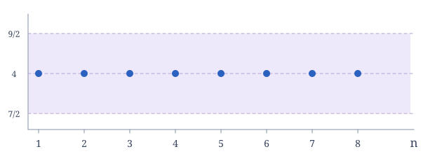
בסדרה \(a_n=4\), מתקיים \(|a_n-4|=\) \(0\). עבור \(\varepsilon=\frac1{10000}\), אפשר לבחור \(N=\) \(1\).
לכל \(n\ge1\) מתקיים \(|a_n-4|=0<\frac1{10000}\), ולכן כל אינדקס טבעי מתאים.
אם נקטין את \(\varepsilon\), האם נצטרך להגדיל את \(N\)?
אותו \(N\) עדיין מתאים: לכל \(\varepsilon>0\) ולכל \(n\ge1\) מתקיים \(|a_n-4|=0<\varepsilon\).
דוגמה 2.2.8 — אף איבר אינו שווה לגבול.
נבדוק שהסדרה \[a_n=\frac1n\] מתכנסת אל \(0\). איבריה הראשונים הם \[1,\frac{1}{2},\frac13,\frac14,\ldots\]
הערה. תחילה נראה איך מוצאים \(N\) עבור סף מסוים, \(\varepsilon=\frac1{10}\). זוהי דוגמה לחישוב בלבד; אין צורך לכלול אותה בפתרון הסופי.
גם אם נמצא \(N\) שמתאים לסף הזה, לא הוכחנו שהסדרה מתכנסת. ההגדרה דורשת בחירה מתאימה לכל \(\varepsilon>0\). אחרי ההדגמה נבצע את החישוב הכללי.
הדגמה עבור \(\varepsilon=\frac1{10}\). נחפש אינדקס \(N\) כך שלכל \(n\ge N\) יתקיים \[|a_n-0|<\frac1{10}.\] נציב \(a_n=\frac{1}{n}\): \[\left|\frac1n-0\right|<\frac1{10}.\] מכיוון ש \(n\ge1\), מתקיים \(\frac{1}{n}>0\), ולכן \(\left|\frac{1}{n}\right|=\frac{1}{n}\). הדרישה היא אפוא \[\frac1n<\frac1{10}.\]
אם לא היה אינדקס כזה, כבר היינו יודעים ש \(0\) אינו הגבול. מציאת אינדקס מתאים לסף הזה עדיין אינה מספיקה: צריך להראות שאפשר לעשות זאת לכל \(\varepsilon>0\).
נפתור את האי־שוויון המתאים. מכיוון ש \(n>0\), מותר לכפול בו בלי לשנות את כיוון האי־שוויון: \[\begin{aligned} \frac1n&<\frac1{10},\\ 1&<\frac n{10},\\ 10&<n. \end{aligned}\] קיבלנו תנאי על האינדקס המשתנה \(n\). כעת בוחרים אינדקס טבעי \(N\) שממנו כל האינדקסים מקיימים אותו.
| הבחירה | האיברים שמתחילים בה | האם היא מתאימה? |
|---|---|---|
| \(N=10\) | כוללים את \(a_{10}=\frac1{10}\), שעל שפת הסביבה | לא: נדרש מרחק קטן מ \(\varepsilon\) |
| \(N=11\) | כולם באינדקסים גדולים מ \(10\) | כן |
| \(N=20\) | גם הם כולם באינדקסים גדולים מ \(10\) | כן; אין חובה לבחור את האינדקס הקטן ביותר |
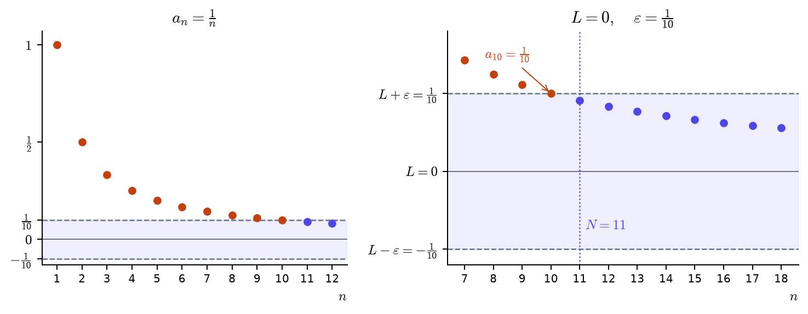
בסדרה \(a_n=\frac{1}{n}\), הדרישה \(|a_n-0|<\frac1{1000}\) נותנת \(n>\) \(1000\). אפשר לבחור \(N=\) \(1001\).
כל אינדקס טבעי גדול מ \(1000\) מתאים. האינדקס \(11\), שהתאים לבחירה הקודמת של \(\varepsilon\), כבר אינו מספיק.
כעת ההוכחה לכל \(\varepsilon>0\). ההדגמות עזרו לנו להבין איך למצוא \(N\), אבל מספר סופי של בדיקות אינו מוכיח גבול. כדי לעמוד בהגדרה, נשאיר את \(\varepsilon\) כללי ונמצא \(N\) שמתאים לו.
יהי \(\varepsilon>0\). נרצה למצוא אינדקס טבעי \(N\) שעבורו לכל \(n\ge N\) יתקיים \[|a_n-0|<\varepsilon.\] נציב \(a_n=\frac{1}{n}\): \[\left|\frac1n-0\right|<\varepsilon.\] נפשט בתוך הערך המוחלט: \[\left|\frac1n\right|<\varepsilon.\] מכיוון ש \(n\ge1\), המספר \(\frac{1}{n}\) חיובי, ולכן \(\left|\frac{1}{n}\right|=\frac{1}{n}\). נקבל \[\frac1n<\varepsilon.\] נכפול ב \(n>0\): \[1<n\varepsilon.\] נחלק ב \(\varepsilon>0\): \[\frac1\varepsilon<n.\] כלומר, הדרישה מתקיימת בדיוק כאשר \(n>\frac{1}{\varepsilon}\).
כדי לכתוב בחירה מפורשת של \(N\), נשתמש בשיטה נפוצה המבוססת על פונקציית הערך השלם.
נזכיר כי לפי הגדרת הערך השלם, \(\left\lfloor x\right\rfloor\) הוא השלם הגדול ביותר שקטן או שווה ל \(x\). לכן \(\left\lfloor x\right\rfloor+1\) הוא שלם שגדול מ \(x\), ולמעשה השלם הקטן ביותר שגדול ממנו: \[\left\lfloor x\right\rfloor\le x<\left\lfloor x\right\rfloor+1.\]
אצלנו \(x=\frac{1}{\varepsilon}\), ולכן נבחר \[N=\left\lfloor\frac1\varepsilon\right\rfloor+1.\]
זו דרך אחת לבחור \(N\), ולא הבחירה היחידה: כל אינדקס טבעי הגדול מ \(\frac1\varepsilon\) מתאים.
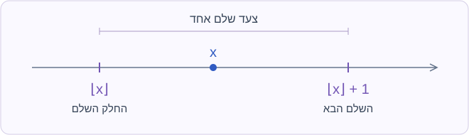
המספר \(N\) שבחרנו שלם, ולפי האי־שוויון שהסברנו \(N>\frac{1}{\varepsilon}>0\), ולכן הוא טבעי. במספרים חיוביים, ככל שהמכנה גדול יותר השבר קטן יותר, ולכן \[\frac1N<\frac1{\frac{1}{\varepsilon}}=\varepsilon.\] כעת ניקח אינדקס כלשהו \(n\ge N\). המכנה גדול לפחות כמו \(N\), ולכן \[|a_n-0|=\frac1n\le\frac1N<\varepsilon.\] מצאנו \(N\) מתאים, והראינו שהדרישה מתקיימת לכל \(n\ge N\). מכיוון ש \(\varepsilon>0\) היה כלשהו, החישוב עובד לכל סף חיובי — וזה מה שנדרש בהגדרה. לכן \[\frac1n\longrightarrow0.\]
שיטת פתרון 2.2.9 — מראים שמספר נתון הוא הגבול לפי ההגדרה.
משתמשים בשיטה הזאת כשנתונות סדרה \((a_n)_{n=1}^{\infty}\) ומספר \(L\), ומתבקשים להראות לפי ההגדרה ש \(L\) הוא גבול הסדרה. השיטה אינה מיועדת למציאת \(L\): מתחילים עם מספר שרוצים לבדוק.
- ״יהי \(\varepsilon>0\)״. לוקחים מספר חיובי כלשהו, בלי לקבוע לו ערך מסוים. לפי ההגדרה, צריך למצוא אינדקס טבעי \(N\) כך שלכל \(n\ge N\) יתקיים \[|a_n-L|<\varepsilon.\] החישוב צריך לעבוד לכל \(\varepsilon>0\), ולא רק לערך אחד שבחרנו.
- מוצאים תנאי על \(n\) שמספיק לקיום האי־שוויון. מציבים את הנוסחה של \(a_n\) ואת \(L\), ומשתמשים בשיטות לפתרון אי־שוויונות מפרק 1. אין צורך למצוא את כל הפתרונות. מספיק למצוא ביטוי \(R(\varepsilon)\) כך שכל אינדקס טבעי המקיים \[n>R(\varepsilon)\] יקיים גם \(|a_n-L|<\varepsilon\). כלומר, קבוצת הפתרונות צריכה להכיל את הקבוצה \[\{n\in\mathbb N\mid n>R(\varepsilon)\}.\] הביטוי \(R(\varepsilon)\) יכול להשתנות עם \(\varepsilon\), כמו \(\frac{1}{\varepsilon}\) בדוגמה של \(a_n=\frac{1}{n}\); גם ביטוי קבוע מותר.
- בוחרים אינדקס טבעי \(N>R(\varepsilon)\). אפשר להיעזר ב שיטה לבחירת שלם גדול ממספר נתון. כעת מסבירים: לכל \(n\ge N\) מתקיים \[n\ge N>R(\varepsilon),\] ולכן, לפי התנאי שמצאנו בשלב 2, \[|a_n-L|<\varepsilon.\] מצאנו \(N\) מתאים לכל \(\varepsilon>0\), ולכן לפי הגדרת הגבול \(a_n\to L\).
אם לא הצלחנו למצוא תנאי מתאים: ייתכן שיש טעות בחישוב או שצריך לנסות דרך אחרת. בתרגיל שבו נתבקשנו להראות שמספר נתון הוא הגבול, זה בדרך כלל הכיוון לבדיקה. אם ניחשנו בעצמנו את \(L\), ייתכן שהניחוש שגוי. עצם הקושי למצוא \(N\) אינו מוכיח ש \(L\) אינו הגבול.
שיטת פתרון 2.2.10 — השלם הקטן ביותר שגדול ממספר נתון.
כדי למצוא את השלם הקטן ביותר \(m\) שגדול ממש ממספר ממשי \(x\), מחשבים את הערך השלם של \(x\) ומוסיפים \(1\): \[m=\left\lfloor x\right\rfloor+1.\] כש \(x\ge0\), המספר שמתקבל טבעי. ב שיטת הגבול לפי ההגדרה, אפשר להציב \(x=R(\varepsilon)\) ולבחור כך את \(N\). אם התקבל שלם קטן מ \(1\), בוחרים \(N=1\). אין חובה לבחור את האינדקס הקטן ביותר: גם כל אינדקס טבעי גדול יותר מתאים.
בדיקה עצמית — בוחרים שלם גדול יותר.
למשל, עבור \(x=\frac{21}{2}\) מחשבים תחילה \[\left\lfloor\frac{21}{2}\right\rfloor=10.\] מוסיפים \(1\) ומקבלים \(11\), שהוא השלם הקטן ביותר שגדול מ \(\frac{21}{2}\).
מהו השלם הקטן ביותר שגדול ממש מ \(\frac{17}{4}\)? \(5\).
הערך השלם הוא \(\left\lfloor \frac{17}{4}\right\rfloor=4\). מוסיפים \(1\) ומקבלים \(5\). שלמים גדולים יותר גם גדולים מ \(\frac{17}{4}\), אבל \(5\) הוא הקטן ביותר מביניהם.
תובנה חשובה — האינדקס יכול להיות תלוי ב \(\varepsilon\).
קודם בוחרים \(\varepsilon\), ורק אחר כך בוחרים \(N\) שמתאים לו. ערכים שונים של \(\varepsilon\) עשויים לדרוש אינדקסים שונים. בסדרה \(a_n=\frac{1}{n}\) בחרנו \(N=\left\lfloor \frac{1}{\varepsilon}\right\rfloor+1\), ולכן הקטנת הסף עשויה לדרוש אינדקס גדול יותר. בסדרה הקבועה \(a_n=4\), לעומת זאת, אותו \(N=1\) מתאים לכל \(\varepsilon>0\).
סימולציה 2.2.11 — בחירת \(\varepsilon\) ובחירת האינדקס.
המטרה של הסימולציה היא להראות שהקטנת \(\varepsilon\) עשויה לדרוש \(N\) גדול יותר.
נבדוק זאת בסדרה \(a_n=\frac{1}{n}\), שהראינו כי היא מתכנסת אל \(0\).
שנו את \(\varepsilon\) ועקבו אחר \(N\), המחושב אוטומטית. בכל בחירה, כל האיברים החל מ \(N\) נמצאים בתוך הרצועה.
בדיקה עצמית — האינדקס והגבול.
האם בסדרה \(\frac1n\) יש איבר השווה בדיוק לגבול \(0\)?
כל האיברים חיוביים. התכנסות דורשת קרבה בכל דיוק, ולא פגיעה מדויקת בגבול.
בסדרה \(a_n=\frac1n\), נדרוש שהמרחק מאפס יהיה קטן מ \(\frac{2}{21}\). הדרישה שקולה ל \[\frac1n<\frac{2}{21}\quad\Longleftrightarrow\quad n>\frac{21}{2}.\] האם כל האיברים החל מאינדקס \(11\) עומדים בדרישה הזאת?
כן. כל \(n\ge11\) מקיים \(n>\frac{21}{2}\), ולכן \(|a_n-0|=\frac{1}{n}<\frac{2}{21}\). אפשר לבחור \(N=11\): צריך מספר טבעי הגדול מהסף \(\frac{21}{2}\), ולא להוסיף אחת לסף באופן אוטומטי.
דוגמה 2.2.12 — מתקרבים משני הצדדים.
נבדוק את המועמד \(L=0\) עבור \[a_n=\frac{(-1)^n}{n}.\] איבריה הראשונים הם \[-1,\frac{1}{2},-\frac13,\frac14,\ldots\] באינדקסים אי־זוגיים האיברים קטנים מהגבול \(0\), ובזוגיים הם גדולים ממנו. לזה הכוונה ב״משני הצדדים״: פעם מתחת לגבול ופעם מעליו. נבדוק את המרחק ממנו: \[\left|\frac{(-1)^n}{n}-0\right|=\frac1n.\] אלה בדיוק המרחקים מאפס של איברי הסדרה \(\frac{1}{n}\). לכן, לכל \(\varepsilon>0\), בוחרים \(N>\frac1\varepsilon\), ומקבלים שגם הסדרה \(\frac{(-1)^n}{n}\) מתכנסת לאפס.
האם התכנסות מחייבת להישאר באותו צד של הגבול?
הסדרה הזאת מתכנסת לאפס אף שהיא מחליפה צד בכל צעד. הדרישה עוסקת במרחק, לא בכיוון.
סימולציה 2.2.13 — בחירת \(\varepsilon\) בהתקרבות משני הצדדים.
המטרה של הסימולציה היא לראות שהאיברים נשארים ברצועה גם כשהם מחליפים צד ביחס לגבול.
נבדוק את הסדרה \(a_n=\frac{(-1)^n}{n}\), שהראינו כי היא מתכנסת אל \(0\).
שנו את \(\varepsilon\); \(N\) מתעדכן אוטומטית. שימו לב: כל הנקודות החל מ \(N\) בתוך הרצועה, פעם מעל \(0\) ופעם מתחתיו.
שימו לב — סף אחד אינו מספיק.
גם אם כל האיברים בתוך רצועה אחת, עדיין לא הראינו שקיים גבול. הגדרת הגבול דורשת שהבחירה של \(N\) תהיה אפשרית לכל \(\varepsilon>0\).
בדוגמה הבאה, עבור הסדרה \(a_n=(-1)^n\), הניסיונות שבחלק המקופל ממחישים את הטעות הזאת. הם נועדו להבנה; הפתרון הקצר מופיע אחריהם.
דוגמה 2.2.14 — סדרה שאינה מתכנסת.
נראה שהסדרה \[a_n=(-1)^n,\qquad -1,1,-1,1,\ldots\] אינה מתכנסת.
ניסיונות לבחירת גבול — מדוע רצועה רחבה יכולה להטעות?
ניסיון ראשון: האם \(L=1\) הוא גבול הסדרה \(a_n=(-1)^n\)?
נבחר תחילה \(\varepsilon=\frac{5}{2}\). הרצועה סביב \(1\) היא \[\left(1-\frac52,1+\frac52\right)=\left(-\frac32,\frac72\right).\] עבור איבר השווה \(1\), מתקיים \(|1-1|=0\).
עבור איבר השווה \(-1\), מתקיים \(|-1-1|=2\).
שני המרחקים קטנים מ \(\frac{5}{2}\), ולכן \(N=1\) מתאים לסף הזה: כל האיברים בתוך הרצועה הכחולה הרחבה.
כעת נבחר \(\varepsilon=\frac{1}{2}\). הרצועה מצטמצמת ל \((\frac{1}{2},\frac{3}{2})\). בכל אינדקס אי־זוגי מתקיים \[|a_n-1|=|-1-1|=2>\frac12.\] לכן כל ההופעות של \(-1\) מחוץ לרצועה הצרה. הן חוזרות אחרי כל אינדקס שנבחר, ולכן לא קיים \(N\) מתאים לסף \(\frac{1}{2}\). מכאן ש \(1\) אינו הגבול.
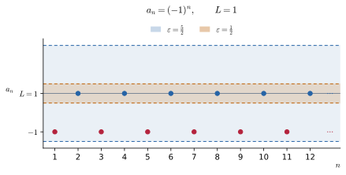
מדוע \(-1\) אינו גבול הסדרה \(a_n=(-1)^n\)?
נבדוק את \(L=-1\) עבור הסדרה \(a_n=(-1)^n\).
עבור \(\varepsilon=\frac{5}{2}\), הרצועה היא \((-\frac{7}{2},\frac{3}{2})\). המרחקים מ \(-1\) הם \(0\) או \(2\), ולכן כל האיברים בתוכה ו \(N=1\) מתאים.
עבור \(\varepsilon=\frac{1}{2}\), בכל אינדקס זוגי מתקיים \[|a_n-(-1)|=|1+1|=2>\frac12.\] הערך \(1\) חוזר באינדקסים זוגיים גדולים כרצוננו. לכן לא קיים \(N\) שממנו והלאה כל האיברים ברצועה הצרה, ו \(-1\) אינו הגבול.
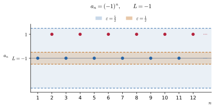
מדוע \(0\) אינו גבול הסדרה \(a_n=(-1)^n\)?
נבדוק את \(L=0\) עבור הסדרה \(a_n=(-1)^n\). לכל \(n\ge1\) מתקיים \[|a_n-0|=|(-1)^n|=1.\] עבור \(\varepsilon=\frac{3}{2}\), כל האיברים בתוך הרצועה ו \(N=1\) מתאים.
עבור \(\varepsilon=\frac{1}{2}\), מתקיים \(|a_n-0|=1>\frac{1}{2}\) בכל אינדקס. כל האיברים מחוץ לרצועה הצרה, ולכן \(0\) אינו הגבול.
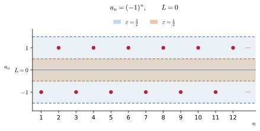
שלילת \(1\), \(-1\) ו \(0\) לבדה עדיין אינה שוללת כל מספר ממשי אחר. כדי להראות שאין גבול, צריך טיעון שמתאים לכל מועמד \(L\).
אין צורך לכלול את כל הניסיונות בפתרון. הנה פתרון קצר ששולל כל מועמד בבת אחת.
יהי \(L\) מספר ממשי כלשהו. לפי אי־שוויון המשולש, \[\begin{aligned} 2=|1-(-1)| &=|(1-L)+(L+1)|\\ &\le |1-L|+|L+1|\\ &=|1-L|+|-1-L|. \end{aligned}\] לכן לפחות אחד משני המרחקים מ \(L\) גדול או שווה ל \(1\). אילו שניהם היו קטנים מ \(1\), סכומם היה קטן מ \(2\), בניגוד לאי־שוויון שקיבלנו.
נבחר \(\varepsilon=\frac{1}{2}\). הערך שמרחקו מ \(L\) לפחות \(1\) חוזר בכל שני אינדקסים בסדרה \(a_n=(-1)^n\). לכן לכל אינדקס טבעי \(N\) קיים \(n\ge N\) שעבורו \[|a_n-L|\ge1>\frac12=\varepsilon.\] כלומר, תמיד קיים איבר נוסף מחוץ לרצועה. לא קיים \(N\) שממנו והלאה כל האיברים בתוכה. לכן \(L\) אינו גבול; ומכיוון שהטיעון מתאים לכל \(L\), הסדרה אינה מתכנסת.
שיטת פתרון 2.2.15 — מפרידים בין שני מספרים שונים.
לשני מספרים \(a<b\) קיים מרחק חיובי \(b-a\). כדי לבחור סביבם סביבות שאינן חופפות, נבחר \[\varepsilon=\frac{b-a}{4}.\] כל סביבה נמשכת רק רבע מהדרך אל המרכז האחר, ולכן נשאר ביניהן רווח.
מדוע לא קיים מספר שנמצא בשתי הסביבות? אילו מספר \(x\) היה בשתיהן, היה מתקיים \[|x-a|<\varepsilon,\] וגם \[|x-b|<\varepsilon.\] לפי אי־שוויון המשולש, היינו מקבלים \[\begin{aligned} b-a=|b-a| &=|(b-x)+(x-a)|\\ &\le |b-x|+|x-a|\\ &<2\varepsilon\\ &=\frac{b-a}{2}. \end{aligned}\] זה בלתי אפשרי: מספר חיובי אינו קטן מחצי מעצמו. לכן שתי הסביבות אינן חופפות.
הבחירה עובדת לכל שני מספרים שונים, קרובים ככל שיהיו. אין צורך למצוא את הרדיוס הגדול ביותר שמתאים; רבע מהמרחק תמיד מספיק.
הסבר — בחירת סביבות נפרדות — דוגמה.
עבור \(a=2\) ו \(b=6\) נבחר \[\begin{aligned} \varepsilon&=\frac{b-a}{4}\\ &=\frac{6-2}{4}\\ &=1. \end{aligned}\] הסביבות הן \((1,3)\) ו \((5,7)\). באיור רואים שני קטעים פתוחים נפרדים על ישר המספרים.
בדיקה עצמית — בחירת סביבות נפרדות.
עבור \(a=2\) ו \(b=6\), המרחק הוא \(4\), ולפי השיטה אפשר לבחור \(\varepsilon=\) \(1\).
מחשבים \(\varepsilon=\frac{b-a}{4}=\frac{6-2}{4}=1\). הסביבות הן \((1,3)\) ו \((5,7)\). אילו \(x\) היה בשתיהן, אי־שוויון המשולש היה נותן \(4\le|6-x|+|x-2|<2\), וזה בלתי אפשרי.
סימולציה 2.2.16 — מצמצמים את הרצועה ובודקים את הטענה.
המטרה של הסימולציה היא להראות שהצלחה עבור \(\varepsilon\) אחד אינה מוכיחה גבול.
נבדוק את הסדרה \(a_n=(-1)^n\) ברצועה רחבה, ואז נצמצם אותה סביב אותו מועמד לגבול.
בחרו מועמד \(L\) ולחצו בדיקת הרצועה. הקטינו את \(\varepsilon\) עד \(\frac{1}{2}\) ובדקו שוב: ערך שהיה בתוך הרצועה יוצא ממנה, וממשיך להופיע בחוץ כל שני אינדקסים.
איבר חריג יחיד אינו מספיק לשלילת גבול. כאן הערך שבחוץ חוזר אינסוף פעמים.
בדיקה עצמית — פגענו ביעד. האם זה מספיק?
(א) בסדרה \(a_n=n\) מתקיים \(a_3=3\). האם מכאן שהגבול הוא \(3\)?
באיור נבחר \(\varepsilon=1\).
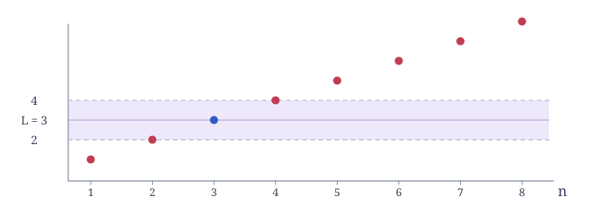
לא. למשל, עבור \(\varepsilon=1\) צריך שכל האיברים מאינדקס מסוים יהיו בקטע \((2,4)\). אבל כל האיברים באינדקסים \(4,5,6,\ldots\) נמצאים על השפה או מחוץ לקטע. הפגיעה באינדקס \(3\) אינה עוזרת בהמשך.
(ב) בסדרה \[4,4,4,7,7,7,\ldots\] כל האיברים מאינדקס \(4\) והלאה שווים \(7\). האם הסדרה מתכנסת אל \(4\)?
באיור נבחר \(\varepsilon=1\).
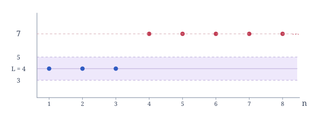
לא. שלוש פגיעות ב \(4\) אינן מספיקות: בהמשך מתקיים תמיד \(|a_n-4|=3\). עבור \(\varepsilon=1\) אין אינדקס שממנו הדרישה מתקיימת תמיד.
(ג) האם אינסוף איברים השווים ל \(L\) מבטיחים שהסדרה מתכנסת אל \(L\)? הסתכלו בסדרה שמתחלפת בין שני מספרים קבועים \(L<M\): \[L,M,L,M,L,M,\ldots\]
באיור נבחר \(0<\varepsilon<M-L\).
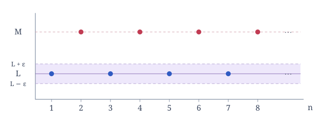
לא. עבור \(\varepsilon\) שנבחר, כל איבר השווה \(M\) נמצא מחוץ לסביבה של \(L\), ואיברים כאלה מופיעים אחרי כל אינדקס שנבחר. הסדרה פוגעת ב \(L\) אינסוף פעמים, אבל אינה נשארת קרובה אליו.
(ד) לעומת זאת, נבחן את הסדרה \[7,7,7,4,4,4,\ldots\] כל האיברים מאינדקס \(4\) והלאה שווים \(4\). האם עכשיו הגבול הוא \(4\)?
באיור נבחר \(\varepsilon=1\).
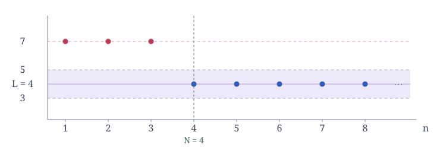
כן. בוחרים \(N=4\). כל האיברים שממנו והלאה שווים \(4\), ולכן \(|a_n-4|=0<\varepsilon\) לכל \(\varepsilon>0\).
שימו לב — טעות נפוצה — רצועה רחבה יכולה להטעות.
מציאת \(N\) מתאים עבור \(\varepsilon\) אחד אינה מוכיחה ש \(L\) הוא הגבול. צריך להצליח לכל \(\varepsilon>0\).
בסדרה \(a_n=(-1)^n\), עבור \(L=0\) ו \(\varepsilon=\frac{3}{2}\) מתקיים \(|a_n-0|=1<\frac{3}{2}\) לכל \(n\ge1\). אבל עבור \(\varepsilon=\frac{1}{2}\), כל האיברים מחוץ לרצועה. באיור רואים את שתי הרצועות סביב אותו \(L=0\).
תובנה חשובה — אם הדרישה נכשלת, הקטנת \(\varepsilon\) אינה עוזרת.
נתונות סדרה \((a_n)_{n=1}^{\infty}\) ומספר \(L\).
אם לא קיים \(N\) מתאים עבור \(\varepsilon_0>0\), לא קיים \(N\) מתאים גם עבור כל \(0<\varepsilon<\varepsilon_0\).
הכישלון עבור \(\varepsilon_0\) פירושו שאינסוף איברים מקיימים \(|a_n-L|\ge\varepsilon_0\). עבור אותם איברים, \[|a_n-L|\ge\varepsilon_0>\varepsilon.\] לכן הם נשארים בחוץ גם כשהרצועה מצטמצמת. הדרישה עדיין נכשלת אחרי כל אינדקס שנבחר.
דוגמה 2.2.17 — שתי רצועות שאינן מכילות את איברי הסדרה.
נתונה \(a_n=(-1)^n\), עבור \(n\ge1\), ונבדוק את \(L=0\). לכל \(n\) מתקיים \(|a_n-0|=1\). לכן אין \(N\) מתאים עבור \(\varepsilon_0=\frac{3}{4}\), וגם לא עבור \(\varepsilon=\frac{1}{2}\): כל האיברים נמצאים מחוץ לשתי הרצועות.
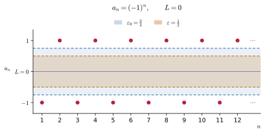
בדיקה עצמית — האם צמצום הרצועה יחשוף את הכישלון?
נתונות סדרה \((a_n)_{n=1}^{\infty}\) ומספר \(L\) שאינו הגבול שלה. בודקים סביב \(L\) את הספים \(\varepsilon_k=\frac{1}{k}\), כלומר \(1,\frac{1}{2},\frac{1}{3},\ldots\).
האם מובטח שנגיע לסף שעבורו אינסוף איברים מקיימים \(|a_n-L|\ge\varepsilon_k\)?
כן. מכיוון ש \(L\) אינו הגבול, קיים \(\varepsilon_0>0\) שעבורו אינסוף איברים מקיימים \[|a_n-L|\ge\varepsilon_0.\] כדי לקבל \(\frac1k<\varepsilon_0\), נדרש \(k>\frac1{\varepsilon_0}\). לכן נבחר \[k_0=\left\lfloor\frac1{\varepsilon_0}\right\rfloor+1.\] לכל \(k\ge k_0\), אותם אינסוף איברים מקיימים \[|a_n-L|\ge\varepsilon_0>\frac1k.\] לכן מובטח שנגיע לסף שבו הדרישה נכשלת. ייתכן שזה יקרה עוד לפני \(k_0\).
בדיקה עצמית — מה קורה כשמשנים את רוחב הרצועה?
נתונה סדרה ומספר \(L\). עבור סף מסוים \(\varepsilon_0>0\) קיימים אינסוף איברים מחוץ לרצועה סביב \(L\).
האם גם עבור \(\varepsilon=\frac{\varepsilon_0}{2}\) קיימים אינסוף איברים בחוץ?
כן. הרצועה החדשה מוכלת בקודמת, ולכן כל איבר שהיה בחוץ נשאר בחוץ.
האם גם עבור \(\varepsilon=2\varepsilon_0\) חייבים להיות אינסוף איברים בחוץ?
לא בהכרח. למשל, בסדרה \((-1)^n\) סביב \(L=0\), עבור \(\varepsilon_0=\frac{3}{4}\) כולם בחוץ, ועבור \(2\varepsilon_0=\frac{3}{2}\) כולם בפנים. אם נתחיל במקום זאת ב \(\varepsilon_0=\frac{1}{4}\), גם לאחר ההכפלה כולם יישארו בחוץ.
דוגמה 2.2.18 — סופרים איברים, לא ערכים שונים.
נתונה הסדרה \[1,1,1,\frac32,2,2,2,\ldots\] כל האיברים מאינדקס \(5\) והלאה שווים \(2\). עבור \(L=2\) ו \(\varepsilon=\frac14\), הסביבה היא \((\frac74,\frac94)\).
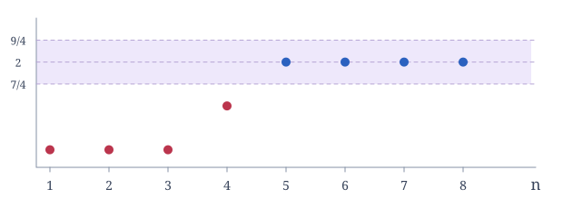
כמה איברים מחוץ לסביבה? \(4\)
בחרו אינדקס שממנו כל האיברים בסביבה: \(N=\) \(5\).
שלוש ההופעות של \(1\) וההופעה של \(\frac32\) הן ארבעה איברים. כל האיברים מאינדקס \(5\) והלאה שווים \(2\), ולכן אותו \(N=5\) מתאים גם לכל \(\varepsilon\) חיובי קטן יותר.
חשוב לזכור — רק מספר סופי של חריגים.
בסדרה המתכנסת אל \(L\), לכל \(\varepsilon>0\) יש רק מספר סופי של איברים מחוץ לסביבה. כולם באינדקסים שלפני \(N\); מאינדקס \(N\) והלאה אין עוד חריגים. על ישר המספרים כמה איברים יכולים להופיע באותה נקודה, ולכן בספירה צריך לזכור את האינדקסים שלהם.
זנב של סדרה
הגדרה 2.2.19 — זנב של סדרה.
בסדרה \((a_n)_{n=1}^{\infty}\), הזנב שמתחיל באינדקס \(N\) הוא סדרת כל האיברים מאינדקס זה והלאה, לפי סדרם: \[a_N,a_{N+1},a_{N+2},\ldots\] כוללים את האיבר \(a_N\) עצמו ואת כל האיברים שאחריו; אין דילוגים בין האיברים.
דוגמה 2.2.20 — זנב שמתחיל באינדקס ארבע.
נתונה סדרה \((a_n)_{n=1}^{\infty}\). נבחר את הזנב שמתחיל באינדקס \(N=4\): משאירים בחוץ את שלושת האיברים הראשונים, והזנב הוא \(a_4,a_5,a_6,\ldots\).
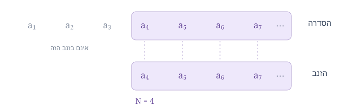
טענה 2.2.21 — הזנב הוא בעצמו סדרה.
תהי \((a_n)_{n=1}^{\infty}\) סדרה, ויהי \(k\ge0\) מספר שלם. הזנב לאחר השמטת \(k\) האיברים הראשונים הוא הסדרה \((b_n)_{n=1}^{\infty}\) המוגדרת על ידי \[b_n=a_{n+k}.\]
מתחילים לספור מחדש את איברי הזנב מהאינדקס \(1\). המספר \(k\) קבוע, ואילו \(n=1,2,3,\ldots\) סופר את איברי הסדרה החדשה. האיברים עצמם וסדרם אינם משתנים; רק האינדקסים מתחילים מחדש.
דוגמה 2.2.22 — האינדקסים של זנב הסדרה \(\frac{1}{n}\).
נתונה הסדרה \(a_n=\frac{1}{n}\), עבור \(n\ge1\). נשמיט את שלושת איבריה הראשונים ונגדיר \(b_n=a_{n+3}=\frac{1}{n+3}\). אז \[b_1=a_4=\frac{1}{4},\qquad b_2=a_5=\frac{1}{5},\qquad b_3=a_6=\frac{1}{6}.\] האיברים נשארו אותם איברים; רק מתחילים לספור אותם מחדש מהאינדקס \(1\).
באופן כללי, הזנב שמתחיל באיבר \(a_N\) מתקבל בבחירה \(k=N-1\).
טענה 2.2.23 — לסדרה ולזנב שלה אותו גבול.
תהי \((a_n)_{n=1}^{\infty}\) סדרה, יהי \(k\ge0\) שלם קבוע, ותהי \((b_n)_{n=1}^{\infty}\) הסדרה המוגדרת על ידי \(b_n=a_{n+k}\). לכל \(L\in\mathbb R\), \[a_n\longrightarrow L\quad\Longleftrightarrow\quad b_n\longrightarrow L.\]
דוגמה 2.2.24 — העברת אינדקס מתאים מהסדרה לזנב.
נתונה סדרה \((a_n)_{n=1}^{\infty}\) ונגדיר \(b_n=a_{n+3}\). עבור \(L\in\mathbb{R}\) ו \(\varepsilon>0\), נניח ש \(|a_n-L|<\varepsilon\) לכל \(n\ge6\). בסדרה החדשה \(b_3=a_6\), ולכן לכל \(n\ge3\) מתקיים \(|b_n-L|=|a_{n+3}-L|<\varepsilon\). הדרישה עוברת מאינדקס \(6\) בסדרה המקורית לאינדקס \(3\) בזנב. אלה בדיוק אותם איברים.
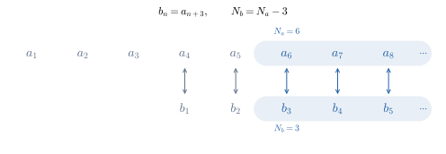
הסבר — מדוע לסדרה ולזנב אותו גבול?
מהסדרה המקורית לזנב. נניח ש \(a_n\to L\), וניקח \(\varepsilon>0\). קיים אינדקס \(N_a\) כך שלכל \(n\ge N_a\) מתקיים \(|a_n-L|<\varepsilon\).
עבור הסדרה \(b_n=a_{n+k}\) נבחר \[N_b=\max\{1,N_a-k\}.\] כלומר, מפחיתים \(k\) מהאינדקס; אם התוצאה קטנה מ \(1\), מתחילים באינדקס \(1\).
לכל \(n\ge N_b\) מתקיים \(n+k\ge N_a\), ולכן \[|b_n-L|=|a_{n+k}-L|<\varepsilon.\] הבחירה אפשרית לכל \(\varepsilon>0\), ולכן \(b_n\to L\).
מהזנב לסדרה המקורית. נניח ש \(b_n\to L\), וניקח \(\varepsilon>0\). קיים אינדקס \(N_b\) כך שלכל \(n\ge N_b\) מתקיים \(|b_n-L|<\varepsilon\).
עבור הסדרה המקורית נבחר \[N_a=N_b+k.\] לכל \(n\ge N_a\) מתקיים \(n-k\ge N_b\), ולכן \[|a_n-L|=|b_{n-k}-L|<\varepsilon.\] גם בכיוון הזה הבחירה אפשרית לכל \(\varepsilon>0\), ולכן \(a_n\to L\).
הכללים מתייחסים לכל סף \(\varepsilon\) בנפרד: מעבירים את האינדקס שמתאים לסף הזה. אין צורך לבחור את האינדקס הקטן ביותר האפשרי.
טענה 2.2.25 — שינוי של מספר סופי של איברים.
שינוי של מספר סופי של איברים אינו משנה את הגבול או את עצם ההתכנסות.
הסבר — משנים את ההתחלה, שומרים על הזנב.
אם נחליף את שלושת האיברים הראשונים של הסדרה \(a_n=\frac{1}{n}\) במספרים \(100\), \(-1000\) ו \(7\), נקבל \[100,\;-1000,\;7,\;\frac{1}{4},\;\frac{1}{5},\;\ldots\] הזנב החל מאינדקס \(4\) נשאר אותו זנב. לכל \(\varepsilon>0\) אפשר לבחור \(N\ge4\) שגדול גם מ \(\frac{1}{\varepsilon}\), ולכן הגבול נשאר \(0\).
סימולציה 2.2.26 — שינוי האיברים שלפני הזנב.
המטרה של הסימולציה היא לראות ששינוי האיברים שלפני הזנב אינו משנה את הזנב עצמו.
מתחילים בסדרה \(a_n=\frac{1}{n}\), שגבולה \(0\). בחרו את תחילת הזנב \(N\) ולחצו שינוי האיברים שלפני \(N\). הנקודות האפורות משתנות; הנקודות הכחולות נשארות במקומן, והגבול נשאר \(0\).
בדיקה עצמית.
שינינו את מיליון האיברים הראשונים של סדרה המתכנסת אל \(2\). האם הגבול יכול להשתנות?
מיליון הוא עדיין מספר סופי. אפשר לבחור את תחילת הזנב אחרי כל האיברים ששונו.
נבחן את הסדרה \(a_n=n\), את המועמד \(L=3\) ואת \(\varepsilon=1\). הדרישה היא שהאיברים יהיו בקטע \((2,4)\).
האיבר \(a_3=3\) נמצא בתוך הקטע. האם \(N=3\) מבטיח שכל האיברים מאינדקס זה והלאה יהיו בקטע?
לא. כבר האיבר הבא, \(a_4=4\), נמצא על שפת הקטע ואינו בתוכו. האיברים \(a_5=5,a_6=6,\ldots\) נמצאים מחוץ לקטע ומתרחקים ממנו. צריך שהדרישה תתקיים לכל \(n\ge N\); בדיקת האיבר \(a_N\) לבדו אינה מספיקה.
בדיקה עצמית — שתי סדרות שמסכימות בהמשך.
נתונות שתי סדרות \((a_n)_{n=1}^{\infty}\) ו \((b_n)_{n=1}^{\infty}\) כך שלכל \(n\ge5\) מתקיים \(a_n=b_n\). ארבעת האיברים הראשונים שלהן יכולים להיות שונים. האם הטענות הבאות נכונות?
אם \((a_n)\) מתכנסת, גם \((b_n)\) מתכנסת.
כן. שתי הסדרות מסכימות מאינדקס \(5\) והלאה. שינוי ארבעת האיברים הראשונים אינו משנה את ההתכנסות.
אם \((a_n)\) אינה מתכנסת למספר ממשי, גם \((b_n)\) אינה מתכנסת למספר ממשי.
כן. אילו \((b_n)\) הייתה מתכנסת, גם \((a_n)\) הייתה מתכנסת, כי הן נבדלות רק בארבעת האיברים הראשונים.
ייתכן שאחת מתכנסת והשנייה אינה מתכנסת.
לא. מכיוון שהסדרות מסכימות לכל \(n\ge5\), הן מתכנסות יחד או שאף אחת מהן אינה מתכנסת.
אם שתיהן מתכנסות, הגבולות שווים.
כן. לכל \(\varepsilon>0\) אפשר לבחור את אינדקס ההתחלה גם אחרי ארבעת האיברים הראשונים. משם והלאה האיברים שווים, ולכן אותו גבול מתאים לשתי הסדרות.
ייתכן ששתיהן מתכנסות לגבולות שונים.
לא. שינוי מספר סופי של איברים אינו משנה את הגבול; הסדרות נבדלות לכל היותר בארבעה איברים.
דוגמה 2.2.27 — אותם איברים, אינדקסים אחרים.
נחזור לסדרה \(a_n=\frac{1}{n}\), שכבר הוכחנו כי היא מתכנסת לאפס. נקבע מספר שלם \(k\ge0\) ונגדיר \[b_n=\frac1{n+k}=a_{n+k}.\] כפי שראינו ב טענה על הזנב כסדרה, זו הסדרה שמתקבלת מהשמטת \(k\) האיברים הראשונים של \((a_n)_{n=1}^{\infty}\).
למשל, כש \(k=3\), \[\begin{aligned} b_1&=a_4=\frac14,\\ b_2&=a_5=\frac15,\\ b_3&=a_6=\frac16,\quad\ldots \end{aligned}\]
(א) האם גם \(b_n\to0\)?
כן. לכל \(\varepsilon>0\), כל איברי הסדרה \(a_n=\frac{1}{n}\) מאינדקס מתאים והלאה קרובים לאפס. גם איברי הזנב מגיעים לאותו חלק של הסדרה ונשארים בו. השמטת האיברים הראשונים אינה משנה את הגבול, ולכן \[\lim_{n\to\infty}\frac1{n+k}=0.\]
(ב) עבור \(\varepsilon>0\) נתון, ידוע ש \(\frac{1}{n}<\varepsilon\) לכל \(n\ge20\). נבחר \(k=3\), כלומר \(b_n=\frac{1}{n+3}\). מאיזה אינדקס בסדרה \((b_n)_{n=1}^{\infty}\) מובטחת אותה דרישה?
אפשר לבחור \(N_b=\) \(17\).
לכל \(n\ge17\) מתקיים \(n+3\ge20\), ולכן \[|b_n-0|=\frac1{n+3}<\varepsilon.\] גם אינדקס מאוחר יותר מתאים.
(ג) נחזור למספר שלם קבוע \(k\ge0\) ולסדרה \(b_n=\frac{1}{n+k}\). ידוע ש \(\frac{1}{n}<\varepsilon\) לכל \(n\ge N\). איזה תנאי מתאר בדיוק את כל האינדקסים \(n\) שעבורם \(b_n\) נלקח מהחלק הזה של הסדרה המקורית?
צריך שהאינדקס המקורי \(n+k\) יגיע לפחות ל \(N\). אפשר לבחור \(N_b=N-k\) אם הוא חיובי. אם \(N-k\le1\), אפשר להתחיל ב \(N_b=1\). בכל מקרה, גם הבחירה \(N_b=N\) מספיקה; אין חובה להתחיל מוקדם ככל האפשר.
בדיקה עצמית — מוסיפים איברים בתחילת הסדרה.
נתונה סדרה \((a_n)_{n=1}^{\infty}\) המתכנסת אל \(L\). מוסיפים לפניה \(100\) מספרים ממשיים כלשהם, ואחריהם משאירים את כל איברי הסדרה המקורית באותו סדר. נסמן את הסדרה שהתקבלה ב \((b_n)_{n=1}^{\infty}\).
האם גם הסדרה החדשה מתכנסת אל אותו גבול \(L\)?
כן. האיבר \(a_1\) מופיע כעת באינדקס \(101\), ובאופן כללי \[b_{n+100}=a_n.\] אם עבור \(\varepsilon>0\) כל איברי הסדרה המקורית מאינדקס \(N\) והלאה קרובים ל \(L\) במרחק קטן מ \(\varepsilon\), אותה דרישה מתקיימת בסדרה החדשה מאינדקס \(N+100\) והלאה. לכן הוספת \(100\) איברים בתחילת הסדרה אינה משנה את הגבול, בלי קשר לערכים שהוספנו.
למה הגבול יחיד?
משפט 2.2.28 — יחידות הגבול.
לסדרה מתכנסת יש גבול אחד בלבד.
הסבר — מדוע אי אפשר להתכנס לשני מספרים שונים?
כפי שראינו ב שיטה להפרדת שני מספרים, אפשר לצייר סביב שני מספרים שונים \(L_1,L_2\) סביבות שאין ביניהן חפיפה.
אם \(a_n\to L_1\), אז מאינדקס מתאים והלאה כל האיברים בסביבה שבחרנו סביב \(L_1\). אף אחד מהם אינו יכול להיות גם בסביבה הנפרדת של \(L_2\). לכן בסביבה הזאת של \(L_2\) הדרישה נכשלת: מאותו אינדקס כל האיברים בחוץ. מכאן ש \(L_2\) אינו גבול. אותו הסבר עובד גם בהחלפת התפקידים.
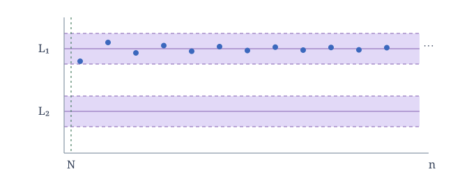
דוגמה 2.2.29 — לסדרה \(\frac{1}{n}\) אין גבול נוסף.
נתונה הסדרה \(a_n=\frac{1}{n}\), עבור \(n\ge1\). הראינו שגבולה \(0\), ולכן לפי יחידות הגבול היא אינה יכולה להתכנס גם ל \(1\). אפשר לראות זאת גם ישירות: לכל \(n\ge5\) מתקיים \(a_n<\frac{1}{4}\), ולכן \[|a_n-1|=1-a_n>\frac{3}{4}.\] לכן עבור \(\varepsilon=\frac{1}{4}\) לא קיים אינדקס שממנו כל האיברים ברצועה סביב \(1\).
דימוי — ליד איזה יעד נשארים?
יוצאים מפתח תקווה ורוצים להישאר קרובים גם לחיפה וגם לנהריה. כשדורשים קרבה גדולה מספיק, אי אפשר להישאר ליד שני היעדים יחד. אותו הדבר קורה אפילו עם שני יעדים קרובים, כמו רחוב סומסום \(1\) ורחוב סומסום \(2\): אפשר לבחור סביבם אזורים קטנים שאינם חופפים, ואז להישאר רק באחד מהם.
בדיקה עצמית — שתי סביבות נפרדות.
כל איברי הסדרה החל מאינדקס \(20\) נמצאים בקטע \((1,2)\). האם ייתכן שמאינדקס \(30\) והלאה כולם נמצאים גם בקטע \((4,5)\)?
לא. למשל, האיבר באינדקס \(30\) היה צריך להיות בשני הקטעים, ואין מספר שנמצא בשניהם. גם האיברים שאחריו אינם יכולים לקיים את שתי הדרישות יחד.
שתי התנהגויות באותה סדרה
הגדרה 2.2.30 — תת־סדרה.
נתונה סדרה \((a_n)_{n=1}^{\infty}\). בוחרים אינדקסים טבעיים \(n_1,n_2,n_3,\ldots\), כך שבכל בחירה מתקדמים לאינדקס גדול יותר: \[n_{k+1}>n_k.\] האיברים שנבחרו הם \[a_{n_1},a_{n_2},a_{n_3},\ldots\] זוהי תת־סדרה של \((a_n)_{n=1}^{\infty}\), ומסמנים אותה \((a_{n_k})_{k=1}^{\infty}\).
האינדקס \(k\) סופר את האיברים בתת־הסדרה; \(n_k\) הוא האינדקס של האיבר שנבחר בסדרה המקורית.
אפשר לחשוב על הבחירה כעל קפיצות בין איברי הסדרה: קופצים תמיד קדימה, לפחות אינדקס אחד בכל צעד. אפשר לעבור לאיבר הבא, ואפשר לדלג על כמה איברים. אסור לחזור לאחור או להישאר באותו אינדקס.
דוגמה 2.2.31 — האיברים הזוגיים של הסדרה \(\frac{1}{n}\).
בסדרה \(a_n=\frac{1}{n}\), עבור \(n\ge1\), נבחר \(n_k=2k\). אלה אינדקסים טבעיים עולים, ולכן הם מגדירים תת־סדרה: \[a_{n_k}=a_{2k}=\frac{1}{2k},\qquad k\ge1.\] איבריה הראשונים הם \(\frac{1}{2},\frac{1}{4},\frac{1}{6},\ldots\). באיבר השלישי שלה, \(k=3\), האינדקס המקורי הוא \(n_3=6\), והערך הוא \(a_6=\frac{1}{6}\).
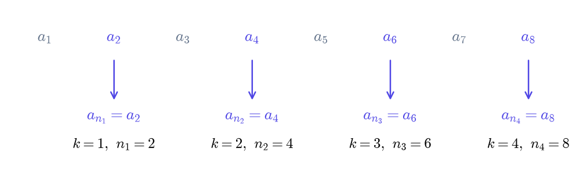
דוגמה 2.2.32 — מהי תת־סדרה ומה לא?
נבחן את הסדרה \[1,2,3,4,5,6,\ldots\] הסדרה \[2,4,6,\ldots\] היא תת־סדרה שלה: בחרנו איברים מהסדרה המקורית ושמרנו על הסדר שבו הם מופיעים.
לעומת זאת, הסדרה \[2,1,3,4,5,6,\ldots\] אינה תת־סדרה שלה. אלה אותם מספרים, אבל הסדר השתנה: אחרי שבחרנו את האיבר \(2\), אי אפשר לחזור לאינדקס של האיבר \(1\).
כל סדרה היא תת־סדרה של עצמה. אין חובה לדלג על איברים: בוחרים \(n_k=k\), ומקבלים את כל האיברים באותו סדר.
באיור מוצגות שתי דרכי בחירה בסדרה כלשהי \((a_n)\):
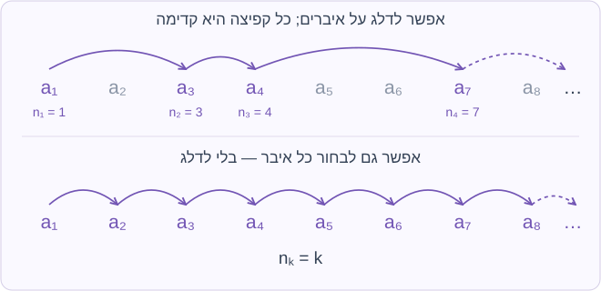
בדיקה עצמית — מה מותר לבחור?
האם \(1,1,2,3,4,\ldots\) היא תת־סדרה של \(1,2,3,4,\ldots\)?
לא. המספר \(1\) מופיע בסדרה המקורית פעם אחת בלבד, ואי אפשר לבחור את אותו אינדקס פעמיים. ערכים שווים יכולים להופיע בתת־סדרה רק אם הם מופיעים באינדקסים שונים בסדרה המקורית.
משפט 2.2.33 — הגבול של תת־סדרה.
אם סדרה מתכנסת אל \(L\), כל תת־סדרה שלה מתכנסת גם היא אל \(L\).
לכן, אם שתי תתי־סדרות מתכנסות למספרים שונים, הסדרה המקורית אינה מתכנסת.
הסבר — מדוע תת־סדרה שומרת על הגבול?
בחירת חלק מהאיברים אינה משנה את העובדה שכל האיברים מאינדקס מסוים והלאה קרובים לגבול. לכן תת־סדרה של סדרה מתכנסת אינה יכולה להוביל לגבול אחר.
דוגמה 2.2.34 — גבול האיברים הזוגיים של הסדרה \(\frac{1}{n}\).
נתונה הסדרה \(a_n=\frac{1}{n}\), שגבולה \(0\). נבחר \(n_k=2k\) ונקבל את תת־הסדרה \(a_{n_k}=\frac{1}{2k}\), עבור \(k\ge1\). לפי המשפט על גבול תת־סדרה, \[\lim_{k\to\infty}a_{n_k}=\lim_{k\to\infty}\frac{1}{2k}=0.\] כאן \(k\) הוא האינדקס בתת־הסדרה; הגבול נשאר אותו מספר.
סימולציה 2.2.35 — בוחרים חלק מהאיברים.
המטרה של הסימולציה היא לראות שבחירת תת־סדרה משאירה את ערכי האיברים שנבחרו ואת הגבול.
נבחר תת־סדרה מתוך \(a_n=\frac{1}{n}\), שהראינו כי היא מתכנסת אל \(0\).
בחרו אינדקסים זוגיים, אי־זוגיים או כל אינדקס שלישי. העיגולים הסגולים הם איברי תת־הסדרה; הכחולים הם האיברים שלא נבחרו.
עברו לתצוגת תת־הסדרה בלבד: הגבהים נשארים, והאינדקסים מתחלפים מ \(n_k\) ל \(k=1,2,3,\ldots\). שנו גם את \(\varepsilon\) ושימו לב שהאיברים המאוחרים נשארים ברצועה סביב \(0\).
דוגמה 2.2.36 — קודם בוחרים אינדקסים, ואז מציבים.
נחזור אל \(a_n=(-1)^n\). נבחר את האינדקסים הזוגיים בסדרה המקורית: \[n_1=2,\quad n_2=4,\quad n_3=6,\quad\ldots\] כלומר, הנוסחה לאינדקס שנבחר היא \[n_k=2k.\] רק עכשיו מציבים אותו בנוסחת האיבר: \[a_{n_k}=(-1)^{n_k}=(-1)^{2k}=1.\]
| האינדקס בתת־הסדרה \(k\) | האינדקס המקורי שנבחר \(n_k=2k\) | האיבר שנבחר \(a_{n_k}\) |
|---|---|---|
| \(1\) | \(2\) | \(a_2=1\) |
| \(2\) | \(4\) | \(a_4=1\) |
| \(3\) | \(6\) | \(a_6=1\) |
לבחירה השנייה ניתן שם אחר: \(m_k\) הוא האינדקס האי־זוגי שנבחר במקום \(k\). \[m_1=1,\quad m_2=3,\quad m_3=5,\quad\ldots\] כלומר \(m_k=2k-1\), ולכן \[a_{m_k}=(-1)^{m_k}=(-1)^{2k-1}=-1.\] קיבלנו שתי סדרות קבועות: הראשונה מתכנסת אל \(1\), והשנייה אל \(-1\). לפי המשפט על תתי־סדרות, זו דרך נוספת להראות שהסדרה המקורית אינה מתכנסת.
בבחירה \(n_k=2k\), כאשר \(k=3\), האינדקס המקורי הוא \(n_3=\) \(6\). האיבר שנבחר הוא \(a_{n_3}=\) \(1\).
האינדקס \(3\) סופר את הבחירות; הבחירה השלישית היא האיבר באינדקס \(6\) של הסדרה המקורית, שערכו \(1\).
בדיקה עצמית — תת־סדרה אחת אינה מספיקה.
בסדרה \((-1)^n\) יש תת־סדרה המתכנסת אל \(1\). האם נובע מכך שהסדרה כולה מתכנסת?
לא. תת־הסדרה משאירה בחוץ את האיברים השווים \(-1\), והם ממשיכים להופיע. צריך לבדוק גם מה קורה לאיברים שלא בחרנו.
שאלה פתורה 2.2.37 — מציבים את האיבר בעוזר הפתרון.
נתון \(a_n=1+\frac2n\). נתרגל את התנאי \(|a_n-1|<\frac14\).
תחילה בחרו פישוט והחלפה ← הצבה לפי הגדרת הסדרה, והקלידו \(a_n\). בצעד הבא בחרו פישוט האגפים: המספרים \(1\) ו \(-1\) מתבטלים, ו \(\frac{2}{n}\) חיובי. אחר כך כופלים במספרים חיוביים דרך פעולות על האגפים ← כפל.
מציבים את הגדרת האיבר.
מפשטים את המרחק; \(n\) חיובי.
כופלים ב \(n\).
כופלים ב \(4\). לכן אפשר לבחור \(N=9\).
פתרון במילים
עבור \(a_n=1+\frac{2}{n}\) נפתור את הדרישה \(|a_n-1|<\frac{1}{4}\). נציב את נוסחת האיבר: \[\left|1+\frac{2}{n}-1\right|<\frac{1}{4}.\] הקבועים מתבטלים. מכיוון ש \(n\ge1\), מתקיים \(\frac{2}{n}>0\), ולכן אפשר להסיר את הערך המוחלט: \[\frac{2}{n}<\frac{1}{4}.\] נכפול ב \(n>0\), ואחר כך ב \(4>0\): \[2<\frac{n}{4},\qquad 8<n.\] אפשר לבחור \(N=9\). לכל \(n\ge9\) מתקיימת הדרישה. זהו חישוב עבור \(\varepsilon=\frac{1}{4}\) בלבד; הוכחת גבול דורשת בחירה מתאימה לכל \(\varepsilon>0\).
תרגילים
תרגיל 2.2.38 — מהאי־שוויון לבחירת אינדקס.
הראו שהסדרה \(a_n=\frac2{n+1}\) מתכנסת אל \(0\).
(א) מצאו אינדקס שממנו מתקיים \(|a_n-0|<\frac{1}{50}\).
כופלים ב \(n+1>0\).
כופלים ב \(50\).
מחסרים \(1\).
אפשר לבחור \(N=\) \(100\).
כל \(n\ge100\) מקיים \(n>99\), ולכן מתקיים \(|a_n-0|<\frac{1}{50}\).
(ב) הראו שהדרישה מתקיימת לכל \(\varepsilon>0\).
כופלים ב \(n+1>0\).
מחלקים ב \(\varepsilon>0\).
מחסרים \(1\) משני האגפים.
האם הבחירה \(N=\left\lfloor \frac{2}{\varepsilon}\right\rfloor+1\) מספיקה, גם אם אינה המוקדמת ביותר?
כן. זהו מספר טבעי הגדול מ \(\frac{2}{\varepsilon}\), ובפרט גדול מ \(\frac{2}{\varepsilon}-1\). לכן כל \(n\ge N\) מקיים את הדרישה. הבחירה אפשרית לכל סף חיובי, ולכן הגבול הוא \(0\).
תרגיל 2.2.39 — קירוב למספר שאינו אפס.
הראו שהסדרה \(a_n=1+\frac2n\) מתכנסת אל \(1\).
(א) בחירה מספרית של \(\varepsilon\). מצאו אינדקס \(N\) שממנו והלאה מתקיים \(|a_n-1|<\frac1{100}\).
לפי הגדרת הגבול, מחפשים \(N\) שממנו והלאה מתקיים \[|a_n-1|<\frac{1}{100}.\]
מציבים את הנוסחה של \(a_n\) בתנאי על המרחק.
מפשטים בתוך הערך המוחלט. מכיוון ש \(n>0\), הביטוי \(\frac{2}{n}\) חיובי והערך המוחלט שלו הוא עצמו.
כופלים במספר החיובי \(n\).
כופלים ב \(100\).
התחילו מהמרחק מ \(1\), ולא מהאיבר \(a_n\) עצמו.
אפשר לבחור \(N=\) \(201\).
מצאנו \(n>200\). כל אינדקס טבעי \(N\ge201\) מבטיח שהדרישה תתקיים ממנו והלאה.
(ב) \(\varepsilon>0\) כללי. כעת הוכיחו את ההתכנסות לכל \(\varepsilon>0\). פתרו את האי־שוויון \(|a_n-1|<\varepsilon\) בעוזר הפתרון, ואז כתבו בחירה מתאימה של \(N\). המספרים \(n\) ו \(\varepsilon\) חיוביים.
מציבים את הגדרת האיבר.
מפשטים את \(|a_n-1|\); \(n\) חיובי.
כופלים ב \(n>0\), ולכן כיוון האי־שוויון נשמר.
מחלקים ב \(\varepsilon>0\), ולכן כיוון האי־שוויון נשמר.
מחליפים את סדר האגפים וכותבים את האינדקס משמאל.
הפעולות הן אותן פעולות שבסעיף (א). במקום לחלק במספר קבוע, אפשר לחלק ב \(\varepsilon\), כי נתון שהוא חיובי.
כתבו את הבחירה לפי השיטה לבחירת מספר שלם גדול יותר: \(N=\) \(\left\lfloor \frac{2}{\varepsilon}\right\rfloor+1\).
הבחירה \(N=\left\lfloor \frac{2}{\varepsilon}\right\rfloor+1\) היא מספר טבעי הגדול מ \(\frac{2}{\varepsilon}\). לכן, לכל \(n\ge N\), \[|a_n-1|=\frac2n\le\frac2N<\varepsilon.\] הבחירה אפשרית לכל \(\varepsilon>0\), ולכן לפי ההגדרה הסדרה מתכנסת אל \(1\). גם אינדקס טבעי גדול יותר היה מתאים.
תרגיל 2.2.40 — מועמד לא מתאים, אבל יש גבול.
בסדרה \(a_n=1+\frac2n\) כבר הראינו שהגבול הוא \(1\). כעת הראו שהמספר \(0\) אינו הגבול.
המרחק של האיבר \(a_n\) מאפס הוא \(1+\frac{2}{n}\).
מכיוון ש \(n>0\), האם המרחק הזה גדול מ \(1\) בכל אינדקס? כן
המרחק הוא \(|1+\frac{2}{n}|=1+\frac{2}{n}\). המחובר \(\frac{2}{n}\) חיובי, ולכן המרחק גדול מ \(1\) בכל אינדקס.
נבחר \(\varepsilon=1\). האם יש אינדקס שממנו כל האיברים נמצאים בסביבה \((-1,1)\)?
לא. כל האיברים גדולים מ \(1\), ולכן שום זנב אינו בתוך הסביבה. מצאנו \(\varepsilon>0\) שעבורו דרישת ההגדרה נכשלת בכל בחירה של \(N\).
מה הראינו?
שללנו מועמד אחד. לא שללנו התכנסות: הסדרה הזאת מתכנסת אל \(1\), כפי שהראינו בתרגיל הקודם.
תרגיל 2.2.41 — קירוב מהצד השני.
הראו שהסדרה \(a_n=3-\frac4n\) מתכנסת אל \(3\). תחילה מצאו אינדקס \(N\) שממנו והלאה מתקיים \(|a_n-3|<\frac1{20}\), ואחר כך עברו ל \(\varepsilon>0\) כללי.
זהו התנאי מתוך הגדרת הגבול: לכל \(\varepsilon>0\) צריך למצוא אינדקס \(N\) כך שלכל \(n\ge N\) מתקיים \[ \lvert a_n-L\rvert<\varepsilon. \] בתרגיל הזה נתונים \(L=3\) ו \(\varepsilon=\frac{1}{20}\), ולכן מחפשים \(N\) שממנו והלאה מתקיים \[ |a_n-3|<\frac{1}{20}. \] כתבו את התנאי בעוזר הפתרון. אחר כך הציבו את הנוסחה של \(a_n\) ופתרו את האי־שוויון.
מציבים את הנוסחה של \(a_n\) בתנאי על המרחק.
מפשטים את הביטוי בתוך הערך המוחלט.
מכיוון ש \(n>0\), הביטוי \(-\frac4n\) שלילי. הערך המוחלט שלו הוא \(\frac4n\).
כופלים במספר החיובי \(n\).
כופלים ב \(20\) וכותבים את האינדקס משמאל.
גם כשהאיבר קטן מ \(3\), הביטוי \(|a_n-3|\) אינו שלילי: הוא ערך מוחלט.
אפשר לבחור \(N=\) \(81\).
האי־שוויון שקול ל \(n>80\), ולכן כל אינדקס טבעי \(N\ge81\) מתאים.
כעת נבחר \(\varepsilon>0\) כללי. איזו בחירה מבטיחה את הדרישה לכל \(n\ge N\)?
מתקיים \(|a_n-3|=\frac{4}{n}\), ולכן הדרישה שקולה ל \(n>\frac{4}{\varepsilon}\). לכל \(\varepsilon>0\) אפשר לבחור אינדקס טבעי גדול מהסף הזה. כך מראים שהמועמד הנתון הוא הגבול; הבדיקה המספרית לבדה לא הספיקה.
תרגיל 2.2.42 — מה קובעת ההגדרה?
ענו על השאלות. בסעיף (ג) בחרו גם נימוק.
(א) עבור \(a_n=\frac1n\) ו \(\varepsilon=\frac{1}{10}\), האם \(N=10\) מתאים ביחס לגבול \(0\)? לא
ומה לגבי \(N=100\)? כן
(ב) החלפנו את מאה האיברים הראשונים של \(\frac1n\) במספר \(1000\). האם עדיין מתקיים שהסדרה מתכנסת אל \(0\)? כן.
(ג) בסדרה \((-1)^n\), יש אינסוף איברים השווים \(1\). האם היא מתכנסת אל \(1\)? לא
המרחק מ \(1\) של כל איבר באינדקס אי־זוגי הוא \(2\).
איזו עובדה מראה שאין לסדרה גבול?
באינדקסים הזוגיים מתקבלת תת־סדרה קבועה שגבולה \(1\), ובאי־זוגיים מתקבלת תת־סדרה קבועה שגבולה \(-1\). לפי המשפט על גבולות של תתי־סדרות, הגבולות השונים מראים שהסדרה אינה מתכנסת.
(ד) מאה האיברים הראשונים של סדרה נמצאים במרחק קטן מ \(\frac{1}{1000}\) מהמספר \(5\). האם מכך בלבד אפשר להסיק שהגבול הוא \(5\)? לא
(א) באינדקס \(10\) מתקיים \(|a_n-0|=\frac{1}{10}\), ואילו החל מאינדקס \(100\) מתקיים \(|a_n-0|\le \frac{1}{100}\).
(ב) שינוי של מספר סופי של איברים אינו משנה את הגבול.
(ג) האיברים באינדקסים האי־זוגיים שווים \(-1\), ולכן המרחק שלהם מ \(1\) הוא \(|-1-1|=2\). הם מונעים התכנסות אל \(1\).
(ד) לא נתון דבר על האיברים הבאים. למשל, כולם יכולים להיות שווים לאפס.
תרגיל 2.2.43 — זוגיים ואי־זוגיים.
נתונה \(a_n=2+(-1)^n\). מצאו את שתי תתי־הסדרות וקבעו אם הסדרה מתכנסת.
| הבחירה | האינדקס המקורי שנבחר | הצבה באיבר, לפני פישוט | האיבר לאחר פישוט | הגבול |
|---|---|---|---|---|
| זוגיים: \(2,4,6,\ldots\); \(n_k\) | \(2k\) | \(2+(-1)^{2k}\) | \(3\) | \(3\) |
| אי־זוגיים: \(1,3,5,\ldots\); \(m_k\) | \(2k-1\) | \(2+(-1)^{2k-1}\) | \(1\) | \(1\) |
האם \((a_n)\) מתכנסת? לא
מה הנימוק?
לפי המשפט על גבולות של תתי־סדרות, אילו הסדרה הייתה מתכנסת, שתי תתי־הסדרות היו מתכנסות לאותו גבול. כאן הגבולות שונים, ולכן הסדרה אינה מתכנסת.
הציבו \(2k\) במקום \(n\) עבור האינדקסים הזוגיים, ו \(2k-1\) עבור האינדקסים האי־זוגיים.
באינדקסים הזוגיים מתקבל \(3\), ובאי־זוגיים מתקבל \(1\). הגבולות שונים, ולכן הסדרה אינה מתכנסת.
תרגיל 2.2.44 — סימן מתחלף ומרחק קטן.
נתונה \(a_n=\frac{2(-1)^n}{n+1}\). בדקו את המרחק מאפס.
כתבו את המרחק מאפס לאחר פישוט: \(\frac{2}{n+1}\).
האם המרחק שמצאתם מאפשר להראות שהסדרה מתכנסת אל \(0\)? כן
כדי שיתקיים \(|a_n-0|<\frac{1}{100}\), אפשר לבחור \(N=\) \(200\).
הערך המוחלט של \((-1)^n\) הוא \(1\), גם כשהסימן של האיבר שלילי.
המרחק מאפס הוא \(\frac2{n+1}\), וכבר ראינו שהוא נעשה קטן מכל \(\varepsilon>0\). לכן הסדרה מתכנסת לאפס. כדי שיתקיים \(|a_n-0|<\frac{1}{100}\) מספיק לבחור אינדקס טבעי גדול מ \(199\).
עבור \(\varepsilon>0\) כללי, איזו בחירה מבטיחה שכל האיברים שמאינדקס \(N\) והלאה קרובים לאפס?
המרחק הוא \(\frac{2}{n+1}\), ולכן בוחרים אינדקס טבעי \(N>\frac{2}{\varepsilon}-1\). זה אפשרי לכל \(\varepsilon>0\), וזו ההצדקה להתכנסות אל \(0\).
תרגיל 2.2.45 — התכנסות מהירה: משתמשים בלוגריתם.
הראו שהסדרה \(a_n=\frac{1}{10^n}\) מתכנסת אל \(0\). הכתיבה \(10^{-n}\) מתארת אותו איבר.
(א) מצאו אינדקס שממנו מתקיים \(|a_n-0|<\frac{1}{1000}\). אפשר להשתמש בלוגריתם בבסיס \(10\), כפי שראינו בפרק 1.
בוחרים ״לוגריתם בבסיס״, עם בסיס \(10\). שני האגפים חיוביים, והבסיס גדול מאחת, ולכן הכיוון נשמר.
משתמשים ב \(\log_{10}(10^{-n})=-n\) וב \(\frac{1}{1000}=10^{-3}\).
מחלקים ב \(-1\) והופכים את כיוון האי־שוויון.
אפשר לבחור \(N=\) \(4\).
האיבר השלישי שווה בדיוק ל \(\varepsilon=\frac{1}{1000}\). כל האיברים מאינדקס \(4\) והלאה קטנים ממנו.
(ב) כעת נטפל בסף כללי \(0<\varepsilon<1\). עבור \(\varepsilon\ge1\) הדרישה כבר מתקיימת מהאיבר הראשון, כי \(\frac{1}{10^n}\le \frac{1}{10}<1\).
מפעילים לוגריתם בבסיס \(10\) על שני האגפים החיוביים.
מפשטים את הלוגריתם של החזקה.
מחלקים ב \(-1\) והופכים את הכיוון.
עבור \(0<\varepsilon<1\), כתבו בחירה לפי שיטת הערך השלם: \(N=\) \(\left\lfloor-\log_{10}(\varepsilon)\right\rfloor+1\).
כש \(0<\varepsilon<1\), המספר \(-\log_{10}(\varepsilon)\) חיובי. הבחירה נותנת מספר טבעי גדול ממנו. לכן כל \(n\ge N\) מקיים \(10^{-n}<\varepsilon\). יחד עם המקרה \(\varepsilon\ge1\), קיבלנו את הדרישה לכל \(\varepsilon>0\).
תרגיל 2.2.46 — שלוש תתי־סדרות קבועות.
נתונה הסדרה שבה שלושת הערכים חוזרים שוב ושוב: \[2,-1,4,2,-1,4,2,-1,4,\ldots\] נבחר בנפרד את האינדקסים \(1,4,7,\ldots\), את האינדקסים \(2,5,8,\ldots\) ואת האינדקסים \(3,6,9,\ldots\).
בבחירה הראשונה, \(n_k=\) \(3k-2\), ולכן \(a_{n_k}=\) \(2\).
בבחירה השנייה, \(m_k=\) \(3k-1\), ולכן \(a_{m_k}=\) \(-1\).
בבחירה השלישית, \(p_k=\) \(3k\), ולכן \(a_{p_k}=\) \(4\).
הגבולות, באותו סדר, הם \(2\), \(-1\), \(4\).
כל בחירה נותנת סדרה קבועה, ולכן הגבול שלה הוא האיבר הקבוע.
האם הסדרה המקורית מתכנסת?
לא. לסדרה מתכנסת כל תתי־הסדרות מתכנסות לאותו גבול. כאן הגבולות שונים; למעשה, כבר שתי הבחירות הראשונות מספיקות לשלול התכנסות.
תרגיל 2.2.47 — קופצת לאפס ובחזרה — האם היא מתכנסת?
נתונה הסדרה \[1,0,\frac12,0,\frac13,0,\frac14,0,\ldots\] כל איבר זוגי שווה לאפס. באינדקסים האי־זוגיים מופיעים, לפי הסדר, \(1,\frac{1}{2},\frac{1}{3},\ldots\).
(א) מזהים את שתי הבחירות.
\(a_{2k}=\) \(0\), ואילו \(a_{2k-1}=\) \(\frac{1}{k}\).
גבול האיברים הזוגיים הוא \(0\), וגבול האיברים האי־זוגיים הוא \(0\).
באינדקסים הזוגיים מתקבלת הסדרה הקבועה אפס; באי־זוגיים מתקבלת הסדרה \(\frac{1}{k}\). לשתיהן גבול אפס.
האם עצם המעברים מאפס למספר חיובי מוכיח שהסדרה אינה מתכנסת?
לא. גם המספרים החיוביים הולכים ומתקרבים לאפס. נבדוק כעת שלכל \(\varepsilon>0\), מתקיים \(|a_n-0|<\varepsilon\) לכל האיברים מאינדקס מתאים והלאה.
(ב) מראים שהגבול הוא \(0\). יהי \(\varepsilon>0\). האיברים הזוגיים כבר עומדים בדרישה, כי עבורם \(|a_n-0|=0<\varepsilon\). לאיבר האי־זוגי באינדקס \(2k-1\) נדרוש \(\frac{1}{k}<\varepsilon\). פתרו את התנאי על \(k\):
כופלים ב \(k>0\).
מחלקים ב \(\varepsilon>0\).
נבחר \(K=\left\lfloor \frac{1}{\varepsilon}\right\rfloor+1\). כך כל איבר אי־זוגי שמספרו בבחירה הוא \(k\ge K\) עומד בדרישה. עכשיו צריך לחזור לאינדקסים של הסדרה המקורית.
איזו בחירה מבטיחה שכל איברי הסדרה המקורית שמאינדקס \(N\) והלאה עומדים בדרישה?
בוחרים \(N=2K-1\). כל אינדקס אי־זוגי \(n\ge N\) הוא מהצורה \(2k-1\) עם \(k\ge K\), ולכן מתקיים \(|a_n-0|<\varepsilon\). כל אינדקס זוגי נותן אפס. שתי האפשרויות מכסות את כל האינדקסים, ולכן הסדרה מתכנסת אל \(0\).
2.3 גבולות מוכרים וחשבון גבולות
בחישוב לפי ההגדרה חיפשנו בכל פעם אינדקס המתאים ל \(\varepsilon\) שבחרנו. לא צריך לחזור על העבודה הזאת בכל תרגיל: אפשר להיעזר בגבולות שכבר ידועים ולשלב אותם בעזרת כללי חישוב.
נכיר כמה סדרות שימושיות ואת גבולותיהן. את התוצאות נקבל ללא הוכחה; נלמד לזהות מתי הן מתאימות ואיך משתמשים בהן.
סדרות מוכרות
סדרה קבועה מתכנסת לקבוע שלה: \(c\to c\). הטבלה הבאה מרכזת את משפחות הגבולות הבסיסיות שבהן נשתמש. גבולות שמתקבלים מהן בחיבור, בכפל או בחילוק נחשב בעזרת הכללים, ולא נרשום כעובדות נוספות לזכירה.
משפט 2.3.1 — גבולות בסיסיים.
| הסדרה | הגבול | התנאים |
|---|---|---|
| \(\frac1{n^p}\) | \(0\) | \(p>0\) |
| \(q^n\) | \(0\) | \(|q|<1\) |
| \(\sqrt[n]{a}\) | \(1\) | \(a>0\) קבוע |
| \(\sqrt[n]{n}\) | \(1\) | |
| \(\frac{n^p}{q^n}\) | \(0\) | \(p>0\), \(q>1\) |
הפרמטרים \(p\), \(q\) ו \(a\) קבועים; האינדקס \(n\) הוא שמשתנה.
דוגמה 2.3.2 — אחת חלקי חזקה של האינדקס.
נשווה את \(a_n=\frac{1}{n^2}\) ואת \(b_n=\frac{1}{\sqrt n}\). נציב כמה אינדקסים:
| \(n\) | \(a_n=\frac{1}{n^2}\) | \(b_n=\frac{1}{\sqrt n}\) |
|---|---|---|
| \(1\) | \(1\) | \(1\) |
| \(4\) | \(\frac{1}{16}\) | \(\frac{1}{2}\) |
| \(100\) | \(\frac{1}{10000}\) | \(\frac{1}{10}\) |
בשתי הסדרות האיברים מתקרבים לאפס, בקצבים שונים. בראשונה המעריך הוא \(p=2\); בשנייה \(p=\frac{1}{2}\), כי \(\sqrt n=n^{\frac{1}{2}}\). שני המעריכים חיוביים, ולכן לפי הגבולות הבסיסיים, \[\lim_{n\to\infty}\frac{1}{n^2}=0,\qquad \lim_{n\to\infty}\frac{1}{\sqrt n}=0.\]
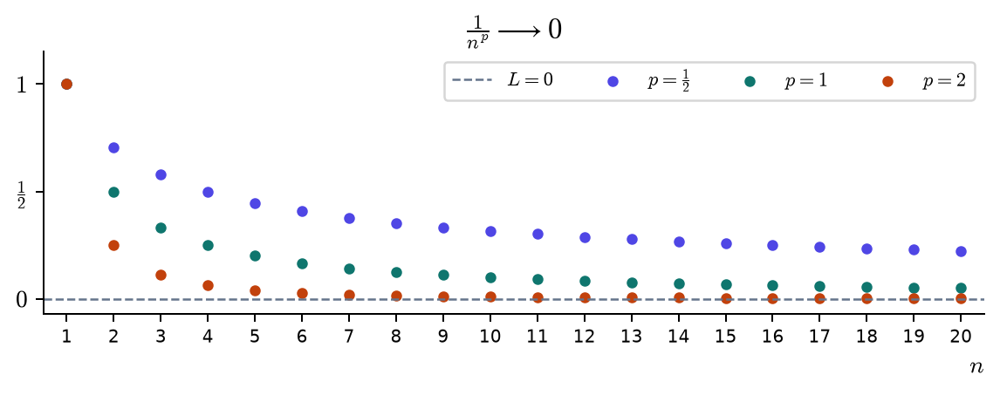
אם התנאי \(p>0\) אינו מתקיים: עבור \(p=0\) מתקבלת הסדרה \(\frac{1}{n^0}=1\), שאיבריה \(1,1,1,\ldots\) וגבולה \(1\). עבור \(p=-1\) מתקבלת \(\frac{1}{n^{-1}}=n\), שאיבריה \(1,2,3,\ldots\) ואינם מתקרבים לאפס.
דוגמה 2.3.3 — כופלים בכל צעד באותו מספר.
בסדרה \(a_n=\left(\frac{1}{2}\right)^n\) האיברים הראשונים הם \[\frac{1}{2},\quad\frac{1}{4},\quad\frac{1}{8},\quad\frac{1}{16},\quad\ldots\] בסדרה \(b_n=\left(-\frac{1}{2}\right)^n\) מתקבלים \[-\frac{1}{2},\quad\frac{1}{4},\quad-\frac{1}{8},\quad\frac{1}{16},\quad\ldots\] בשתיהן הערך המוחלט קטן פי \(2\) בכל צעד; בשנייה גם הסימן מתחלף. בשני המקרים \(|q|=\frac{1}{2}<1\), ולכן לפי הגבולות הבסיסיים, הגבול הוא \(0\).
אם התנאי \(|q|<1\) אינו מתקיים:
- \(q=1\) נותן \(1,1,1,\ldots\): הגבול הוא \(1\).
- \(q=-1\) נותן \(-1,1,-1,1,\ldots\): הסדרה אינה מתכנסת.
- \(q=2\) נותן \(2,4,8,16,\ldots\): האיברים גדלים ואינם מתקרבים לאפס.
כשהתנאי אינו מתקיים, הכלל אינו חל. אין פירוש הדבר בהכרח שאין גבול.
סימולציה 2.3.4 — השפעת הבסיס בסדרה הנדסית.
המטרה: לראות כיצד הבסיס משנה את התנהגות \(a_n=q^n\). גררו את \(q\): השוו בין \(\frac{1}{2}\) לבין \(-\frac{1}{2}\), ואז נסו \(1\), \(-1\) ו \(2\). שימו לב אם הנקודות מתקרבות לאפס, נשארות קבועות או מתרחקות; הקו המקווקו מסמן את הגבול כאשר הוא קיים.
דוגמה 2.3.5 — אותו מספר, שורשים מסדרים שונים.
בסדרה \(a_n=\sqrt[n]{16}\) המספר \(16\) נשאר קבוע, וסדר השורש משתנה: \[a_1=16,\qquad a_2=\sqrt{16}=4,\] \[a_4=\sqrt[4]{16}=2,\qquad a_8=\sqrt[8]{16}=\sqrt2.\] המספר \(16\) חיובי וקבוע, ולכן לפי הגבולות הבסיסיים, \[\lim_{n\to\infty}\sqrt[n]{16}=1.\]
גם מספר שבין \(0\) ל \(1\) מתאים. למשל, בסדרה \(b_n=\sqrt[n]{\frac{1}{16}}\) מתקיים \[b_1=\frac{1}{16},\qquad b_2=\frac{1}{4},\qquad b_4=\frac{1}{2},\qquad b_8=\frac{1}{\sqrt2}.\] כאן מתקרבים אל \(1\) מלמטה; בסדרה הקודמת מתקרבים אליו מלמעלה.
אם תנאי החיוביות אינו מתקיים: עבור \(a=0\) כל האיברים הם \(0\), ולכן הגבול הוא \(0\). עבור \(a=-16\) השורש מסדר זוגי אינו מספר ממשי; למשל, \(\sqrt{-16}\) אינו מוגדר בממשיים.
סימולציה 2.3.6 — מתקרבים אל אחת מלמעלה או מלמטה.
המטרה: להשוות מאיזה צד מתקרבת הסדרה \(a_n=\sqrt[n]{a}\) אל \(1\). בחרו \(a=16\), ואחריו \(a=\frac{1}{16}\). הגדילו את מספר האיברים המוצגים וראו איך הנקודות מתקרבות לקו המקווקו. בחרו גם \(a=1\) להשוואה.
דוגמה 2.3.7 — כשהאינדקס מופיע גם בתוך השורש.
בסדרה \(a_n=\sqrt[n]{n}\) גם המספר שמתחת לשורש וגם סדר השורש משתנים: \[a_1=1,\qquad a_2=\sqrt2,\qquad a_3=\sqrt[3]{3},\] \[a_4=\sqrt[4]{4}=\sqrt2,\qquad a_{16}=\sqrt[16]{16}=\sqrt[4]{2}.\] לפי הגבולות הבסיסיים, \[\lim_{n\to\infty}\sqrt[n]{n}=1.\] האיבר הראשון שווה ל \(1\), האיברים הבאים גדולים ממנו, ובהמשך הם מתקרבים אל \(1\).
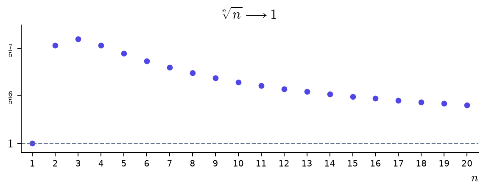
לא כל שורש מסדר \(n\) שואף ל \(1\). למשל, \(b_n=\sqrt[n]{2^n}=2\): האיברים הם \(2,2,2,\ldots\) והגבול הוא \(2\). כאן מתחת לשורש מופיע \(2^n\), ולכן לא מדובר באחת משתי משפחות השורשים שבטבלה.
דוגמה 2.3.8 — חזקה של האינדקס מול סדרה הנדסית.
נבדוק את \(a_n=\frac{n^2}{2^n}\):
| \(n\) | \(a_n\) |
|---|---|
| \(1\) | \(\frac{1}{2}\) |
| \(2\) | \(1\) |
| \(3\) | \(\frac{9}{8}\) |
| \(8\) | \(\frac{1}{4}\) |
| \(16\) | \(\frac{1}{256}\) |
האיברים גדלים בתחילה, אבל בהמשך המכנה גדל מהר יותר מהמונה. כאן \(p=2>0\) ו \(q=2>1\), ולכן לפי הגבולות הבסיסיים, \[\lim_{n\to\infty}\frac{n^2}{2^n}=0.\]
אם \(q>1\) אינו מתקיים: עבור \(q=1\) מתקבלת \(\frac{n^2}{1^n}=n^2\), שאיבריה \(1,4,9,16,\ldots\) גדלים ואינם מתקרבים לאפס.
אם \(p>0\) אינו מתקיים: למשל, עבור \(p=0\) ו \(q=2\) מתקבלת \(\frac{n^0}{2^n}=\left(\frac{1}{2}\right)^n\). כלל ההשוואה שבטבלה אינו חל, אבל הכלל לסדרה הנדסית כן חל, והגבול עדיין \(0\).
סימולציה 2.3.9 — התחלה עולה, ובהמשך התקרבות לאפס.
המטרה: לראות שהסדרה \(a_n=\frac{n^p}{q^n}\) יכולה לגדול בתחילה ובכל זאת לשאוף לאפס. התחילו ב \(p=2\), \(q=2\), והגדילו את מספר האיברים המוצגים. אחר כך בחרו \(q=1\) וראו מה משתנה כשהתנאי על הבסיס אינו מתקיים.
שאלה פתורה 2.3.10 — מזהים את הסדרה המוכרת.
התאימו כל סדרה לאחת הצורות שבטבלה וחשבו את גבולה.
(א) \(\left(-\frac{1}{2}\right)^n\)
המנה הקבועה בין איברים עוקבים היא \(q=\) \(-\frac{1}{2}\).
הערך המוחלט שלה הוא \(|q|=\) \(\frac{1}{2}\). האם מתקיים \(|q|<1\)? כן
לכן הגבול הוא \(0\).
(ב) \(\frac1{\sqrt n}\)
נכתוב \(\sqrt n=n^p\), כאשר \(p=\) \(\frac{1}{2}\).
האם \(p>0\)? כן
הגבול הוא \(0\).
(ג) \(\frac{n^3}{2^n}\)
המעריך הקבוע הוא \(p=\) \(3\).
הבסיס הקבוע הוא \(q=\) \(2\).
האם מתקיימים \(p>0\) ו \(q>1\)? כן
הגבול הוא \(0\).
(א) הערך המוחלט של המנה הוא \(\frac{1}{2}<1\). הסימן מתחלף, אך האיברים מתקרבים לאפס.
(ב) משתמשים בגבול של \(\frac1{n^p}\) עבור \(p=\frac{1}{2}\).
(ג) משתמשים בגבול של \(\frac{n^p}{q^n}\), עם \(p=3\) ו \(q=2>1\).
בדיקה עצמית.
מהכלל עבור \(q^n\) נובע שגם \((-1)^n\to0\).
כאן \(|q|=1\), ולכן התנאי \(|q|<1\) אינו מתקיים. כבר ראינו שסדרה זו אינה מתכנסת.
מה קורה ל \(\frac1{n^p}\) כאשר \(p=0\)?
כל האיברים שווים \(1\). לכן התנאי \(p>0\) נחוץ.
בדיקה עצמית — האם מותר להשתמש בכלל?
המנה \(q\) היא המספר הקבוע שבו כופלים כדי לעבור מאיבר לאיבר הבא. התנאי \(|q|<1\) שייך לכלל ההתכנסות לאפס; הוא אינו חלק מההגדרה של סדרה הנדסית.
| הסדרה | \(q\) | \(|q|\) | האם מתקיים \(|q|<1\)? |
|---|---|---|---|
| \((-\frac{1}{2})^n\) | \(-\frac{1}{2}\) | \(\frac{1}{2}\) | כן |
| \((-1)^n\) | \(-1\) | \(1\) | לא |
| \((-3)^n\) | \(-3\) | \(3\) | לא |
| \(1^n\) | \(1\) | \(1\) | לא |
רק בשורה הראשונה הכלל נותן גבול אפס. המספר \(-3\) קטן מ \(1\), אבל הערך המוחלט שלו גדול מ \(1\): בודקים את הערך המוחלט, ולא רק את הסימן.
אם התנאי של הכלל אינו מתקיים, האם אפשר להסיק שאין גבול?
לא. למשל, \(1^n\) היא סדרה קבועה וגבולה \(1\), אף שהכלל להתכנסות של \(q^n\) לאפס אינו חל. ״הכלל אינו חל״ אומר שצריך נימוק אחר; זו אינה מסקנה על התכנסות הסדרה.
פעולות על סדרות מתכנסות
חשבון הגבולות מאפשר להחליף את סדר הפעולות: במקום לבצע פעולה על איברי הסדרות ואז לקחת גבול, אפשר קודם לקחת את הגבולות ואז לבצע עליהם את אותה פעולה. השוויונות הבאים אומרים ששתי הדרכים נותנות אותה תוצאה, בתנאים המצוינים בכל כלל.
משפט 2.3.11 — חשבון גבולות.
נניח שלשתי הסדרות יש גבולות סופיים: \(\lim_{n\to\infty}a_n=A\) ו \(\lim_{n\to\infty}b_n=B\). אז \[\lim_{n\to\infty}(a_n+b_n)=\lim_{n\to\infty}a_n+\lim_{n\to\infty}b_n=A+B,\] \[\lim_{n\to\infty}(a_n-b_n)=\lim_{n\to\infty}a_n-\lim_{n\to\infty}b_n=A-B,\] \[\lim_{n\to\infty}(a_nb_n)=\left(\lim_{n\to\infty}a_n\right)\left(\lim_{n\to\infty}b_n\right)=AB.\] אם נוסף על כך \(B\ne0\), אז \[\lim_{n\to\infty}\frac{a_n}{b_n}=\frac{\lim_{n\to\infty}a_n}{\lim_{n\to\infty}b_n}=\frac AB.\] לכל קבוע ממשי \(c\), כפל בקבוע עובר גם הוא מחוץ לגבול: \[\lim_{n\to\infty}(ca_n)=c\lim_{n\to\infty}a_n=cA.\] אפשר לקרוא את השוויונות בשני הכיוונים: להוציא פעולה מחוץ לגבול או להכניס אותה לתוכו. התנאים נשארים אותם תנאים. הסדרות והמנות צריכות להיות מוגדרות, לפחות החל מאינדקס מסוים.
הסבר — מדוע אפשר לבצע פעולות על גבולות?
הרעיון הוא שאם שני איברים מספיק קרובים לשני מספרים, גם סכומם ומכפלתם קרובים לסכום ולמכפלה של אותם מספרים. בחילוק צריך להיזהר: כשהמכנה קרוב לאפס, אפילו שינוי קטן בו יכול לשנות מאוד את המנה. לכן כלל המנה דורש שגבול המכנה יהיה שונה מאפס.
טענה 2.3.12 — חזקות קבועות ושורשים.
אם \(a_n\to A\), אז לכל מספר טבעי חיובי וקבוע \(k\), \[\lim_{n\to\infty}a_n^k=\left(\lim_{n\to\infty}a_n\right)^k=A^k.\]
אם האיברים אי־שליליים, הכלל נכון לכל מעריך ממשי חיובי וקבוע \(p\): \[\lim_{n\to\infty}a_n^p=\left(\lim_{n\to\infty}a_n\right)^p=A^p.\] בפרט, לשורש מסדר טבעי קבוע \(k\ge2\), \[\lim_{n\to\infty}\sqrt[k]{a_n}=\sqrt[k]{\lim_{n\to\infty}a_n}=\sqrt[k]{A}.\] בסדר שורש זוגי נדרשים איברים אי־שליליים, לפחות החל מאינדקס מסוים. בסדר שורש אי־זוגי הכלל נכון גם לאיברים ולגבול שליליים.
אם \(A>0\), הכלל נכון גם למעריכים ממשיים שליליים; אז האיברים חיוביים לפחות החל מאינדקס מסוים.
הסבר — מדוע נדרש מעריך קבוע?
בחזקה שלמה חיובית וקבועה מבצעים מספר קבוע של פעולות כפל, ולכן אפשר להפעיל שוב ושוב את כלל המכפלה. בשורש מסדר קבוע, שינוי קטן במספר שמתחת לשורש יוצר שינוי קטן בשורש, כל עוד עובדים בתחום ההגדרה. את כלל השורש נקבל כאן ללא הוכחה. אם המעריך או סדר השורש משתנים עם האינדקס, זו אינה אותה פעולה קבועה, והכלל אינו חל.
דוגמה 2.3.13 — הוצאת קבוע מחוץ לגבול.
נתונה הסדרה \(a_n=\frac{2}{n}\), עבור \(n\ge1\). נשתמש בכפל בקבוע, ואחר כך בגבול המוכר של \(\frac{1}{n}\): \[\lim_{n\to\infty}\frac2n =2\lim_{n\to\infty}\frac1n =2\cdot0=0.\] הוצאת הקבוע אינה מחשבת עדיין את הגבול של \(\frac{1}{n}\); היא משאירה גבול פשוט יותר לחישוב.
שאלה פתורה 2.3.14 — מתרגלים את הפעולות בעוזר.
גבול מוכר. התחילו מהגבול של הסדרה הקבועה \(3\). בחרו כללי גבולות ← גבול מוכר, כתבו את התוצאה ובדקו את הצעד.
גבול הסדרה הקבועה הוא \(3\).
פתרון במילים
בסדרה הקבועה \(a_n=3\) כל האיברים שווים \(3\). לפי הגבול המוכר של סדרה קבועה, \[\lim_{n\to\infty}3=3.\]
הוצאת פעולה מחוץ לגבול. כעת עבדו עם \(3+\frac1n\). תחילה בחרו כללי גבולות ← הוצאת פעולה מחוץ לגבול. לאחר מכן בחרו בכל פעם גבול אחד בתוך השורה והשתמשו ב גבול מוכר. לבסוף בחרו חישוב מספרי ← חישוב התוצאה.
מוציאים את החיבור מחוץ לגבול.
בוחרים את הגבול של \(3\) בלבד.
בוחרים את הגבול של \(\frac{1}{n}\) בלבד.
מחשבים את הסכום.
פתרון במילים
בסדרה \(a_n=3+\frac{1}{n}\) שני המחוברים מתכנסים. לפי כלל החיבור נפריד את הגבול: \[\lim_{n\to\infty}\left(3+\frac{1}{n}\right) =\lim_{n\to\infty}3+\lim_{n\to\infty}\frac{1}{n}.\] גבול הסדרה הקבועה הוא \(3\), והגבול של \(\frac{1}{n}\) הוא \(0\). לכן גבול הסכום הוא \(3+0=3\).
שאלה פתורה 2.3.15 — אותו חישוב, בצעד מרוכז.
נחזור במכוון לאותה סדרה, \(a_n=3+\frac1n\), כדי להשוות בין שתי דרכי כתיבה בעוזר.
ב שאלה פתורה 2.3.14 הוצאנו את החיבור מחוץ לגבול וחישבנו כל גבול בנפרד. הפעולה כללי גבולות ← חשבון גבולות משלבת את כללי החשבון עם הגבולות המוכרים בצעד אחד: \[\lim_{n\to\infty}\left(3+\frac1n\right)=3+0=3.\]
בחרו את הפעולה הזאת וכתבו את התוצאה. גם הדרך המפורטת נשארת אפשרית. בשתי הדרכים חייבים להתקיים תנאי הכללים; למשל, בחילוק גבול המכנה צריך להיות שונה מאפס.
גבול הסדרה הקבועה הוא \(3\), גבול \(\frac{1}{n}\) הוא \(0\), וכלל החיבור נותן \(3\).
פתרון במילים
בסדרה \(a_n=3+\frac{1}{n}\) ידוע ש \(3\to3\) וש \(\frac{1}{n}\to0\). לפי כלל החיבור, \[\lim_{n\to\infty}\left(3+\frac{1}{n}\right)=3+0=3.\]
שאלה פתורה 2.3.16 — מחשבים בעזרת הגבולות המוכרים.
חשבו את הגבול של \(3+\frac2n\).
כותבים \(\frac2n=2\cdot\frac1n\) כדי לזהות את הגבול המוכר.
מוציאים את החיבור מחוץ לגבול לפי משפט 2.3.11.
גבול של סדרה קבועה הוא הקבוע עצמו.
מוציאים את הקבוע \(2\) מחוץ לגבול. הגבול של \(\frac{1}{n}\) נשאר לחישוב.
משתמשים בגבול המוכר \(\lim_{n\to\infty}\frac1n=0\).
מחשבים את התוצאה.
אפשר להוציא את החיבור, ואחריו את הכפל, מחוץ לגבול. בכל שלב בחרו את הגבול שעליו עובדים.
פתרון במילים
נכתוב את איבר הסדרה \(a_n=3+\frac{2}{n}\) בצורה \(3+2\cdot\frac{1}{n}\). כך אפשר להשתמש בגבול המוכר של \(\frac{1}{n}\).
נוציא את החיבור מחוץ לגבול ונחשב את גבול הקבוע: \[\lim_{n\to\infty}a_n =\lim_{n\to\infty}3+\lim_{n\to\infty}\left(2\cdot\frac{1}{n}\right) =3+\lim_{n\to\infty}\left(2\cdot\frac{1}{n}\right).\] נוציא את הקבוע \(2\) מחוץ לגבול. מכיוון ש \(\frac{1}{n}\to0\), נקבל \[\lim_{n\to\infty}a_n=3+2\lim_{n\to\infty}\frac{1}{n}=3+2\cdot0=3.\]
שאלה פתורה 2.3.17 — גבול מוכר וגבול שמחשבים ממנו.
(א) חשבו את גבול הסדרה \(\left(\frac23\right)^n\). בעוזר הפתרון בחרו ״גבול מוכר״.
זו הסדרה \(q^n\) עם \(q=\frac23\), ולכן משתמשים ישירות ב משפט 2.3.1.
פתרון במילים
הסדרה \(a_n=\left(\frac{2}{3}\right)^n\) היא מהצורה \(q^n\) עם \(q=\frac{2}{3}\). מתקיים \(|q|<1\), ולכן לפי הגבול המוכר של סדרה הנדסית, \[\lim_{n\to\infty}\left(\frac{2}{3}\right)^n=0.\]
(ב) חשבו את גבול הסדרה \(\frac5n\). נזהה את \(\frac1n\) בתוך המכפלה, ואז נשתמש בחשבון הגבולות.
כותבים את השבר כמכפלה בקבוע.
מוציאים את הקבוע \(5\) מחוץ לגבול.
משתמשים בגבול של \(\frac{1}{n}\).
מחשבים. אין צורך לזכור את הגבול הזה כעובדה נפרדת.
פתרון במילים
נכתוב \(a_n=\frac{5}{n}=5\cdot\frac{1}{n}\). נוציא את הקבוע \(5\) מחוץ לגבול ונשתמש ב \(\frac{1}{n}\to0\): \[\lim_{n\to\infty}\frac{5}{n} =5\lim_{n\to\infty}\frac{1}{n} =5\cdot0=0.\]
דוגמה 2.3.18 — גבול של שורש מסדר קבוע.
נתונה הסדרה \(a_n=\sqrt{4+\frac{1}{n}}\), עבור \(n\ge1\). הביטוי שמתחת לשורש חיובי, ולפי חשבון הגבולות גבולו \(4\). סדר השורש קבוע, ולכן כלל השורש נותן \[\lim_{n\to\infty}a_n=\sqrt{\lim_{n\to\infty}\left(4+\frac{1}{n}\right)}=\sqrt{4}=2.\]
שאלה פתורה 2.3.19 — מוציאים פעולות מחוץ לגבול.
נחשב את גבול הסדרה \(a_n=\sqrt{9+\frac{4}{n}}\). הביטוי מתחת לשורש חיובי. תחילה נוציא בכל צעד פעולה אחת מחוץ לגבול. אחר כך נחשב את הגבולות שנותרו ואת התוצאה: \[\begin{aligned} \lim_{n\to\infty}a_n &=\lim_{n\to\infty}\sqrt{9+\frac4n}\\ &=\sqrt{\lim_{n\to\infty}\left(9+\frac4n\right)}\\ &=\sqrt{\lim_{n\to\infty}9+\lim_{n\to\infty}\frac4n}\\ &=\sqrt{\lim_{n\to\infty}9+4\lim_{n\to\infty}\frac1n}\\ &=\sqrt{9+4\cdot0}\\ &=\sqrt9=3. \end{aligned}\] תחילה משתמשים בכלל השורש, אחריו בכלל החיבור, ולבסוף בכפל בקבוע. הגבולות שנותרו מוכרים: גבול הסדרה הקבועה \(9\) הוא \(9\), וגבול \(\frac{1}{n}\) הוא \(0\).
בעוזר בחרו כללי גבולות ← הוצאת פעולה מחוץ לגבול. כשיש כמה גבולות בשורה, בחרו את הגבול שעליו רוצים לפעול.
מוציאים את השורש מחוץ לגבול לפי טענה 2.3.12.
בוחרים את הגבול שבתוך השורש ומוציאים את החיבור, לפי משפט 2.3.11.
בוחרים את הגבול של \(\frac{4}{n}\) ומוציאים את הקבוע \(4\).
בוחרים את הגבול של הסדרה הקבועה \(9\) ומשתמשים ב ״גבול מוכר״.
בוחרים את הגבול של \(\frac{1}{n}\) ומשתמשים ב ״גבול מוכר״.
בוחרים את הביטוי שבתוך השורש ומשתמשים ב ״חישוב התוצאה״.
מחשבים את השורש.
פתרון במילים
בסדרה \(a_n=\sqrt{9+\frac{4}{n}}\) הביטוי מתחת לשורש חיובי. נשתמש בכלל השורש, אחריו בכלל החיבור, ואחר כך נוציא את הקבוע \(4\): \[\begin{aligned} \lim_{n\to\infty}a_n &=\sqrt{\lim_{n\to\infty}\left(9+\frac{4}{n}\right)}\\ &=\sqrt{\lim_{n\to\infty}9+\lim_{n\to\infty}\frac{4}{n}}\\ &=\sqrt{\lim_{n\to\infty}9+4\lim_{n\to\infty}\frac{1}{n}}. \end{aligned}\] גבול הסדרה הקבועה הוא \(9\), והגבול של \(\frac{1}{n}\) הוא \(0\). נציב ונחשב: \[\lim_{n\to\infty}a_n=\sqrt{9+4\cdot0}=\sqrt{9}=3.\]
טענה 2.3.20 — אי־שוויונות במעבר לגבול.
אם \(a_n\le b_n\) החל מאינדקס מסוים, ושתי הסדרות מתכנסות אל \(A\) ואל \(B\) בהתאמה, אז \(A\le B\).
הסבר — מדוע סדר הגבולות נשמר?
אם היה מתקיים \(A>B\), אפשר היה לבחור סביבם שני קטעים נפרדים, כך שכל מספר בקטע של \(A\) גדול מכל מספר בקטע של \(B\). מאינדקס מתאים איברי \(a_n\) היו בקטע של \(A\) ואיברי \(b_n\) בקטע של \(B\), בסתירה ל \(a_n\le b_n\). לכן הטענה על מעבר אי־שוויונות לגבול נותנת \(A\le B\).
דוגמה 2.3.21 — אי־שוויון ממש יכול להפוך לשוויון בגבול.
נתונות \(a_n=\frac{1}{n}\) ו \(b_n=0\), עבור \(n\ge1\). בכל אינדקס מתקיים \(a_n>b_n\), אבל לפי הגבולות הבסיסיים, \[\lim_{n\to\infty}a_n=0=\lim_{n\to\infty}b_n.\] לכן אין להסיק אי־שוויון ממש בין הגבולות מאי־שוויון ממש בין האיברים.
שימו לב — כשגבול המכנה הוא אפס.
אם גם המונה וגם המכנה שואפים לאפס, כלל המנה אינו קובע את הגבול. הסימון \(\frac{0}{0}\) נקרא צורה לא מוגדרת: צריך לפשט את הביטוי או להשתמש בכלל אחר; זו אינה תשובה לחישוב.
דוגמה 2.3.22 — אותם גבולות במונה ובמכנה, מנות שונות.
נתונות הסדרות \[a_n=\frac{\frac{1}{n}}{\frac{1}{n}},\qquad b_n=\frac{\frac{2}{n}}{\frac{1}{n}},\qquad n\ge1.\] בשתי המנות, המונה והמכנה שואפים לאפס. בכל זאת, המכנה אינו אפס בשום אינדקס, ואפשר לפשט: \[a_n=1,\qquad b_n=2.\] לכן גבולות הסדרות הם \(1\) ו \(2\) בהתאמה. גבולות המונה והמכנה לבדם אינם קובעים את גבול המנה במקרה הזה.
תרגילים
תרגיל 2.3.23 — גבולות מוכרים.
בכל סעיף עבדו לפי הסדר: זיהוי המשפחה, בדיקת הפרמטרים והתנאים, ואז חישוב הגבול.
(א) \(a_n=\left(\frac{3}{4}\right)^n\)
1. זיהוי המשפחה. סדרה הנדסית.
2. בדיקת הפרמטרים והתנאים. \(q=\) \(\frac{3}{4}\).
האם \(|q|<1\)? כן
3. חישוב הגבול. \(\displaystyle\lim_{n\to\infty}a_n=\) \(0\).
(ב) \(a_n=\sqrt[n]{5}\)
1. זיהוי המשפחה. שורש של מספר קבוע.
2. בדיקת הפרמטרים והתנאים. המספר שמתחת לשורש הוא \(5\).
האם הוא קבוע וחיובי? כן
3. חישוב הגבול. \(\displaystyle\lim_{n\to\infty}a_n=\) \(1\).
(ג) \(a_n=\frac{n^2}{2^n}\)
1. זיהוי המשפחה. חזקה חלקי סדרה הנדסית.
2. בדיקת הפרמטרים והתנאים. \(p=\) \(2\), \(q=\) \(2\).
האם \(p>0\) ו \(q>1\)? כן
3. חישוב הגבול. \(\displaystyle\lim_{n\to\infty}a_n=\) \(0\).
(ד) \(a_n=\sqrt[n]{n}\)
1. זיהוי המשפחה. שורש של האינדקס.
2. בדיקת הצורה והתנאים. סדר השורש הוא \(n\), והביטוי שמתחת לשורש הוא \(n\). כאן \(n\ge1\), ושניהם גדלים עם האינדקס.
3. חישוב הגבול. \(\displaystyle\lim_{n\to\infty}a_n=\) \(1\).
(א) זו סדרה הנדסית עם \(q=\frac{3}{4}\). מתקיים \(|q|<1\), ולכן הגבול הוא \(0\).
(ב) זהו שורש מסדר \(n\) של המספר הקבוע \(5>0\), ולכן הגבול הוא \(1\).
(ג) זו מנה מהצורה \(\frac{n^p}{q^n}\) עם \(p=2>0\) ו \(q=2>1\), ולכן הגבול הוא \(0\).
(ד) גם סדר השורש וגם הביטוי שבתוכו הם \(n\). זו בדיוק הסדרה \(\sqrt[n]{n}\), שגבולה \(1\).
כל ארבעת הגבולות מופיעים ב משפט 2.3.1.
תרגיל 2.3.24 — משלבים כללי חישוב.
חשבו את הגבול. אפשר להיעזר בעוזר הפתרון ולכתוב את שלבי החישוב.
\(\lim_{n\to\infty}\frac{2+\frac{1}{n}}{5-\frac{1}{n}}\)
הסדרה \(\frac1n\) שואפת לאפס, וגבול המכנה הוא \(5\ne0\).
מחשבים את המנה.
תרגיל 2.3.25 — אותם כללים, חישוב עצמאי.
חשבו את \(\displaystyle\lim_{n\to\infty}\left(4+\frac5n\right)\). בחרו בעצמכם את הפעולות ואת החלקים שעליהם תפעלו.
מזהים את המכפלה בקבוע.
מוציאים חיבור מחוץ לגבול.
משתמשים בגבול של הסדרה הקבועה.
מוציאים את הקבוע \(5\) מחוץ לגבול.
מחשבים את הגבול של \(\frac{1}{n}\).
מחשבים את התוצאה.
תרגיל 2.3.26 — בונים חישוב בעזרת הכללים.
חשבו את הגבולות. בחרו בעצמכם את שלבי החישוב ואת הכללים המתאימים.
(א) \(\displaystyle\lim_{n\to\infty}\left(5-\frac3n+\frac2{n^2}\right)\)
הסדרות \(\frac3n\) ו \(\frac2{n^2}\) שואפות לאפס. משתמשים בחיבור ובחיסור לפי משפט 2.3.11.
מחשבים את התוצאה.
(ב) \(\displaystyle\lim_{n\to\infty}\frac{3-\frac{2}{n}}{4+\frac{1}{n^2}}\)
גבול המכנה הוא \(4\), ולכן מותר להשתמש בכלל המנה מתוך משפט 2.3.11.
מחשבים את המנה.
(ג) \(\displaystyle\lim_{n\to\infty}\sqrt{9+\frac4n}\)
הביטוי מתחת לשורש חיובי ושואף אל \(9\). משתמשים ב טענה 2.3.12.
מחשבים את השורש.
(ד) \(\displaystyle\lim_{n\to\infty}\left(\left(\frac25\right)^n+\frac{n^2}{3^n}\right)\)
שתי הסדרות מופיעות ב משפט 2.3.1. לאחר זיהוי גבולותיהן משתמשים בכלל החיבור.
מחשבים את הסכום.
תרגיל 2.3.27 — האם מותר להשתמש בכלל?
בכל סעיף בחרו כן או לא.
(א) המונה שואף ל \(2\) והמכנה שואף ל \(3\). האם כלל המנה נותן גבול \(\frac23\)?
גבול המכנה שונה מאפס, ולכן כלל המנה חל.
(ב) המונה והמכנה שואפים לאפס. האם מכאן נובע שגם המנה שואפת לאפס?
למשל, המנה \(\frac{\frac{1}{n}}{\frac{1}{n}}\) שווה תמיד \(1\).
2.4 חסימות
מלבד התכנסות, לסדרות יש תכונות חשובות נוספות שנחקור. נתחיל בחסימות.
הגדרה 2.4.1 — סדרה חסומה.
סדרה \((a_n)_{n=1}^{\infty}\) חסומה מלעיל אם קיים מספר קבוע \(M\) כך שלכל \(n\ge1\) מתקיים \[a_n\le M.\] המספר \(M\) נקרא חסם מלעיל של הסדרה.
סדרה \((a_n)_{n=1}^{\infty}\) חסומה מלרע אם קיים מספר קבוע \(m\) כך שלכל \(n\ge1\) מתקיים \[m\le a_n.\] המספר \(m\) נקרא חסם מלרע של הסדרה.
סדרה היא חסומה אם היא חסומה גם מלעיל וגם מלרע. כלומר, כל איבריה נמצאים בין שני מספרים קבועים: \[m\le a_n\le M.\]
תובנה חשובה — מחפשים חסם גדול מספיק או קטן מספיק.
כדי להוכיח חסימות, מחפשים מספר קבוע גדול מספיק שכל האיברים יהיו קטנים ממנו או שווים לו, ומספר קבוע קטן מספיק שכל האיברים יהיו גדולים ממנו או שווים לו.
אין צורך למצוא את החסמים הטובים ביותר. עדיף חסם נוח שקל להצדיק, גם אם הוא רחוק מאוד מהאיברים. החסמים חייבים להתאים לכל האינדקסים, ולא להשתנות עם \(n\).
דוגמה 2.4.2 — חסמים נוחים מספיקים להוכחת חסימות.
נתונה הסדרה \(a_n=\frac{1}{n}\), עבור \(n\ge1\). מכיוון ש \(n\ge1\), \[0<\frac{1}{n}\le1.\] לכן \(0\) הוא חסם מלרע ו \(1\) הוא חסם מלעיל, והסדרה חסומה.
גם הבחירה \(m=-5\), \(M=100\) מתאימה: \[-5\le0<\frac{1}{n}\le1\le100.\] החסמים \(-5\) ו \(100\) מספיקים באותה מידה להוכחת חסימות. אין צורך לצמצם את התחום שמצאנו.
בסדרה \(b_n=2+\frac1n\), השלימו את האי־שוויון שמתקבל מהוספת \(2\) לכל האגפים:
\(2\) \(\le2+\frac1n\le\) \(3\).
כתבו חסם מלעיל לבחירתכם: \(4\).
מהאי־שוויון \(0\le\frac1n\le1\) מקבלים \(2\le2+\frac1n\le3\). לכן \(2\) הוא חסם מלרע, ו \(3\) הוא חסם מלעיל. כל מספר גדול מ \(3\) מתאים גם הוא כחסם מלעיל.
תובנה חשובה — לצורך חסימה מספיק אי־שוויון חלש.
מחפשים \(a_n\le M\) או \(a_n\ge m\). מותר לאיבר להיות שווה לחסם; אין צורך להוכיח אי־שוויון ממש, שדורש יותר.
תובנה חשובה — אפיון שקול לחסימות באמצעות ערך מוחלט.
סדרה \((a_n)_{n=1}^{\infty}\) חסומה אם ורק אם קיים מספר קבוע \(M\ge0\) כך שלכל \(n\ge1\) מתקיים \[|a_n|\le M.\]
כל מספר קבוע \(K\ge M\) מתאים באותה מידה: אין צורך למצוא את החסם הקטן ביותר.
הסבר — מדוע האפיון שקול לחסימות?
אם \(|a_n|\le M\) לכל \(n\ge1\), אז לפי פירוש הערך המוחלט כמרחק, \[-M\le a_n\le M.\] לכן הסדרה חסומה מלרע על ידי \(-M\) ומלעיל על ידי \(M\).
בכיוון ההפוך, אם \(m\le a_n\le B\) לכל \(n\ge1\), נבחר את \(M\) להיות הגדול מבין \(|m|\) ו \(|B|\). אז \[-M\le m\le a_n\le B\le M,\] ולכן \(|a_n|\le M\) לכל \(n\ge1\).
דוגמה 2.4.3 — שני חסמים אפשריים לערך המוחלט.
נתונה הסדרה \(a_n=(-1)^n\), עבור \(n\ge1\). לכל \(n\) מתקיים \(|a_n|=1\), ולכן אפשר לבחור \(M=1\) באפיון החסימות באמצעות ערך מוחלט. גם \(K=10\) מתאים, כי \(|a_n|=1\le10\). אין צורך לבחור את החסם הקטן ביותר. הנקודות שעל קווי החסימה עומדות בתנאי, כי האי־שוויון חלש.
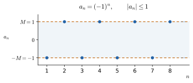
בדיקה עצמית — האם אי־שוויון מעביר חסימות לסדרה אחרת?
נתונות שתי סדרות \((a_n)_{n=1}^{\infty}\) ו \((b_n)_{n=1}^{\infty}\), והסדרה \((a_n)_{n=1}^{\infty}\) חסומה.
(א) נניח ש \(b_n<a_n\) לכל \(n\ge1\). האם בהכרח גם \((b_n)_{n=1}^{\infty}\) חסומה?
לא. למשל, \(a_n=1\) ו \(b_n=-n\) לכל \(n\ge1\). הסדרה \((a_n)\) חסומה, ומתקיים \(-n<1\), אבל \((b_n)\) אינה חסומה מלרע. האי־שוויון נותן לסדרה \((b_n)\) חסם מלעיל בלבד.
(ב) כעת נניח במקום זאת ש \(|b_n|<|a_n|\) לכל \(n\ge1\). האם בהכרח גם \((b_n)_{n=1}^{\infty}\) חסומה?
כן. לפי האפיון של חסימות באמצעות ערך מוחלט, קיים \(M\ge0\) כך שלכל \(n\ge1\) מתקיים \(|a_n|\le M\). לכן \[|b_n|<|a_n|\le M.\] אותו \(M\) חוסם את הערכים המוחלטים של איברי \((b_n)\), ולכן גם היא חסומה.
בדיקה עצמית — מה קורה כשהחסמים מתלכדים?
(א) בסדרה \((a_n)_{n=1}^{\infty}\) מתקיים \(|a_n|\le M\) לכל \(n\ge1\), ונבחר \(M=0\). מהו כל איבר בסדרה?
\(a_n=\) \(0\)
ערך מוחלט הוא אי־שלילי, ולכן \(0\le|a_n|\le0\) מחייב \(a_n=0\). זו הסדרה הקבועה \(0,0,0,\ldots\).
(ב) בסדרה \((a_n)_{n=1}^{\infty}\) החסם מלרע והחסם מלעיל שווים לאותו מספר ממשי \(M\), כלומר \(M\le a_n\le M\) לכל \(n\ge1\). מהו כל איבר בסדרה?
\(a_n=\) \(M\)
מספר שנמצא בין \(M\) לבין \(M\) חייב להיות \(M\) עצמו. לכן זו הסדרה הקבועה \(M,M,M,\ldots\).
לעומת זאת, הסדרה \(a_n=n\) חסומה מלרע על ידי \(1\), אבל אינה חסומה מלעיל: כל מספר שנבחר כחסם ייעקף כשנבחר אינדקס גדול ממנו. לכן היא אינה סדרה חסומה.
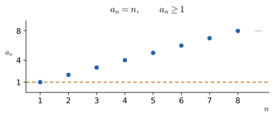
סימולציה 2.4.4 — יוצאים מכל חסם מוצע.
מטרת הסימולציה להראות מדוע שום \(M\ge0\) אינו מקיים \(|a_n|\le M\) לכל איברי הסדרה. בחרו \(a_n=n\) או \(a_n=-n\) ואת החסם המוצע \(M\). גררו את \(N\) כדי להציג את \(N\) האיברים הראשונים: כשמגיעים לאינדקס \(M+1\), מופיעה נקודה אדומה מחוץ לרצועה שבין \(-M\) לבין \(M\). הגדילו את \(M\) ונסו שוב.
לצורך הוכחת חסימות מספיק למצוא חסמים כלשהם. לשני החסמים ההדוקים ביותר יש שמות שנשתמש בהם בהמשך לתיאור גבול של סדרה מונוטונית.
הגדרה 2.4.5 — חסם עליון וחסם תחתון.
לסדרה \((a_n)_{n=1}^{\infty}\):
- חסם עליון — סופרמום (supremum) הוא החסם מלעיל הקטן ביותר, אם קיים. מסמנים \(\sup_{n\ge1}a_n\).
- חסם תחתון — אינפימום (infimum) הוא החסם מלרע הגדול ביותר, אם קיים. מסמנים \(\inf_{n\ge1}a_n\).
הערה 2.4.6 — קיום החסם העליון והתחתון.
תכונת ״אין חורים״ של המספרים הממשיים מבטיחה שלסדרה חסומה מלעיל קיים חסם עליון, ולסדרה חסומה מלרע קיים חסם תחתון. אין צורך למצוא אותם כדי להוכיח חסימות. חסם מלעיל יכול להיות גדול בהרבה מהסופרמום, וחסם מלרע קטן בהרבה מהאינפימום.
דוגמה 2.4.7 — החסם העליון והתחתון של הסדרה \(\frac{1}{n}\).
בסדרה \(a_n=\frac{1}{n}\), עבור \(n\ge1\), החסם העליון הוא \(1\): כל האיברים קטנים ממנו או שווים לו, והאיבר הראשון שווה לו. החסם התחתון הוא \(0\): כל האיברים חיוביים, ולכל \(c>0\) בחירת \(n>\frac{1}{c}\) נותנת \(a_n<c\). לכן \(\sup_{n\ge1}a_n=1\) ו \(\inf_{n\ge1}a_n=0\). החסם התחתון כאן אינו איבר בסדרה.
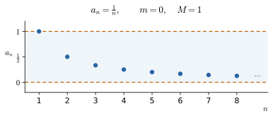
הערה 2.4.8 — גם קבוצות יכולות להיות חסומות.
אפשר להגדיר חסימות גם לקבוצה \(A\subseteq\mathbb{R}\). משתמשים באותן הגדרות, עם \(x\in A\) במקום איברי הסדרה:
- חסם מלעיל הוא מספר \(M\) שעבורו \(x\le M\) לכל \(x\in A\).
- חסם מלרע הוא מספר \(m\) שעבורו \(m\le x\) לכל \(x\in A\).
הקבוצה חסומה אם קיימים לה חסמים משני הצדדים. החסם העליון, \(\sup A\), הוא החסם מלעיל הקטן ביותר; החסם התחתון, \(\inf A\), הוא החסם מלרע הגדול ביותר. לקבוצה לא ריקה הם קיימים כאשר היא חסומה מהצד המתאים.
דוגמה 2.4.9 — חסם עליון ותחתון של קטע פתוח.
נתונה הקבוצה \(A=(0,1)\). לכל \(x\in A\) מתקיים \(0<x<1\), ולכן \(0\) חסם מלרע ו \(1\) חסם מלעיל. אי אפשר להקטין את החסם מלעיל מתחת ל \(1\), כי בקטע יש מספרים קרובים ל \(1\) כרצוננו. באופן דומה, אי אפשר להגדיל את החסם מלרע מעל \(0\). לכן \(\inf A=0\) ו \(\sup A=1\), אף ששני המספרים אינם שייכים לקבוצה.
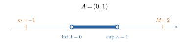
בדיקה עצמית — מה דורש חסם?
כל איבר בסדרה קטן מ \(5\). מכאן שהסדרה חסומה גם מלעיל וגם מלרע.
זה נותן חסם מלעיל בלבד. למשל, כל איברי הסדרה \(-n\) קטנים מ \(5\), אבל אין לה חסם מלרע.
אם \(5\) הוא חסם מלעיל, גם \(20\) הוא חסם מלעיל.
כל איבר קטן מ \(5\) או שווה לו, ולכן גם קטן מ \(20\).
משפט 2.4.10 — התכנסות גוררת חסימות.
כל סדרה מתכנסת היא חסומה.
הסבר — מדוע סדרה מתכנסת חסומה?
נניח שהסדרה \((a_n)_{n=1}^{\infty}\) מתכנסת למספר \(L\). נרצה למצוא שני מספרים קבועים שביניהם נמצאים כל איבריה.
תחילה חוסמים את הזנב. לפי הגדרת הגבול, עבור \(\varepsilon=1\) קיים אינדקס \(N\) כך שלכל \(n\ge N\) מתקיים \[|a_n-L|<1,\qquad\text{כלומר}\qquad L-1<a_n<L+1.\] מצאנו חסמים קבועים לכל האיברים מאינדקס \(N\) והלאה.
כעת כוללים גם את ההתחלה. לפני \(N\) יש רק מספר סופי של איברים. לכן אפשר להרחיב את הקטע \([L-1,L+1]\), אם צריך, עד שיכלול גם אותם. נסמן את קצות הקטע שהתקבל ב \(m\) ו \(M\). כעת \[m\le a_n\le M\qquad\text{לכל }n\ge1,\] ולכן הסדרה חסומה. אין צורך שהחסמים שבחרנו יהיו ההדוקים ביותר.
דוגמה 2.4.11 — חוסמים גם את האיברים הראשונים.
נתונה הסדרה \(a_1=-3\), \(a_2=5\) ו \(a_n=\frac{1}{n}\) לכל \(n\ge3\). היא מתכנסת לאפס לפי הגבול של \(\frac{1}{n}\) והטענה על שינוי מספר סופי של איברים. בזנב מתקיים \(0<a_n\le\frac{1}{3}\). כדי לחסום את כל הסדרה, כוללים גם את שני האיברים הראשונים: \[-3\le a_n\le5\qquad(n\ge1).\]
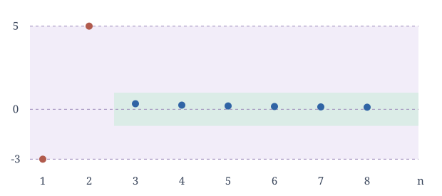
דוגמה 2.4.12 — חוסר חסימות שולל התכנסות.
ממשפט משפט 2.4.10 נובעת דרך קצרה לשלול התכנסות: אם סדרה אינה חסומה, היא אינה מתכנסת למספר ממשי.
(א) הסדרה \(a_n=n\) אינה חסומה מלעיל. לכל חסם מוצע \(M\), אפשר לבחור אינדקס טבעי \(n>M\), ואז \(a_n>M\). לכן הסדרה אינה מתכנסת.
(ב) בסדרה \(b_n=(-1)^n n\) האיברים הם \[-1,2,-3,4,-5,6,\ldots\] הסימן מתחלף, אבל הערכים המוחלטים הם \(|b_n|=n\). הם עולים מעבר לכל חסם, ולכן גם הסדרה הזאת אינה חסומה ואינה מתכנסת.
מה אפשר להסיק על \(c_n=-n\), שאינה חסומה מלרע?
חוסר חסימות מצד אחד כבר מספיק: סדרה מתכנסת חייבת להיות חסומה משני הצדדים.
חסימות בעזרת אי־שוויונות מוכרים
נכיר כמה אי־שוויונות מוכרים ושימושיים להוכחת חסימות. בדומה לחישוב גבולות באמצעות פעולות על גבולות מוכרים, נשתמש כאן בחסמים מוכרים ובכללי האי־השוויונים כדי למצוא חסמים לסדרות.
סינוס וקוסינוס: מהחסימה המוכרת לסדרה
כלל 2.4.13 — חסמי הסינוס והקוסינוס — תזכורת.
לכל \(t\in\mathbb{R}\):
| הפונקציה | חסימה משני הצדדים | כתיבה בערך מוחלט |
|---|---|---|
| \(\sin(t)\) | \(-1\le\sin(t)\le1\) | \(\lvert\sin(t)\rvert\le1\) |
| \(\cos(t)\) | \(-1\le\cos(t)\le1\) | \(\lvert\cos(t)\rvert\le1\) |
אלה החסימות שהתקבלו ממעגל היחידה בתכונות הסינוס והקוסינוס, סעיף (ב).
דוגמה 2.4.14 — חסימת הסדרה \(2+\cos(n)\).
נחסום את הסדרה \(a_n=2+\cos(n)\), עבור \(n\ge1\).
לפי חסמי הקוסינוס, \[-1\le\cos(n)\le1.\] נוסיף \(2\) לכל שלושת האגפים, בהתאם לכללי האי־שוויונים: \[1\le2+\cos(n)\le3.\] מצאנו שני מספרים קבועים: \(1\) הוא חסם מלרע ו \(3\) הוא חסם מלעיל. לכן הסדרה חסומה.
אפשר גם להשתמש באי־שוויון המשולש ובחסם הקוסינוס: \[|a_n|=|2+\cos(n)|\le2+|\cos(n)|\le3.\] לפי האפיון באמצעות ערך מוחלט, גם זו דרך להראות שהסדרה חסומה.
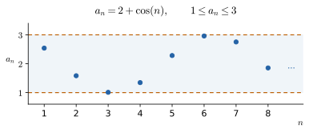
שיטת פתרון 2.4.15 — מוצאים חסימה מתוך אי־שוויון מוכר.
המטרה היא למצוא חסם קבוע גדול מספיק וחסם קבוע קטן מספיק, שקל להצדיק. אין צורך בחסמים ההדוקים ביותר.
- בוחרים אי־שוויון שמתאים לביטוי שבסדרה.
- בודקים את תנאיו ומציבים בו את הביטוי המתאים.
- משתמשים בכללי האי־שוויונים עד שמקבלים \(m\le a_n\le M\), כאשר \(m,M\) קבועים ואינם תלויים ב \(n\). אפשר גם להגיע ישירות לחסימה \(|a_n|\le M\) עם \(M\ge0\).
הסבר — איך פועלים על שלושת האגפים?
| הפעולה בכל האגפים | מה קורה לכיווני האי־שוויון? |
|---|---|
| חיבור או חיסור של אותו ביטוי | נשמרים |
| כפל או חילוק בביטוי חיובי | נשמרים |
| כפל או חילוק בביטוי שלילי | מתהפכים |
אסור לחלק באפס. מותר גם להרחיב חסימה: מקטינים את החסם מלרע או מגדילים את החסם מלעיל. זו מסקנה מהחסימה הקודמת, ולא טענה שקולה לה.
דוגמה 2.4.16 — חילוק חסמי הקוסינוס בביטוי חיובי.
נתונה \(a_n=\frac{\cos(n)}{n+1}\), עבור \(n\ge1\). לפי חסמי הקוסינוס, \(-1\le\cos(n)\le1\). המכנה \(n+1\) חיובי, ולכן לפי כללי האי־שוויונים אפשר לחלק בלי להפוך את הכיוונים: \[-\frac{1}{n+1}\le a_n\le\frac{1}{n+1}.\] מכיוון ש \(n+1\ge2\), נקבל גם את החסמים הקבועים \(-\frac{1}{2}\le a_n\le\frac{1}{2}\).
דוגמה 2.4.17 — הרחבת חסימה של הקוסינוס.
נתונה הסדרה \(b_n=\cos(n)\), עבור \(n\ge1\). מחסמי הקוסינוס נקבל \[-2\le-1\le b_n\le1\le2.\] לכן גם \(-2\le b_n\le2\) היא חסימה נכונה. היא פחות מדויקת, אך עדיין מוכיחה חסימות.
שאלה פתורה 2.4.18 — מתרגלים בניית חסימות.
הגיעו בכל סעיף לחסימה המבוקשת בעזרת עוזר האי־שוויונות. בחרו פעולה, כתבו את התוצאה ובדקו את הצעד. אפשר להיעזר בהצגת התוצאה הצפויה.
(א) התחילו מ \(-1\le\cos(n)\le1\) והראו כי \(3\le4+\cos(n)\le5\).
מחברים \(4\) לכל שלושת האגפים.
פתרון במילים
כדי לחסום את \(4+\cos(n)\), נתחיל מחסם הקוסינוס, \(-1\le\cos(n)\le1\). נוסיף \(4\) לכל שלושת האגפים: \[3\le4+\cos(n)\le5.\]
(ב) התחילו מ \(-1\le\sin(n)\le1\) וחסמו את \(\frac{\sin(n)}{n+1}\).
מחלקים את כל האגפים ב \(n+1\). המכנה חיובי, ולכן הכיוונים נשמרים.
פתרון במילים
כדי לחסום את \(\frac{\sin(n)}{n+1}\), נתחיל מחסם הסינוס, \(-1\le\sin(n)\le1\). מכיוון ש \(n\ge1\), המכנה \(n+1\) חיובי. נחלק בו את שלושת האגפים, בלי לשנות את הכיוונים: \[-\frac{1}{n+1}\le\frac{\sin(n)}{n+1}\le\frac{1}{n+1}.\]
(ג) התחילו מ \(-1\le\cos(n)\le1\) והראו כי \(2\le5-3\cos(n)\le8\).
כופלים ב \(-3\) והופכים את שני הכיוונים.
מחברים \(5\) לכל האגפים. זהו אותו אי־שוויון כמו \(2\le5-3\cos(n)\le8\), רק בסדר כתיבה הפוך.
פתרון במילים
כדי לחסום את \(5-3\cos(n)\), נתחיל מחסם הקוסינוס, \(-1\le\cos(n)\le1\). נכפול ב \(-3\) ונהפוך את שני הכיוונים: \[3\ge-3\cos(n)\ge-3.\] נוסיף \(5\) לכל האגפים: \[8\ge5-3\cos(n)\ge2.\] בכתיבה מהחסם מלרע לחסם מלעיל, זו החסימה \(2\le5-3\cos(n)\le8\).
(ד) הרחיבו את החסימה \(-1\le\sin(n)\le1\) לחסימה \(-2\le\sin(n)\le2\).
בוחרים ״הקטנת החסם מלרע״ ומחליפים את \(-1\) ב \(-2\).
בוחרים ״הגדלת החסם מלעיל״ ומחליפים את \(1\) ב \(2\).
פתרון במילים
נתונה החסימה \(-1\le\sin(n)\le1\). מכיוון ש \(-2\le-1\), אפשר להקטין את החסם מלרע: \[-2\le\sin(n)\le1.\] מכיוון ש \(1\le2\), אפשר גם להגדיל את החסם מלעיל: \[-2\le\sin(n)\le2.\] החסימה החדשה נובעת מהחסימה המקורית; היא רחבה יותר, ולכן אינה שקולה לה.
חסימת הסינוס בעזרת הקלט
משפט 2.4.19 — הסינוס אינו גדול מהקלט בערך מוחלט.
לכל \(x\in\mathbb{R}\), כאשר הזווית נמדדת ברדיאנים, \[|\sin(x)|\le|x|.\] לכל \(x>0\) מתקיים גם \(\sin(x)<x\).
נשתמש באי־השוויון ללא הוכחה. הוא מועיל במיוחד כשהקלט קטן בערך מוחלט: הוא נותן חסימה קטנה יותר מהחסם \(1\).
דוגמה 2.4.20 — חסימת הסדרה \(n\sin\left(\frac{1}{n}\right)\).
נחסום את הסדרה \(a_n=n\sin\left(\frac{1}{n}\right)\), עבור \(n\ge1\).
נציב \(x=\frac{1}{n}\) בחסימת הסינוס בעזרת הקלט: \[\left|\sin\left(\frac{1}{n}\right)\right|\le\frac{1}{n}.\] נכפול ב \(n>0\). לפי תכונת הערך המוחלט של מכפלה, \[|a_n|=n\left|\sin\left(\frac{1}{n}\right)\right|\le1.\] זהו חסם קבוע, ולכן הסדרה חסומה. שימוש בחסם \(|\sin(x)|\le1\) בלבד היה נותן כאן \(|a_n|\le n\), שאינו חסם קבוע.
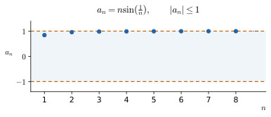
משפט 2.4.21 — עוד שתי חסימות טריגונומטריות.
הזוויות נמדדות ברדיאנים.
| התנאי | האי־שוויון |
|---|---|
| \(0<\lvert x\rvert<\frac{\pi}{2}\) | \(\cos(x)<\frac{\sin(x)}{x}<1\) |
| \(x\in\mathbb{R}\) | \(0\le1-\cos(x)\le\frac{x^2}{2}\) |
נקבל גם את החסימות האלה ללא הוכחה. בודקים את התנאי לפני שמציבים: בשורה הראשונה \(x=0\) אסור, ויש גם הגבלה על גודל הקלט.
דוגמה 2.4.22 — שתי חסימות לסינוס חלקי הקלט.
נתונה הסדרה \(a_n=\frac{\sin\left(\frac{1}{n}\right)}{\frac{1}{n}}\), עבור \(n\ge1\). הקלט \(x=\frac{1}{n}\) מקיים \(0<x\le1<\frac{\pi}{2}\), ולכן אפשר להציבו בחסימה הטריגונומטרית: \[\cos\left(\frac{1}{n}\right)<a_n<1.\] חסם הקוסינוס נותן גם \(-1\le\cos\left(\frac{1}{n}\right)\), ולכן \(-1<a_n<1\). מצאנו שני חסמים קבועים.
דוגמה 2.4.23 — חסימת הסדרה \(n^2\left(1-\cos\left(\frac{1}{n}\right)\right)\).
נחסום את \(b_n=n^2\left(1-\cos\left(\frac{1}{n}\right)\right)\), עבור \(n\ge1\).
נציב \(x=\frac{1}{n}\) בחסימה להפרש \(1-\cos(x)\): \[0\le1-\cos\left(\frac{1}{n}\right)\le\frac{1}{2n^2}.\] נכפול ב \(n^2>0\): \[0\le b_n\le\frac{1}{2}.\] שני החסמים קבועים, ולכן הסדרה חסומה.
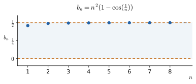
הפונקציות הטריגונומטריות ההפוכות
בפונקציות הטריגונומטריות ההפוכות משתמשים בטווחי הערכים מתוך ההגדרה בפרק 1. לפני שחוסמים את הערך, בודקים שהביטוי שבתוך הפונקציה שייך לתחום ההגדרה.
כלל 2.4.24 — חסמי הפונקציות הטריגונומטריות ההפוכות.
החסימות נובעות מהגדרת הפונקציות בפרק 1.
| הפונקציה | התנאי על הקלט | החסימה |
|---|---|---|
| \(\arcsin(x)\) | \(-1\le x\le1\) | \(-\frac{\pi}{2}\le\arcsin(x)\le\frac{\pi}{2}\) |
| \(\arccos(x)\) | \(-1\le x\le1\) | \(0\le\arccos(x)\le\pi\) |
| \(\arctan(x)\) | \(x\in\mathbb{R}\) | \(-\frac{\pi}{2}<\arctan(x)<\frac{\pi}{2}\) |
דוגמה 2.4.25 — חסימת סדרות בעזרת טווחי הפונקציות הטריגונומטריות ההפוכות.
(א) בסדרה \(a_n=\arcsin\left(\frac{(-1)^n}{n}\right)\), עבור \(n\ge1\), הקלט מקיים \[\left|\frac{(-1)^n}{n}\right|=\frac{1}{n}\le1.\] לכן כל האיברים מוגדרים, וחסמי \(\arcsin\) נותנים \[-\frac{\pi}{2}\le a_n\le\frac{\pi}{2}.\] כלומר, \(|a_n|\le\frac{\pi}{2}\). אפשר לבחור \(M=\frac{\pi}{2}\), ואין צורך לחשב כל איבר בנפרד.
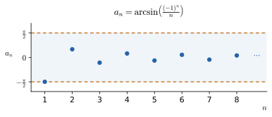
(ב) בסדרה \(b_n=\arccos\left(\frac{1}{n}\right)\), עבור \(n\ge1\), מתקיים \[0<\frac{1}{n}\le1.\] הקלט בתחום ההגדרה. לפי חסמי \(\arccos\), \[0\le b_n\le\pi.\] מכאן \(|b_n|\le\pi\), ואפשר לבחור \(M=\pi\). גם חסם שאינו הקטן ביותר מספיק.
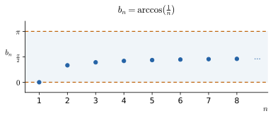
(ג) בסדרה \(c_n=\arctan(n^2)\), עבור \(n\ge1\), כל קלט \(n^2\) הוא מספר ממשי. לפי חסמי \(\arctan\), \[-\frac{\pi}{2}<c_n<\frac{\pi}{2}.\] גם כאשר הקלט גדל בלי גבול, ערכי \(\arctan\) נשארים חסומים. בפרט, \(|c_n|\le\frac{\pi}{2}\).
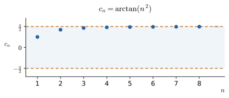
בדיקה עצמית — החסימה אינה מחליפה בדיקת תחום.
האם \(a_n=\arcsin(n)\), לכל \(n\ge1\), מגדירה סדרה של מספרים ממשיים?
כבר ב \(n=2\) מתקבל קלט מחוץ לקטע \([-1,1]\). הביטוי \(\arcsin(2)\) אינו מוגדר כמספר ממשי, ולכן אי אפשר להחיל עליו את חסמי \(\arcsin\).
אי־שוויונות אלגבריים: ריבוע וממוצעים
ריבוע אי־שלילי.
כלל 2.4.26 — ריבוע אי־שלילי.
לכל \(x\in\mathbb{R}\) מתקיים \(x^2\ge0\).
דוגמה 2.4.27 — חסימת הסדרה \(\frac{1}{n^2+1}\).
בסדרה \(a_n=\frac{1}{n^2+1}\), עבור \(n\ge1\), אי־שליליות הריבוע נותנת \(n^2+1\ge1\). לפי כלל ההופכיים החיוביים, \[0<a_n=\frac{1}{n^2+1}\le1.\] לכן הסדרה חסומה.
אי־שוויון הממוצעים.
נגדיר את שני הממוצעים כדי לנסח את האי־שוויון ולהשתמש בו לחסימת סדרות.
הגדרה 2.4.28 — ממוצע חשבוני וממוצע הנדסי.
יהיו \(n\ge1\) מספר טבעי ו \(x_1,\ldots,x_n\) מספרים ממשיים. הממוצע החשבוני שלהם הוא \[A=\frac{x_1+\cdots+x_n}{n}.\]
אם \(x_1,\ldots,x_n\ge0\), הממוצע ההנדסי שלהם הוא \[G=\sqrt[n]{x_1\cdots x_n}.\]
בממוצע החשבוני מחברים ומחלקים במספר הנתונים. בממוצע ההנדסי כופלים ומוציאים שורש שסדרו כמספר הנתונים.
דוגמה 2.4.29 — חישוב ממוצע חשבוני וממוצע הנדסי.
(א) עבור שני המספרים \(1,9\), הממוצע החשבוני הוא \[A=\frac{1+9}{2}=5.\] הממוצע ההנדסי הוא \[G=\sqrt{1\cdot9}=3.\]
(ב) עבור שלושת המספרים \(1,2,4\), הממוצע החשבוני הוא \[A=\frac{1+2+4}{3}=\frac{7}{3}.\] הממוצע ההנדסי הוא \[G=\sqrt[3]{1\cdot2\cdot4}=2.\]
בדיקה עצמית — מחשבים ומשווים.
(א) חשבו את שני הממוצעים של \(1,4,16\).
\(A=\frac{1+4+16}{3}=\) \(7\)
\(G=\sqrt[3]{1\cdot4\cdot16}=\) \(4\)
סכום המספרים הוא \(21\), ולכן \(A=7\). המכפלה היא \(64=4^3\), ולכן \(G=4\). כאן \(G<A\).
(ב) חשבו את שני הממוצעים של \(0,9\).
\(A=\frac{0+9}{2}=\) \(\frac{9}{2}\)
\(G=\sqrt{0\cdot9}=\) \(0\)
גם \(0\) מותר בהגדרת הממוצע ההנדסי: המספרים צריכים להיות אי־שליליים. כאן המכפלה היא \(0\), ולכן גם השורש הוא \(0\).
משפט 2.4.30 — אי־שוויון הממוצעים (AM–GM).
לכל מספר טבעי \(n\ge1\) ולכל \(x_1,\ldots,x_n\ge0\), הממוצע ההנדסי אינו גדול מהממוצע החשבוני: \[\sqrt[n]{x_1\cdots x_n}\le\frac{x_1+\cdots+x_n}{n}.\] שוויון מתקיים בדיוק כאשר \(x_1=\cdots=x_n\).
תובנה חשובה — מתי שני הממוצעים שווים?
לפי אי־שוויון הממוצעים, שוויון מתקיים אם ורק אם כל המספרים שווים זה לזה. אם לפחות שניים מהמספרים שונים, מתקיים \(G<A\).
דוגמה 2.4.31 — ממוצעים של שלושה מספרים שווים.
נתונים המספרים \(2,2,2\). לפי הגדרות הממוצעים, \[A=\frac{2+2+2}{3}=2,\qquad G=\sqrt[3]{2\cdot2\cdot2}=2.\] מתקבל \(A=G\), בהתאם לתנאי השוויון באי־שוויון הממוצעים.
דוגמה 2.4.32 — אי־שוויון הממוצעים במספרים.
עבור המספרים \(6,24\), הממוצע ההנדסי הוא \[G=\sqrt{6\cdot24}=12.\] הממוצע החשבוני הוא \[A=\frac{6+24}{2}=15.\] ואכן, \(12\le15\), בהתאם לאי־שוויון הממוצעים.
גם בדוגמה שבה חישבנו את הממוצעים של \(1,9\) ושל \(1,2,4\), הממוצע ההנדסי קטן מהממוצע החשבוני.
דוגמה 2.4.33 — חוסמים מנה בעזרת אי־שוויון הממוצעים.
נחסום את הסדרה \(a_n=\frac{\sqrt n}{n+1}\), עבור \(n\ge1\).
כדי להשוות בין המונה למכנה, נפעיל את אי־שוויון הממוצעים על שני המספרים \(n\) ו \(1\). שניהם חיוביים, ולכן \[\sqrt n\le\frac{n+1}{2}.\] נחלק ב \(n+1>0\): \[\frac{\sqrt n}{n+1}\le\frac{1}{2}.\] המונה והמכנה חיוביים, ולכן \[0<a_n\le\frac{1}{2}.\] מכאן \(|a_n|\le\frac{1}{2}\). האיבר הראשון שווה לחסם, וזה מותר.
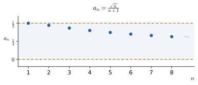
חסימות ללוגריתם ולמעריכית
מונחים — לוגריתם טבעי.
\(\ln(x)=\log_e(x)\) הוא הלוגריתם בבסיס \(e\), קבוע שערכו בקירוב \(2.71828\). הגדרת \(e\) באמצעות גבול תופיע בהמשך.
משפט 2.4.34 — חסימות ללוגריתם ולמעריכית.
| התנאי | האי־שוויון |
|---|---|
| \(x>0\) | \(1-\frac{1}{x}\le\ln(x)\le x-1\) |
| \(x\in\mathbb{R}\) | \(e^x\ge1+x\) |
בשורה הראשונה מתקבל שוויון רק ב \(x=1\); בשנייה רק ב \(x=0\).
נשתמש גם כאן בתוצאות ללא הוכחה. לחסימת הלוגריתם יש צורה נוחה נוספת: מציבים \(x=1+t\), ולכן עבור \(t>-1\) מתקיים \[\frac{t}{1+t}\le\ln(1+t)\le t.\]
דוגמה 2.4.35 — חסימת הסדרה \(n\ln\left(1+\frac{1}{n}\right)\).
נחסום את \(a_n=n\ln\left(1+\frac{1}{n}\right)\), עבור \(n\ge1\).
נציב \(t=\frac{1}{n}>0\) בחסמי הלוגריתם: \[\frac{1}{n+1}\le\ln\left(1+\frac{1}{n}\right)\le\frac{1}{n}.\] נכפול ב \(n>0\): \[\frac{n}{n+1}\le a_n\le1.\] החסם מלרע עדיין תלוי ב \(n\), אבל הוא חיובי. נרחיב את החסימה ונקבל שני חסמים קבועים: \[0\le a_n\le1.\]
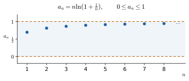
דוגמה 2.4.36 — חסימת הסדרה \(ne^{-n}\).
נתונה \(a_n=ne^{-n}=\frac{n}{e^n}\), עבור \(n\ge1\). נציב \(x=n\) באי־השוויון \(e^x\ge1+x\). המונה והמכנים חיוביים, ולכן \[0<a_n=\frac{n}{e^n}\le\frac{n}{n+1}<1.\] הסדרה חסומה מלרע על ידי \(0\) ומלעיל על ידי \(1\).
חסימות בעזרת אינדוקציה
דרך נוספת להוכיח חסימות היא באמצעות אינדוקציה — שיטת הוכחה שנציג כעת.
הגדרה 2.4.37 — אינדוקציה.
אינדוקציה היא שיטת הוכחה המאפשרת להוכיח טענה עבור כל המספרים הטבעיים, בלי לבדוק כל מספר בנפרד. כדי להוכיח טענה לכל \(n\ge1\), מוכיחים שני דברים:
- בסיס האינדוקציה: הטענה נכונה עבור \(n=1\).
- צעד האינדוקציה: לכל \(n\ge1\), אם הטענה נכונה עבור \(n\), היא נכונה גם עבור \(n+1\). לצורך הוכחת הצעד מניחים שהטענה נכונה עבור \(n\); זו הנחת האינדוקציה.
אם שני התנאים מתקיימים, הטענה נכונה לכל \(n\ge1\).
הסבר — מדוע הבסיס והמעבר מספיקים?
הבסיס נותן את הטענה עבור \(1\). המעבר נותן ממנה את הטענה עבור \(2\), ממנה עבור \(3\), וכן הלאה. לכל מספר טבעי מגיעים אחרי מספר סופי של צעדים, ולכן הבסיס והמעבר מספיקים להוכחת הטענה לכל \(n\ge1\).
דמיינו שורה של אבני דומינו עומדות: האבן הראשונה נופלת, וכל אבן שנופלת מפילה את האבן הבאה. לכן השנייה נופלת, אחריה השלישית, וכך הלאה.
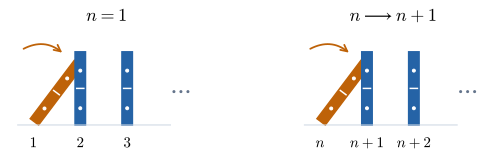
צריך גם התחלה וגם מעבר שעובד בכל צעד. בלי נפילת האבן הראשונה התהליך אינו מתחיל; אם אבן אינה מפילה את הבאה, התהליך עלול להיעצר.
שאלה ותשובה — לשם מה נשתמש באינדוקציה?
נשתמש באינדוקציה כדי להוכיח תכונות של סדרות לכל האינדקסים. למשל, כדי להראות שסדרה \((a_n)_{n=1}^{\infty}\) חסומה בין שני מספרים קבועים \(m\) ו \(M\), הטענה באינדקס \(n\) היא \(m\le a_n\le M\). בסדרה רקורסיבית, כלל הרקורסיה מאפשר לקשר בין האיבר \(a_n\) לאיבר \(a_{n+1}\).
דוגמה 2.4.38 — חוסמים סדרה רקורסיבית באינדוקציה.
נתונה הסדרה \[a_1=0,\qquad a_{n+1}=\frac{a_n+2}{2}.\] נראה כיצד להוכיח ש \(0\le a_n\le2\) לכל \(n\ge1\).
פתרון. תחילה נחשב כמה איברים: \[a_1=0,\qquad a_2=\frac{0+2}{2}=1,\] \[a_3=\frac{1+2}{2}=\frac{3}{2},\qquad a_4=\frac{\frac{3}{2}+2}{2}=\frac{7}{4}.\] כל איבר חדש הוא הממוצע החשבוני של האיבר הקודם ושל \(2\). האיברים שחישבנו נמצאים בין \(0\) לבין \(2\), אבל בדיקת כמה איברים אינה מוכיחה חסימות של כל הסדרה. לשם כך נשתמש בעקרון האינדוקציה.
מתחילים באיבר הראשון. מתקיים \(a_1=0\), ולכן \(0\le a_1\le2\).
בודקים את המעבר לאיבר הבא. נניח שעבור אינדקס \(n\ge1\) מתקיים \(0\le a_n\le2\). נוסיף \(2\) לכל האגפים: \[2\le a_n+2\le4.\] נחלק ב \(2>0\) ונשתמש בהגדרת האיבר הבא: \[1\le\frac{a_n+2}{2}=a_{n+1}\le2.\] בפרט, \(0\le a_{n+1}\le2\).
מסיקים לכל האיברים. הטענה נכונה לאיבר הראשון. המעבר מוכיח אותה לאיבר השני, ממנו לשלישי, וכך הלאה. לכן \(0\le a_n\le2\) לכל \(n\ge1\), והסדרה חסומה.
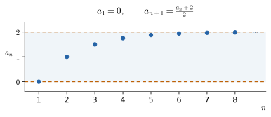
שיטת פתרון 2.4.39 — בחירת חסמים ובדיקתם באינדוקציה.
כדי לחסום סדרה רקורסיבית \((a_n)_{n=1}^{\infty}\), מחפשים קטע \([m,M]\) שמכיל את האיבר הראשון ושכלל הרקורסיה משאיר בו גם את האיבר הבא.
- מציעים חסמים קבועים. אם \(m,M\) לא נתונים, נעזרים בכלל הרקורסיה ובאיברים הראשונים כדי להציע אותם. החסמים אינם תלויים ב \(n\), ואין צורך שיהיו ההדוקים ביותר.
- בודקים את האיבר הראשון: \(m\le a_1\le M\).
- בודקים שכלל הרקורסיה שומר על החסימה. מניחים \(m\le a_n\le M\) עבור אינדקס \(n\ge1\) כלשהו ופועלים לפי נוסחת האיבר הבא. בודקים שהפעולות מותרות — למשל, שהביטוי בשורש אינו שלילי או שהמכנה אינו אפס — ומראים שהתוצאה מקיימת שוב \(m\le a_{n+1}\le M\).
- מסיקים: לפי עקרון האינדוקציה, כל איברי הסדרה נמצאים ב \([m,M]\), ולכן הסדרה חסומה.
בהנחה משתמשים רק באינדקס הנוכחי; את הטענה על כל האינדקסים מקבלים בסוף, מן הבסיס ומצעד האינדוקציה יחד.
דוגמה 2.4.40 — חסימת סדרה רקורסיבית עם שורש.
נתונה הסדרה \((b_n)_{n=1}^{\infty}\): \[b_1=1,\qquad b_{n+1}=\sqrt{6+b_n}\quad(n\ge1).\] נראה ש \(0\le b_n\le3\) לכל \(n\ge1\), בעזרת שיטת החסימה באינדוקציה.
בחירת החסמים. השורש אי־שלילי, ולכן ננסה חסם מלרע \(0\). ננסה חסם מלעיל \(3\): כאשר \(b_n\le3\), הביטוי בשורש אינו גדול מ \(6+3=9=3^2\). כעת צריך לבדוק שהבחירה אכן מתאימה לכל האיברים.
בסיס. \(b_1=1\), ולכן \(0\le b_1\le3\).
מעבר. נניח ש \(0\le b_n\le3\) עבור אינדקס \(n\ge1\) כלשהו. לפי כלל החיבור באי־שוויון, \[6\le6+b_n\le9.\] הביטוי בשורש חיובי, ולכן השורש מוגדר ואי־שלילי: \(b_{n+1}\ge0\). כמו כן, \[b_{n+1}^2=6+b_n\le9=3^2.\] שני המספרים \(b_{n+1}\) ו \(3\) אי־שליליים, ולכן השוואת הריבועים נותנת \(b_{n+1}\le3\). קיבלנו \[0\le b_{n+1}\le3.\]
מסקנה. לפי עקרון האינדוקציה, כל האיברים מוגדרים ונמצאים ב \([0,3]\). בפרט, הסדרה חסומה.
תרגילים
שימוש באי־שוויונות מוכרים
תרגיל 2.4.41 — בונים חסימות שלב אחר שלב.
בכל הסעיפים \(n\ge1\).
(א) נתונה \(a_n=3-2\cos(n)\). התחילו מחסמי הקוסינוס ומצאו חסמים לסדרה.
כופלים ב \(-2\) והופכים את שני הכיוונים.
מוסיפים \(3\) לכל האגפים. מתקבל \(1\le a_n\le5\), ובפרט \(|a_n|\le5\).
(ב) נתונה \(b_n=\sin(n)+\cos(n)\). השתמשו באי־שוויון המשולש.
\[|b_n|\le|\sin(n)|+|\cos(n)|.\] חסמו כל מחובר:
\(|b_n|\le\) \(1\) \(+\) \(1\) \(=\) \(2\)
לפי חסמי הסינוס והקוסינוס, כל אחד מהערכים המוחלטים קטן מ \(1\) או שווה לו. לכן \(|b_n|\le2\), ומכאן \(-2\le b_n\le2\). אין צורך לדעת את ערכם המדויק של הסינוס והקוסינוס.
(ג) נתונה \(c_n=2+\arcsin\left(\frac{1}{n+1}\right)\).
תחילה בודקים את הקלט. מאחר ש \(n+1\ge2\), מתקיים
\(0<\frac{1}{n+1}\le\) \(\frac{1}{2}\)
הקלט ב \([-1,1]\). הוסיפו \(2\) לחסמי \(\arcsin\):
\(2-\frac{\pi}{2}\) \(\le c_n\le\) \(2+\frac{\pi}{2}\)
מחסמי \(\arcsin\) מקבלים \(-\frac{\pi}{2}\le\arcsin\left(\frac{1}{n+1}\right)\le\frac{\pi}{2}\). מוסיפים \(2\) לכל האגפים ומקבלים את החסמים \(2-\frac{\pi}{2}\) ו \(2+\frac{\pi}{2}\). שניהם קבועים, ולכן הסדרה חסומה.
תרגיל 2.4.42 — תחום ההגדרה וטווח הערכים.
בכל הסעיפים \(n\ge1\).
(א) נתונה \(a_n=\arccos\left(\frac{n-1}{n+1}\right)\).
כתבו את הקלט בצורה שתעזור לבדוק את תחומו:
\(\frac{n-1}{n+1}=1-\) \(\frac{2}{n+1}\)
מאחר ש \(0<\frac{2}{n+1}\le1\), הקלט ב \([0,1)\), ולכן גם ב \([-1,1]\). השתמשו בחסמי \(\arccos\):
\(0\) \(\le a_n\le\) \(\pi\)
הכתיבה \(\frac{n-1}{n+1}=1-\frac{2}{n+1}\) מראה שהקלט בתחום ההגדרה לכל \(n\ge1\). לפי חסמי \(\arccos\), \(0\le a_n\le\pi\), ובפרט \(|a_n|\le\pi\).
(ב) נתונה \(b_n=\arctan(n^2)-\frac{\pi}{2}\). כל \(n^2\) הוא קלט מותר. חסרו \(\frac{\pi}{2}\) מחסמי \(\arctan\).
\(-\pi\) \(< b_n <\) \(0\)
מכאן אפשר לבחור בחסימה \(|b_n|\le M\) את \(M=\) \(\pi\).
מתחילים מחסמי \(\arctan\): \(-\frac{\pi}{2}<\arctan(n^2)<\frac{\pi}{2}\). לאחר החיסור מקבלים \(-\pi<b_n<0\). לכן \(|b_n|<\pi\), ובפרט החסימה החלשה \(|b_n|\le\pi\) נכונה.
תרגיל 2.4.43 — ריבוע אי־שלילי ואי־שוויון הממוצעים בפעולה.
בכל הסעיפים \(n\ge1\).
(א) נחסום את \(a_n=\frac{\sqrt n}{n+4}\) באמצעות אי־שוויון הממוצעים.
כדי לקבל בממוצע החשבוני את \(\frac{n+4}{2}\), נציב \(u=n\) ו \(v=\) \(4\). שני המספרים חיוביים.
בממוצע ההנדסי מתקבל
\(\sqrt{uv}=\sqrt{4n}=\) \(2\) \(\sqrt n\)
לכן \(2\sqrt n\le\frac{n+4}{2}\). נכפול ב \(2\) ונקבל
\(4\) \(\sqrt n\le n+4\)
מחלקים ב \(4(n+4)>0\). מאחר שגם המונה חיובי,
\(0<a_n\le\) \(\frac{1}{4}\)
מציבים \(u=n\) ו \(v=4\) באי־שוויון הממוצעים ומקבלים \(2\sqrt n\le\frac{n+4}{2}\). מכאן \(4\sqrt n\le n+4\), ולכן \(0<\frac{\sqrt n}{n+4}\le\frac{1}{4}\). החסם קבוע, ולכן הסדרה חסומה.
(ב) נחסום את \(b_n=\frac{n}{n^2+1}\) באמצעות ריבוע אי־שלילי: \((n-1)^2\ge0\).
נפתח את הריבוע:
\(n^2-\) \(2\) \(n+1\ge0\)
נעביר את האיבר האמצעי לאגף השני:
\(n^2+1\ge\) \(2\) \(n\)
נחלק ב \(2(n^2+1)>0\). מאחר ש \(n>0\), מתקבל
\(0<b_n\le\) \(\frac{1}{2}\)
מאי־שליליות הריבוע מקבלים \(n^2-2n+1\ge0\), ולכן \(n^2+1\ge2n\). לאחר החלוקה מתקבל \(\frac{1}{2}\ge\frac{n}{n^2+1}>0\). כך מצאנו חסם קבוע גם בלי לחשב גבול.
אינדוקציה
תרגיל 2.4.44 — מתרגלים את הבסיס ואת המעבר.
נתונה הסדרה \[b_1=1,\qquad b_{n+1}=\frac{b_n+3}{2}.\] הראו בעזרת אינדוקציה ש \(1\le b_n\le3\) לכל \(n\ge1\).
בסיס. האיבר הראשון הוא \(b_1=\) \(1\), ולכן הוא בקטע \([1,3]\).
מעבר. נניח ש \(1\le b_n\le3\). לאחר חיבור \(3\) לכל האגפים:
\(4\) \(\le b_n+3\le\) \(6\)
לאחר חלוקה ב \(2>0\):
\(2\) \(\le b_{n+1}\le\) \(3\)
מכאן גם \(1\le b_{n+1}\le3\). הבסיס והמעבר מוכיחים שהחסימה נכונה לכל האיברים.
מתחילים מ \(b_1=1\in[1,3]\). אם \(1\le b_n\le3\), אז \(4\le b_n+3\le6\), ולכן \(2\le b_{n+1}\le3\). הקטע \([2,3]\) נמצא בתוך \([1,3]\), ולכן כלל המעבר משאיר את האיבר הבא בקטע המבוקש. לפי שיטת האינדוקציה, כל איברי הסדרה ב \([1,3]\).
2.5 מונוטוניות
חסימות מתארת את התחום שבו נמצאים האיברים, אבל אינה אומרת אם הם עולים, יורדים או מחליפים כיוון. כעת נבדוק את הכיוון.
הגדרה 2.5.1 — סדרה מונוטונית.
סדרה היא עולה אם כל איבר גדול מקודמו או שווה לו: \[a_n\le a_{n+1}.\]
סדרה היא יורדת אם כל איבר קטן מקודמו או שווה לו: \[a_n\ge a_{n+1}.\]
סדרה עולה או יורדת נקראת מונוטונית.
בהגדרות האלה מותר שוויון. כאשר \(a_n<a_{n+1}\) לכל \(n\), אומרים עולה ממש; כאשר \(a_n>a_{n+1}\) לכל \(n\), אומרים יורדת ממש.
דוגמה 2.5.2 — סדרה יורדת ממש וסדרה עולה ממש.
(א) הסדרה \(a_n=\frac{1}{n}\), עבור \(n\ge1\). איבריה הראשונים הם \[1,\frac{1}{2},\frac{1}{3},\frac{1}{4},\ldots\] המכנה גדל וחיובי. לפי כלל ההופכיים, כל איבר קטן מקודמו, ולכן הסדרה יורדת ממש.
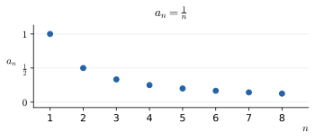
(ב) הסדרה \(b_n=1-\frac{1}{n}\), עבור \(n\ge1\). איבריה הראשונים הם \[0,\frac{1}{2},\frac{2}{3},\frac{3}{4},\ldots\] ככל ש \(n\) גדל, מחסרים מ \(1\) מספר חיובי קטן יותר. לכן כל איבר גדול מקודמו, והסדרה עולה ממש.
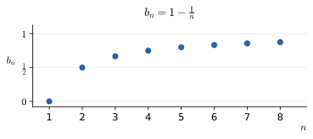
דוגמה 2.5.3 — סדרות מונוטוניות עם איברים עוקבים שווים.
(א) סדרה עולה שאינה עולה ממש. בסדרה \((c_n)_{n=1}^{\infty}\) כל מספר טבעי מופיע פעמיים: \[c_{2k-1}=c_{2k}=k\qquad(k\ge1).\] כלומר, \[1,1,2,2,3,3,4,4,\ldots\] בכל זוג האיברים שווים, ובמעבר לזוג הבא הערך גדל ב \(1\). לכן \(c_{n+1}\ge c_n\) לכל \(n\ge1\): הסדרה עולה. היא אינה עולה ממש, כי למשל \(c_1=c_2\).
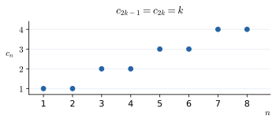
(ב) הסדרה הקבועה \(d_n=4\), עבור \(n\ge1\). בכל צעד מתקיים \(d_{n+1}=d_n=4\), ולכן מתקיימים גם \(d_{n+1}\ge d_n\) וגם \(d_{n+1}\le d_n\). הסדרה גם עולה וגם יורדת, אבל אינה עולה ממש ואינה יורדת ממש.
בדיקה עצמית.
חמשת האיברים הראשונים עולים. האם די בכך כדי לקבוע שהסדרה עולה?
ההגדרה דורשת \(a_n\le a_{n+1}\) לכל \(n\). ייתכן שהאיבר השישי קטן מהחמישי.
הסדרה הקבועה \(4,4,4,\ldots\) היא:
כל איבר שווה לקודמו, ולכן שני האי־שוויונות מתקיימים. היא אינה עולה ממש ואינה יורדת ממש.
שיטת פתרון 2.5.4 — בדיקת מונוטוניות: הפרש או מנה.
דרך ההפרש. מחשבים את \(a_{n+1}-a_n\) ובודקים את סימנו לכל אינדקס:
- אם ההפרש תמיד אי־שלילי, הסדרה עולה.
- אם ההפרש תמיד אי־חיובי, הסדרה יורדת.
- אם יש צעד שבו ההפרש חיובי וצעד שבו הוא שלילי, הסדרה אינה מונוטונית.
דרך המנה. אם כל האיברים חיוביים, אפשר לחשב את \(\frac{a_{n+1}}{a_n}\) ולהשוות ל \(1\):
- אם המנה גדולה מ \(1\) או שווה לו בכל האינדקסים, הסדרה עולה.
- אם המנה קטנה מ \(1\) או שווה לו בכל האינדקסים, הסדרה יורדת.
בדרך ההפרש משווים ל \(0\); בדרך המנה משווים ל \(1\). תנאי החיוביות נחוץ לדרך המנה כפי שניסחנו אותה כאן.
בשתי הדרכים, את \(a_{n+1}\) מקבלים מהצבת \(n+1\) במקום \(n\) בנוסחה לאיבר הכללי.
דוגמה 2.5.5 — כותבים את האיבר הבא ומשווים.
נבדוק את המונוטוניות של \(a_n=\frac1n\).
תחילה נכתוב את האיבר הבא: \[a_{n+1}=\frac1{n+1}.\] כעת נחסר: \[\begin{aligned} a_{n+1}-a_n&=\frac1{n+1}-\frac1n\\ &=\frac{n-(n+1)}{n(n+1)}\\ &=-\frac1{n(n+1)}. \end{aligned}\] המכנה חיובי, ולכן ההפרש שלילי לכל \(n\). מכאן שהסדרה יורדת ממש.
אפשר להגיע לאותה מסקנה בדרך המנה. האיברים חיוביים, ומתקיים \[\frac{a_{n+1}}{a_n}=\frac{\frac{1}{n+1}}{\frac{1}{n}}=\frac n{n+1}<1.\] המונה קטן מהמכנה החיובי בכל אינדקס, ולכן כל איבר קטן מקודמו.
בדיקה עצמית — האיבר הבא או תוספת של אחת?
נתונה \(a_n=2n+3\).
\(a_{n+1}=\) \(2(n+1)+3\).
\(a_{n+1}-a_n=\) \(2\).
מציבים \(n+1\) במקום \(n\), ולכן \(a_{n+1}=2(n+1)+3=2n+5\). האיבר הבא גדול מקודמו ב \(2\).
האם תמיד מתקיים \(a_{n+1}=a_n+1\)?
לא. תוספת של אחת לאינדקס מעבירה לאיבר הבא; היא אינה מחייבת שהאיבר עצמו יגדל באחת.
דוגמה 2.5.6 — התכנסות אינה מחייבת התקרבות בכל צעד.
לפי הגדרת הגבול, כאשר \(a_n\to L\) מתקיים \(|a_n-L|\to0\): מאינדקס מתאים והלאה כל המרחקים קטנים כרצוננו. אין צורך שהמרחק יקטן בכל צעד.
נתבונן בסדרה \[a_n=1+\frac{2+(-1)^n}{n},\qquad n\ge1.\] נראה ש \(a_n\to1\), ואילו \(|a_n-1|\to0\), אף שהמרחק גדל בחלק מהצעדים.
האיברים הראשונים הם \[2,\frac{5}{2},\frac{4}{3},\frac{7}{4},\frac{6}{5},\frac{3}{2},\ldots\] בכל מעבר מאינדקס אי־זוגי לזוגי הערך גדל ומתרחק מ \(1\); במעבר לאינדקס האי־זוגי הבא הוא קטן ומתקרב אליו. לכן הסדרה אינה מונוטונית.
כדי לבדוק התכנסות אל \(1\), נחשב את המרחק ממנו. המונה \(2+(-1)^n\) הוא תמיד \(1\) או \(3\), ולכן הוא חיובי: \[|a_n-1|=\left|\frac{2+(-1)^n}{n}\right|=\frac{2+(-1)^n}{n}\le\frac{3}{n}.\] נבחר \(\varepsilon>0\) כלשהו. כדי להבטיח \(|a_n-1|<\varepsilon\), מספיק לדרוש \[\frac{3}{n}<\varepsilon.\] מכיוון ש \(n\) ו \(\varepsilon\) חיוביים, הדרישה הזאת שקולה ל \[n>\frac{3}{\varepsilon}.\] נבחר אינדקס טבעי \(N>\frac{3}{\varepsilon}\). לכל \(n\ge N\) מתקיים \[|a_n-1|\le\frac{3}{n}\le\frac{3}{N}<\varepsilon.\] כך אפשר לבחור \(N\) מתאים לכל \(\varepsilon>0\). לפי הגדרת הגבול, \[\lim_{n\to\infty}\left(1+\frac{2+(-1)^n}{n}\right)=1.\] ההתרחקויות החוזרות אינן מונעות התכנסות: בכל רצועה סביב \(1\), מאינדקס מתאים והלאה כל האיברים נשארים בפנים.
מונוטוניות וחסימות יחד
סדרה חסומה יכולה להמשיך לקפוץ בין שני מספרים, וסדרה עולה יכולה לגדול מעבר לכל חסם. כשיש גם כיוון קבוע וגם חסם מתאים, מתקבלת מסקנה חזקה יותר.
שימו לב — טעות נפוצה — מונוטוניות אינה מבטיחה התכנסות.
מונוטוניות לבדה אינה מספיקה. כדי להסיק התכנסות למספר ממשי, לסדרה עולה דרוש חסם מלעיל, ולסדרה יורדת דרוש חסם מלרע.
דוגמה 2.5.7 — סדרה עולה שאינה מתכנסת.
נתונה הסדרה \(a_n=n\), עבור \(n\ge1\). מתקיים \(a_{n+1}-a_n=1>0\), ולכן היא עולה ממש. אבל לכל מספר \(M\) קיים אינדקס טבעי \(n>M\), ואז \(a_n>M\). הסדרה אינה חסומה מלעיל, ולכן אינה מתכנסת למספר ממשי.
משפט 2.5.8 — מונוטוניות, חסימות והגבול.
תהי \((a_n)_{n=1}^{\infty}\) סדרה.
- אם היא עולה, היא מתכנסת למספר ממשי אם ורק אם היא חסומה מלעיל; במקרה זה, \[\lim_{n\to\infty}a_n=\sup_{n\ge1}a_n.\]
- אם היא יורדת, היא מתכנסת למספר ממשי אם ורק אם היא חסומה מלרע; במקרה זה, \[\lim_{n\to\infty}a_n=\inf_{n\ge1}a_n.\]
הסבר — מדוע הגבול הוא החסם העליון או התחתון?
בסדרה עולה וחסומה מלעיל, נסמן ב \(S\) את החסם העליון. כל האיברים מקיימים \(a_n\le S\). לכל \(\varepsilon>0\), המספר \(S-\varepsilon\) אינו חסם מלעיל: אחרת \(S\) לא היה החסם מלעיל הקטן ביותר. לכן קיים איבר \(a_N>S-\varepsilon\). מכיוון שהסדרה עולה, לכל \(n\ge N\) מתקיים \[S-\varepsilon<a_N\le a_n\le S.\] כל האיברים האלה נמצאים ברצועה סביב \(S\), ולכן \(a_n\to S\) לפי הגדרת הגבול.
בסדרה יורדת וחסומה מלרע, נסמן את החסם התחתון ב \(I\). המספר \(I+\varepsilon\) אינו חסם מלרע, ולכן קיים \(a_N<I+\varepsilon\). הירידה מבטיחה שלכל \(n\ge N\), \[I\le a_n\le a_N<I+\varepsilon.\] מכאן \(a_n\to I\) באותו אופן.
דוגמה 2.5.9 — הגבול של סדרה עולה הוא החסם העליון.
נתונה הסדרה \(a_n=1-\frac{1}{n}\), עבור \(n\ge1\). הראינו שהיא עולה ממש, וכל איבריה קטנים מ \(1\). כל מספר קטן מ \(1\) אינו חסם מלעיל: אם הוא \(1-\delta\) עם \(\delta>0\), בחירת \(n>\frac{1}{\delta}\) נותנת \(a_n>1-\delta\). לכן \(\sup_{n\ge1}a_n=1\), ולפי משפט המונוטוניות והחסימות, \[\lim_{n\to\infty}\left(1-\frac{1}{n}\right)=1.\] גם \(2\) הוא חסם מלעיל, אבל הוא גדול מהחסם העליון ולכן אינו הגבול.
דוגמה 2.5.10 — הגבול של סדרה יורדת הוא החסם התחתון.
נתונה הסדרה \(b_n=1+\frac{1}{n}\), עבור \(n\ge1\). הסדרה יורדת ממש, וכל איבריה גדולים מ \(1\). כל מספר \(1+\delta\) עם \(\delta>0\) אינו חסם מלרע: כש \(n>\frac{1}{\delta}\) מתקיים \(b_n<1+\delta\). לכן \(\inf_{n\ge1}b_n=1\), ולפי משפט המונוטוניות והחסימות, \[\lim_{n\to\infty}\left(1+\frac{1}{n}\right)=1.\] גם \(0\) הוא חסם מלרע, אבל הוא קטן מהחסם התחתון ולכן אינו הגבול.
שימו לב — טעות נפוצה — חסימות אינה מבטיחה התכנסות.
איברי סדרה יכולים להישאר בין שני חסמים בלי להתקרב למספר אחד. הסדרה \(a_n=(-1)^n\) שבדוגמה חסומה, אבל אינה מתכנסת.
שימו לב — חסם שבחרנו אינו בהכרח הגבול.
לסדרה יש חסמים רבים מלעיל ומלרע, ולכן עצם מציאת חסם אינה מזהה את הגבול. בסדרה עולה וחסומה מלעיל, הגבול הוא דווקא החסם העליון — הקטן מבין החסמים מלעיל. בסדרה יורדת וחסומה מלרע, הגבול הוא דווקא החסם התחתון — הגדול מבין החסמים מלרע. אלה מסקנות משפט המונוטוניות והחסימות; ללא מונוטוניות, גם החסם העליון והתחתון אינם בהכרח גבולות.
הערה 2.5.11 — כאשר רק הזנב מונוטוני.
אם המונוטוניות והחסם המתאים מתקיימים רק החל מאינדקס \(N\), מפעילים את משפט המונוטוניות והחסימות על הזנב. הגבול הוא החסם העליון או התחתון של הזנב, בהתאם לכיוון המונוטוניות. הוא גם גבול הסדרה כולה, לפי הטענה על גבול הזנב.
דוגמה 2.5.12 — החסם העליון של הזנב עשוי להיות שונה מזה של הסדרה.
נתונה הסדרה \[a_1=3,\qquad a_n=1-\frac{1}{n}\quad(n\ge2).\] הזנב שמתחיל באינדקס \(2\) עולה וחסמו העליון הוא \(1\), כפי שמתקבל מאותו חישוב בדוגמת הסדרה \(1-\frac{1}{n}\). לכן הזנב, וגם הסדרה כולה, מתכנסים ל \(1\). לעומת זאת, החסם העליון של כל הסדרה הוא \(3\), בגלל האיבר הראשון. הסדרה כולה אינה עולה.
בדיקה עצמית.
סדרה עולה וכל איבריה קטנים מ \(5\). מה אפשר להסיק?
למשל, \(1-\frac1n\) עולה וקטנה מ \(5\), אבל גבולה הוא \(1\).
ידוע שסדרה יורדת וחסומה מלעיל. האם שתי התכונות האלה מבטיחות התכנסות?
לסדרה יורדת דרוש חסם מלרע. למשל, \(a_n=-n\) יורדת וחסומה מלעיל, אבל אינה מתכנסת למספר ממשי.
שימו לב — בודקים את שתי ההנחות.
למשפט המונוטוניות והחסימות דרושות גם מונוטוניות וגם חסם בצד המתאים. הסדרה \(a_n=n\) מראה מדוע מונוטוניות לבדה אינה מספיקה; הסדרה \(a_n=(-1)^n\) מראה מדוע חסימות לבדה אינה מספיקה. גם הכיוון ההפוך אינו נכון: התכנסות אינה מחייבת מונוטוניות.
שאלה פתורה 2.5.13 — סדרה ברקורסיה: התכנסות וחישוב הגבול.
נתונים \[a_1=1,\qquad a_{n+1}=\sqrt{2+a_n}.\] נרצה לדעת אם הסדרה מתכנסת, ואם כן — לאיזה מספר.
נעבור יחד על הטיעון. השלימו את הבדיקות בכל שלב; אפשר לפתוח את ההסבר לאחר ניסיון.
חסימות באינדוקציה. נשתמש בשיטת האינדוקציה.
בסיס: \(a_1=1\) נמצא ב \([1,2]\).
מעבר: נניח ש \(1\le a_n\le2\) עבור אינדקס \(n\ge1\) כלשהו, ונראה שגם האיבר הבא נמצא בקטע.
לאחר חיבור \(2\) לכל האגפים:
\(3\) \(\le 2+a_n\le\) \(4\)
לאחר הוצאת שורש מכל האגפים:
\(\sqrt{3}\) \(\le a_{n+1}\le\) \(2\)
האם גם האיבר הבא נמצא ב \([1,2]\)? כן
מחברים \(2\) ומקבלים \(3\le2+a_n\le4\). הוצאת שורש שומרת על סדר המספרים האי־שליליים, ולכן \[1<\sqrt3\le a_{n+1}\le2.\] מתחילים מאיבר שנמצא ב \([1,2]\), והכלל משאיר כל איבר חדש בתוכו. לכן כל איברי הסדרה בקטע הזה.
מונוטוניות. שני איברים עוקבים חיוביים, ולכן אפשר להשוות את הריבועים שלהם. לפי הרקורסיה, \[\begin{aligned} a_{n+1}^2-a_n^2&=2+a_n-a_n^2\\ &=(2-a_n)(a_n+1). \end{aligned}\]
כבר קיבלנו \(1\le a_n\le2\). לכן הגורם \(2-a_n\) אי־שלילי, והגורם \(a_n+1\) חיובי.
מכאן \(a_{n+1}^2\) גדול או שווה ל \(a_n^2\), ולכן הסדרה עולה.
החסם הדרוש הוא מלעיל, ואפשר לבחור אותו להיות \(2\).
לפי משפט 2.5.8, הסדרה מתכנסת.
מכפלת שני הגורמים אי־שלילית, ולכן \(a_{n+1}^2\ge a_n^2\). האיברים חיוביים, ומכאן \(a_{n+1}\ge a_n\). הסדרה עולה וחסומה מלעיל, ולכן מתכנסת.
חישוב הגבול. כבר ביססנו שהסדרה מתכנסת בעזרת משפט המונוטוניות והחסימות. זהו שלב הכרחי לפני שמציבים גבול ברקורסיה. כעת נסמן את הגבול ב \(L\).
גם \(a_{n+1}\to L\), לפי הכלל על גבול הזנב. נשתמש בכללי החיבור והשורש מתוך משפט 2.3.11 ו טענה 2.3.12:
השלימו את האגף הימני במשוואה שמתקבלת מהעברת גבול ברקורסיה:
\(L=\) \(\sqrt{2+L}\)
נעלה בריבוע, נעביר אגפים ונפרק לגורמים: \[L^2=2+L,\] \[L^2-L-2=0,\] \[(L-2)(L+1)=0.\] שני המועמדים הם \(-1\) ו \(2\) (בסדר עולה).
כל האיברים ב \([1,2]\), ולכן גם \(L\) בקטע הזה. הגבול הוא \(2\).
לאחר שביססנו התכנסות, מציבים את הגבול בשני צדי הרקורסיה ומקבלים \(L=\sqrt{2+L}\). פתרון המשוואה לאחר העלאה בריבוע נותן שני מועמדים, אבל רק \(2\) נמצא ב \([1,2]\) ומקיים את המשוואה המקורית.
שימו לב — משוואה לגבול אינה מבטיחה התכנסות.
אם הסדרה מתכנסת, גבולה חייב לקיים את המשוואה. פתרון המשוואה נותן מועמדים בלבד; כדי לקבוע שאחד מהם הוא הגבול צריך גם לבסס התכנסות.
בדיקה עצמית — מה צריך לבדוק לפני שמציבים גבול?
נתונים \(a_1=0\) ו \(a_{n+1}=1-a_n\). המשוואה \(L=1-L\) נותנת \(L=\frac{1}{2}\). האם זהו גבול הסדרה?
לא. איברי הסדרה הם \(0,1,0,1,\ldots\), ולכן היא אינה מתכנסת. אין כאן גבול שאפשר להציב בכלל הרקורסיה.
תרגילים
תרגיל 2.5.14 — חסמים פשוטים.
בכל סעיף מצאו מספר \(K\) כך ש \(|a_n|\le K\) לכל \(n\). אין צורך למצוא את המספר הקטן ביותר.
(א) \(a_n=4(-1)^n\): אפשר לבחור \(K=\) \(4\).
(ב) \(a_n=\frac2n\): אפשר לבחור \(K=\) \(2\).
(ג) \(a_n=1+\frac1n\): אפשר לבחור \(K=\) \(2\).
ב (א) חשבו את הערך המוחלט. ב (ב) ו (ג) השתמשו ב \(0\le\frac1n\le1\).
(א) כל הערכים המוחלטים שווים \(4\).
(ב) מתקיים \(0\le\frac2n\le2\).
(ג) מתקיים \(1\le1+\frac1n\le2\).
בכל סעיף גם מספר גדול מהחסם שמצאנו מתאים.
תרגיל 2.5.15 — מונוטוניות, חסם ומסקנה על התכנסות.
נתונה \(a_n=3-\frac1n\). בדקו מונוטוניות בעזרת הפרש או מנה, נמקו חסם מתאים, והסיקו שהסדרה מתכנסת בעזרת שתי התכונות.
אפשר לבדוק את ההפרש: \[\begin{aligned} a_{n+1}-a_n&=\left(3-\frac1{n+1}\right)-\left(3-\frac1n\right)\\ &=\frac1n-\frac1{n+1}\\ &=\frac1{n(n+1)}>0. \end{aligned}\] האינדקס חיובי, ולכן ההפרש חיובי והסדרה עולה.
למציאת חסם נחשב: \[\begin{aligned} 3-a_n&=3-\left(3-\frac1n\right)\\ &=\frac1n\ge0. \end{aligned}\] לכן \(a_n\le3\). הסדרה עולה וחסומה מלעיל, ולכן מתכנסת לפי משפט 2.5.8.
אפשר גם להשתמש במנה: האיברים חיוביים, ומתקיים \[\begin{aligned} \frac{a_{n+1}}{a_n}&=\frac{n(3n+2)}{(n+1)(3n-1)}\\ &=1+\frac1{(n+1)(3n-1)}>1. \end{aligned}\] גם מכאן נובעת העלייה.
תרגיל 2.5.16 — סדרה יורדת וחסם מתאים.
נתונה \(a_n=2+\frac3n\). בדקו מונוטוניות בדרך שתבחרו, נמקו חסם בצד המתאים, והסיקו התכנסות.
\[\begin{aligned} a_{n+1}-a_n&=\frac3{n+1}-\frac3n\\ &=-\frac3{n(n+1)}<0. \end{aligned}\] הסדרה יורדת. נוסף על כך, \[a_n-2=\frac3n\ge0,\] ולכן \(2\) הוא חסם מלרע. סדרה יורדת וחסומה מלרע מתכנסת.
בדרך המנה אפשר לקבל \[\frac{a_{n+1}}{a_n}=1-\frac3{(n+1)(2n+3)}<1.\] מכיוון שכל האיברים חיוביים, גם השוואה זו מראה שהסדרה יורדת.
תרגיל 2.5.17 — בוחרים דרך לבדיקה.
נתונה \(a_n=\frac{n}{n+1}\). הראו שהסדרה מונוטונית וחסומה בצד המתאים, והסיקו התכנסות.
\[\begin{aligned} a_{n+1}-a_n&=\frac{n+1}{n+2}-\frac n{n+1}\\ &=\frac1{(n+1)(n+2)}>0. \end{aligned}\] לכן הסדרה עולה. כדי למצוא חסם נחשב \[1-a_n=1-\frac n{n+1}=\frac1{n+1}\ge0.\] מכאן \(a_n\le1\). הסדרה עולה וחסומה מלעיל, ולכן מתכנסת.
אפשר גם להשוות את המנה ל \(1\): \[\begin{aligned} \frac{a_{n+1}}{a_n}&=\frac{(n+1)^2}{n(n+2)}\\ &=1+\frac1{n(n+2)}>1. \end{aligned}\] האיברים חיוביים, ולכן המנה מראה שהסדרה עולה.
תרגיל 2.5.18 — כיוון השינוי מתייצב רק בהמשך.
נתונה הסדרה \[a_n=\begin{cases} 2,&n=1,\\ -1,&n=2,\\ 1-\dfrac1n,&n\ge3. \end{cases}\] תחילתה היא \(2,-1,\frac23,\frac34,\frac45,\ldots\).
בהתחלה יש ירידה ואחריה עלייה. לכן הסדרה כולה אינה מונוטונית.
מהאיבר \(2\) עוברים אל \(-1\), ואחריו אל \(\frac23\). שינוי הכיוון בתחילת הסדרה אינו מונע מהזנב להיות מונוטוני.
בדקו בעזרת הפרש או מנה שהזנב המתחיל באינדקס \(3\) עולה וחסום מלעיל. מכאן הסיקו שהסדרה מתכנסת. בעוזר עובדים עם הנוסחה \(a_n=1-\frac{1}{n}\), התקפה החל מאינדקס \(3\); שני האיברים הראשונים אינם מתוארים בנוסחה הזאת.
ההפרש \(a_{n+1}-a_n=\frac{1}{n(n+1)}\) חיובי החל מאינדקס \(3\). בזנב מתקיים \(a_n\le1\), כי \(1-a_n=\frac{1}{n}\ge0\). לכן הזנב עולה וחסום מלעיל, ומכאן שהוא מתכנס. גם הסדרה מתכנסת, משום ששני איברים בתחילתה אינם משנים את הגבול.
האם \(1\) הוא חסם מלעיל גם לסדרה כולה? לא
חשבו את גבול הזנב בעזרת חשבון הגבולות. זהו גם גבול הסדרה: \(1\).
האיבר הראשון הוא \(2\), ולכן \(1\) אינו חסם מלעיל לכל הסדרה. הוא כן חוסם את הזנב שחקרנו. מחשבון הגבולות מתקבל \(1-\frac{1}{n}\to1\); שני האיברים הראשונים אינם משנים זאת.
תרגיל 2.5.19 — איזו תכונה חסרה?
השתמשו בשלוש הסדרות \[n,\qquad (-1)^n,\qquad\frac{(-1)^n}{n}.\] בכל סעיף כתבו את הנוסחה של הסדרה המתאימה.
(א) סדרה מונוטונית שאינה חסומה: \(n\).
(ב) סדרה חסומה שאינה מתכנסת: \((-1)^n\).
(ג) סדרה מתכנסת שאינה מונוטונית: \(\frac{(-1)^n}{n}\).
(א) \(n\) עולה, אך אין לה חסם מלעיל.
(ב) \((-1)^n\) נשארת בין \(-1\) לבין \(1\), אבל שתי תתי־הסדרות לפי זוגיות האינדקס מתכנסות לגבולות שונים.
(ג) המרחק של \(\frac{(-1)^n}{n}\) מאפס הוא \(\frac1n\), ולכן היא מתכנסת לאפס. שלושת איבריה הראשונים הם \(-1,\frac{1}{2},-\frac13\): תחילה יש עלייה ואחריה ירידה, ולכן היא אינה מונוטונית.
תרגיל 2.5.20 — מה רואים בהתחלה, ומה קורה בהמשך?
נתונה הסדרה \[a_n=\begin{cases} 100,&n=1,\\ \frac1n,&n\ge2. \end{cases}\]
הגבול הוא \(0\).
כתבו חסם מלעיל לכל איברי הסדרה: \(100\).
האם \(1\) הוא חסם מלעיל לכל איברי הסדרה? לא
רק האיבר הראשון שונה מהסדרה \(\frac1n\), ולכן הגבול נשאר \(0\). אבל חסם צריך להתאים לכל האיברים, כולל האיבר הראשון. לכן כל חסם מלעיל חייב להיות לפחות \(100\).
2.6 כלל הסנדוויץ׳
כדי למצוא גבול, לא תמיד צריך לפשט את הנוסחה לאיבר הכללי. לפעמים אפשר לחסום אותו בין שני ביטויים פשוטים יותר, שאת גבולותיהם אנחנו מכירים.
משפט 2.6.1 — כלל הסנדוויץ׳.
אם החל מאינדקס מסוים מתקיים \[b_n\le a_n\le c_n,\] ושתי הסדרות החיצוניות מתכנסות לאותו מספר, \[b_n\to L,\qquad c_n\to L,\] אז גם \(a_n\to L\).
הסבר — מדוע החסמים קובעים את הגבול?
כששני החסמים קרובים אל \(L\), גם כל מספר שביניהם קרוב אל \(L\).
דוגמה 2.6.2 — כשהקלט של הסינוס שואף לאפס.
נחשב את גבול הסדרה \(a_n=\sin\left(\frac{1}{n}\right)\), עבור \(n\ge1\).
לפי חסימת הסינוס בעזרת הקלט, \[\left|\sin\left(\frac{1}{n}\right)\right|\le\frac{1}{n}.\] לפי הקשר בין ערך מוחלט לאי־שוויון כפול, זו החסימה \[-\frac{1}{n}\le\sin\left(\frac{1}{n}\right)\le\frac{1}{n}.\] מהגבולות המוכרים ומחשבון הגבולות נקבל \[\lim_{n\to\infty}\left(-\frac{1}{n}\right)=0,\qquad\lim_{n\to\infty}\frac{1}{n}=0.\] שני החסמים שואפים לאפס. לכן, לפי כלל הסנדוויץ׳, \[\lim_{n\to\infty}\sin\left(\frac{1}{n}\right)=0.\]
כלל 2.6.3 — חסימת הופכי חיובי.
אם \(0<u\le v\), אז \[0<\frac1v\le\frac1u.\] ככל שמחלקים במספר חיובי גדול יותר, המנה קטנה יותר. בחסימות מותר להחליף את הסימן הראשון ב \(\le\): גם \(0\le\frac1v\le\frac1u\) נכון.
שאלה פתורה 2.6.4 — סינוס חלקי n.
נחשב את הגבול של \(\frac{\sin(n)}{n}\). ערכי הסינוס משתנים, אבל תמיד מתקיים \[-1\le\sin(n)\le1.\]
בחרו כללי גבולות ← כלל הסנדוויץ׳. בתוך הנימוק בחרו את חסמי הסינוס והתחילו את הנימוק. בחרו פעולות על האגפים ← חילוק, חלקו ב \(n\) וכתבו את שלושת האגפים שהתקבלו. האינדקס \(n\) חיובי, ולכן כיוון האי־שוויונות נשמר.
לאחר בדיקת הצעד, העתיקו לשדות החסימות את שני האגפים החיצוניים. מצאו את גבולם המשותף וכתבו אותו כתוצאת צעד הסנדוויץ׳.
מחלקים את \(-1\le\sin(n)\le1\) ב \(n>0\) ומקבלים \[-\frac1n\le\frac{\sin(n)}{n}\le\frac1n.\] שני החסמים שואפים לאפס, ולכן גם \(\frac{\sin(n)}{n}\to0\).
פתרון במילים
נחשב את גבול הסדרה \(a_n=\frac{\sin(n)}{n}\). לפי חסמי הסינוס מתקיים \(-1\le\sin(n)\le1\). נחלק ב \(n>0\) ונשמור על הכיוונים: \[-\frac{1}{n}\le\frac{\sin(n)}{n}\le\frac{1}{n}.\] שני החסמים, \(-\frac{1}{n}\) ו \(\frac{1}{n}\), שואפים לאפס. לפי כלל הסנדוויץ׳ גם הסדרה שביניהם מתכנסת לאפס: \[\lim_{n\to\infty}\frac{\sin(n)}{n}=0.\]
מסקנה 2.6.5 — סדרה חסומה כפול סדרה השואפת לאפס.
אם \((b_n)\) חסומה ו \(a_n\to0\), אז \(a_nb_n\to0\).
הסבר — מדוע הגורם החסום אינו מונע שאיפה לאפס?
הסדרה החסומה אינה חייבת להתכנס. אם \(|b_n|\le M\), אז \(|a_nb_n|\le M|a_n|\), והאגף הימני שואף לאפס.
דוגמה 2.6.6 — גבול הסדרה \(\frac{\cos(n)}{\sqrt{n}}\).
נחשב את גבול הסדרה \(c_n=\frac{\cos(n)}{\sqrt{n}}\), עבור \(n\ge1\).
לפי חסמי הקוסינוס, \(|\cos(n)|\le1\), ולכן הגורם \(\cos(n)\) חסום. לפי הגבולות הבסיסיים, הגורם \(\frac{1}{\sqrt{n}}\) שואף לאפס.
לכן, לפי כלל המכפלה של סדרה חסומה בסדרה השואפת לאפס, \[\lim_{n\to\infty}\frac{\cos(n)}{\sqrt{n}}=0.\]
בדיקה עצמית.
ידוע רק ש \(0\le a_n\le2\) לכל \(n\). האם כלל הסנדוויץ׳ מבטיח שהסדרה מתכנסת?
לא. החסמים \(0\) ו \(2\) אינם מתכנסים לאותו מספר. למשל, \(a_n=1+(-1)^n\) מקיימת את החסימות האלה ואינה מתכנסת.
האם מספיק ששתי הסדרות במכפלה יהיו חסומות כדי שהמכפלה תשאף לאפס?
לא. למשל, שתי הסדרות הקבועות \(a_n=b_n=1\) חסומות, ומכפלתן שווה \(1\).
הערה 2.6.7 — אין צורך בחסם הטוב ביותר.
כדי להשתמש בכלל הזה, אין צורך למצוא את החסם הטוב ביותר. אם \(|b_n|\le1\), גם החסם \(|b_n|\le10\) מספיק: בשני המקרים המכפלה עם סדרה השואפת לאפס תשאף לאפס. כמו בבחירת \(N\), מחפשים מספר שמקיים את הדרישה, לא בהכרח את הקטן ביותר.
שאלה פתורה 2.6.8 — גורם חסום וגורם השואף לאפס.
חשבו את הגבול של \(\frac{3\cos(n)}{n}\). נפריד בין הגורם \(3\cos(n)\) לבין \(\frac{1}{n}\).
בחרו כללי גבולות ← סדרה חסומה כפול סדרה השואפת לאפס. בשדה הגורם החסום כתבו \(3\cos(n)\), ובשדה החסם כתבו \(3\).
לנימוק בחרו את חסמי הקוסינוס. כפל של שלושת האגפים ב \(3\) יראה שהגורם שבחרתם נמצא בין \(-3\) לבין \(3\). לאחר בדיקת הנימוק, חשבו את גבול הגורם שנותר והסיקו את גבול המכפלה.
מחסמי הקוסינוס, לאחר כפל ב \(3\), מתקבל \[-3\le3\cos(n)\le3.\] לכן \(|3\cos(n)|\le3\). הגורם \(\frac{1}{n}\) שואף לאפס, ומכאן שגבול המכפלה הוא אפס.
האם גם החסם \(|3\cos(n)|\le10\) מספיק לשימוש בכלל? כן
כן. אין צורך בחסם הקטן ביותר. אם בוחרים \(10\) בעוזר, יש לנמק את הרחבת החסימות מ \(-3,3\) אל \(-10,10\).
פתרון במילים
נכתוב את הסדרה \(a_n=\frac{3\cos(n)}{n}\) כמכפלה \(3\cos(n)\cdot\frac{1}{n}\). כדי לחסום את הגורם הראשון, נכפול את החסימה \(-1\le\cos(n)\le1\) ב \(3>0\): \[-3\le3\cos(n)\le3.\] לכן \(|3\cos(n)|\le3\), וזהו גורם חסום. הגורם השני, \(\frac{1}{n}\), שואף לאפס. לפי הכלל של סדרה חסומה כפול סדרה השואפת לאפס, \[\lim_{n\to\infty}\frac{3\cos(n)}{n}=0.\]
שאלה פתורה 2.6.9 — בונים סנדוויץ׳.
נתונה \(a_n=2+\frac{\sin(n)}{n}\). בנו חסימות בעזרת עוזר האי־שוויונות, ואז השתמשו בכלל הסנדוויץ׳. גם חסמים רחבים יותר מתאימים, אם שניהם שואפים לאותו מספר.
מתחילים מ \(-1\le\sin(n)\le1\). מחלקים ב \(n>0\): \[-\frac1n\le\frac{\sin(n)}{n}\le\frac1n.\] מחברים \(2\) לכל אגף: \[2-\frac1n\le2+\frac{\sin(n)}{n}\le2+\frac1n.\] שתי הסדרות החיצוניות שואפות אל \(2\), ולכן גם הסדרה שביניהן שואפת אל \(2\).
בחרו ״כלל הסנדוויץ׳״. בתוך הנימוק בחרו את חסמי הסינוס, חלקו ב \(n\) וחברו \(2\). כתבו בשדות החסימות את שני האגפים החיצוניים שקיבלתם.
פתרון במילים
עבור \(a_n=2+\frac{\sin(n)}{n}\), כאשר \(n\ge1\), נתחיל מחסמי הסינוס: \[-1\le\sin(n)\le1.\] נחלק את שלושת האגפים ב \(n>0\), ולכן כיווני האי־שוויון נשמרים: \[-\frac{1}{n}\le\frac{\sin(n)}{n}\le\frac{1}{n}.\] נוסיף \(2\) לכל אגף: \[2-\frac{1}{n}\le a_n\le2+\frac{1}{n}.\] לפי הגבול של הסדרה ההופכית וחשבון גבולות, שני האגפים החיצוניים שואפים אל \(2\). לכן כלל הסנדוויץ׳ נותן \[\lim_{n\to\infty}\left(2+\frac{\sin(n)}{n}\right)=2.\]
תרגילים
תרגיל 2.6.10 — כותבים חסימות ומשתמשים בהן.
חשבו את הגבולות. אפשר להשתמש בכלל הסנדוויץ׳ או בכלל של סדרה חסומה כפול סדרה השואפת לאפס. בחרו חסימה מוכרת ונמקו בעזרת פעולות על האגפים את החסימות שבהן השתמשתם.
(א) \(\displaystyle\lim_{n\to\infty}\frac{\cos(n)}{n}\)
מתקיים \(|\cos(n)|\le1\), ואילו \(\frac1n\to0\). לפי מסקנה 2.6.5, המכפלה שואפת לאפס.
אין צורך לחשב את ערכי הקוסינוס. מה אפשר לומר על הערך המוחלט של כולם?
(ב) \(\displaystyle\lim_{n\to\infty}\left(3-\frac{2\sin(n)}{n}\right)\)
מתחילים מהחסימה \(-1\le\sin(n)\le1\). כופלים ב \(-2\) והופכים את כיווני האי־שוויון: \[2\ge-2\sin(n)\ge-2.\] מחלקים ב \(n>0\) ומחברים \(3\): \[3+\frac2n\ge3-\frac{2\sin(n)}{n}\ge3-\frac2n.\] שני החסמים שואפים אל \(3\), ולכן גם הסדרה שביניהם שואפת אל \(3\), לפי משפט 2.6.1.
אפשר לבחור רק את הביטוי \(\frac{2\sin(n)}{n}\) ולטפל בו תחילה, או לחסום את כל הסדרה משני הצדדים.
(ג) \(\displaystyle\lim_{n\to\infty}\frac{3+\sin(n)}{n^2}\)
מתחילים מהחסימה \[-1\le\sin(n)\le1.\] מחברים \(3\) לכל האגפים: \[2\le3+\sin(n)\le4.\] מכאן \(|3+\sin(n)|\le4\). המונה חסום, והגורם \(\frac1{n^2}\) שואף לאפס. משתמשים ב מסקנה 2.6.5.
אפשר גם לחלק את שלושת האגפים ב \(n^2>0\): \[\frac2{n^2}\le\frac{3+\sin(n)}{n^2}\le\frac4{n^2}.\] שתי הסדרות החיצוניות שואפות לאפס, ולכן אפשר להשתמש גם ב משפט 2.6.1.
התחילו בחסם לסינוס, והוסיפו \(3\). גם חסם שאינו הקטן ביותר יכול להתאים.
2.7 טכניקות לחישוב גבולות
כדי להשתמש בחשבון הגבולות, צריך לזהות בביטוי סדרות שאת גבולותיהן אנחנו מכירים. לפעמים הן מתגלות רק אחרי פישוט אלגברי. נכיר שלוש דרכים שימושיות לכך.
חלוקה בחזקה הגבוהה במכנה
דוגמה 2.7.1 — מנה של פולינומים מאותה מעלה.
נחשב את גבול הסדרה \[a_n=\frac{2n^2+3n}{5n^2+1},\qquad n\ge1.\] נחלק כל מחובר במונה ובמכנה ב \(n^2>0\). כך נקבל קבועים ומחוברים שגבולותיהם ידועים: \[a_n=\frac{2+\frac{3}{n}}{5+\frac{1}{n^2}}.\] לפי הגבולות הבסיסיים וחשבון גבולות, המונה החדש שואף ל \(2\) והמכנה ל \(5\ne0\). לכן \[\begin{aligned} \lim_{n\to\infty}a_n &=\lim_{n\to\infty}\frac{2+\frac{3}{n}}{5+\frac{1}{n^2}}\\ &=\frac{2+0}{5+0}\\ &=\frac{2}{5}. \end{aligned}\] החלוקה לא שינתה אף איבר בסדרה; היא רק כתבה אותו בצורה שאפשר להפעיל עליה את כלל המנה.
שיטת פתרון 2.7.2 — מנה של פולינומים.
מחלקים כל מחובר במונה ובמכנה באותה חזקה של \(n\): בדרך כלל, החזקה הגבוהה ביותר שמופיעה במכנה.
בדוגמאות הבאות החזקה הגבוהה במונה אינה גדולה מזו שבמכנה. לאחר החלוקה נקבל קבועים ומחוברים מהצורה \(\frac{c}{n^p}\) עם \(p>0\). כשהמונה והמכנה החדשים מתכנסים וגבול המכנה שונה מאפס, משתמשים בכלל המנה.
שאלה פתורה 2.7.3 — מתחילים במנה פשוטה.
נחשב את \[\lim_{n\to\infty}\frac{n+2}{n+4}.\] המונה והמכנה אינם מתכנסים למספרים ממשיים, ולכן כלל המנה עדיין אינו מתאים. נחלק את כל המחוברים ב \(n\).
בוחרים ״חילוק המונה והמכנה בביטוי״, ומציינים \(n\).
כעת המונה והמכנה מתכנסים אל \(1\). גבול המכנה אינו אפס, ולכן כלל המנה חל.
מחשבים את המנה.
פתרון במילים
בסדרה \(a_n=\frac{n+2}{n+4}\) נחלק את המונה ואת המכנה ב \(n>0\): \[a_n=\frac{1+\frac{2}{n}}{1+\frac{4}{n}}.\] המחוברים \(\frac{2}{n}\) ו \(\frac{4}{n}\) שואפים לאפס, ולכן המונה והמכנה החדשים שואפים ל \(1\). גבול המכנה שונה מאפס, ואפשר להשתמש בכלל המנה: \[\lim_{n\to\infty}a_n=\frac{1+0}{1+0}=1.\]
שאלה פתורה 2.7.4 — מחלקים, ורק אז עוברים לגבול.
חשבו את הגבול \[\lim_{n\to\infty}\frac{3n^2+1}{n^2+4n}.\]
מחלקים כל מחובר במונה ובמכנה באותה חזקה \(n^2\).
המחוברים \(\frac1{n^2}\) ו \(\frac4n\) שואפים לאפס. גבול המכנה הוא \(1\ne0\), ולכן אפשר להשתמש ב משפט 2.3.11.
מחשבים את המנה.
למשל, \(\frac{4n}{n^2}=\frac4n\). צריך לחלק כל מחובר, גם את \(1\) שבמונה.
פתרון במילים
בסדרה \(a_n=\frac{3n^2+1}{n^2+4n}\) נחלק כל מחובר במונה ובמכנה ב \(n^2>0\): \[a_n=\frac{3+\frac{1}{n^2}}{1+\frac{4}{n}}.\] מתקיים \(\frac{1}{n^2}\to0\) ו \(\frac{4}{n}\to0\). לכן המונה החדש שואף ל \(3\), והמכנה החדש שואף ל \(1\ne0\). לפי כלל המנה, \[\lim_{n\to\infty}a_n=\frac{3+0}{1+0}=3.\]
בדיקה עצמית.
מה מתקבל מחלוקת \(5n+2\) בחזקה \(n^2\)?
\(\frac{5}{n}+\frac{2}{n^2}\)
מחלקים כל מחובר: \(\frac{5n+2}{n^2}=\frac5n+\frac2{n^2}\).
דוגמה 2.7.5 — מעלת המונה קטנה ממעלת המכנה.
נתונה הסדרה \[b_n=\frac{4n+1}{2n^2+3},\qquad n\ge1.\] לפי שיטת החלוקה בחזקה הגבוהה במכנה, נחלק כל מחובר ב \(n^2>0\): \[b_n=\frac{\frac{4}{n}+\frac{1}{n^2}}{2+\frac{3}{n^2}}.\] כאן כל מחובר במונה החדש שואף לאפס. המכנה שואף ל \(2\ne0\). לפי הגבולות הבסיסיים וכלל המנה, \[\begin{aligned} \lim_{n\to\infty}b_n &=\lim_{n\to\infty}\frac{\frac{4}{n}+\frac{1}{n^2}}{2+\frac{3}{n^2}}\\ &=\frac{0+0}{2+0}\\ &=0. \end{aligned}\]
כפל וחילוק בצמוד
דוגמה 2.7.6 — גבול הסדרה \(n\left(\sqrt{1+\frac{2}{n}}-1\right)\).
נתונה הסדרה \[c_n=n\left(\sqrt{1+\frac{2}{n}}-1\right),\qquad n\ge1.\] ההפרש שבסוגריים שואף לאפס, אבל כופלים אותו ב \(n\). לכן אי אפשר להסיק מכך שגם המכפלה שואפת לאפס.
נכפול ונחלק בסכום \(\sqrt{1+\frac{2}{n}}+1\). הסכום חיובי, ולכן החלוקה מותרת: \[\begin{aligned} c_n &=\frac{n\left(\sqrt{1+\frac{2}{n}}-1\right)\left(\sqrt{1+\frac{2}{n}}+1\right)}{\sqrt{1+\frac{2}{n}}+1}\\ &=\frac{n\left(1+\frac{2}{n}-1\right)}{\sqrt{1+\frac{2}{n}}+1}\\ &=\frac{2}{\sqrt{1+\frac{2}{n}}+1}. \end{aligned}\] לפי הגבולות הבסיסיים, \(\frac{2}{n}\to0\). לפי כלל השורש וחשבון גבולות, המכנה החדש שואף ל \(2\ne0\), ולכן \[\begin{aligned} \lim_{n\to\infty}c_n &=\lim_{n\to\infty}\frac{2}{\sqrt{1+\frac{2}{n}}+1}\\ &=\frac{2}{\sqrt{1+0}+1}\\ &=1. \end{aligned}\]
שיטת פתרון 2.7.7 — הפרש של שורשים.
כשהביטוי כולל הפרש כמו \(\sqrt A-\sqrt B\), אפשר לכפול ולחלק בסכום \(\sqrt A+\sqrt B\). הסכום נקרא הצמוד של ההפרש.
משתמשים בזהות \[(\sqrt A-\sqrt B)(\sqrt A+\sqrt B)=A-B.\] הכפל והחילוק באותו ביטוי אינם משנים את הערך, בתנאי שהביטוי הזה שונה מאפס.
שאלה פתורה 2.7.8 — הצמוד: קודם האלגברה.
כתבו את \(\sqrt{n+1}-\sqrt n\) כמנה שאין במונה שלה הפרש של שורשים. כאן מפשטים את האיבר; בדוגמה הבאה נחשב את גבולו בעזרת כלל הסנדוויץ׳.
כופלים ומחלקים בצמוד. המונה הוא \((n+1)-n=1\), והמכנה חיובי.
פתרון במילים
נפשט את \(\sqrt{n+1}-\sqrt{n}\) עבור \(n\ge1\). הצמוד \(\sqrt{n+1}+\sqrt{n}\) חיובי, ולכן אפשר לכפול ולחלק בו. לפי זהות הפרש הריבועים, \[\begin{aligned} \sqrt{n+1}-\sqrt{n} &=\frac{(\sqrt{n+1}-\sqrt{n})(\sqrt{n+1}+\sqrt{n})}{\sqrt{n+1}+\sqrt{n}}\\ &=\frac{(n+1)-n}{\sqrt{n+1}+\sqrt{n}}\\ &=\frac{1}{\sqrt{n+1}+\sqrt{n}}. \end{aligned}\]
שאלה פתורה 2.7.9 — הצמוד והסנדוויץ׳ יחד.
נשלים את החישוב שהתחלנו ב שאלה פתורה 2.7.8: \[a_n=\sqrt{n+1}-\sqrt n=\frac1{\sqrt{n+1}+\sqrt n}.\] השורשים חיוביים, ולכן \(\sqrt n\le\sqrt{n+1}+\sqrt n\). נשתמש בכך כדי לחסום את ההופכי.
בוחרים ״פעולות על חסמים ← חסימת הופכי של ביטוי חיובי״. מתקבל חסם מלרע \(0\) וחסם מלעיל \(\frac{1}{\sqrt{n}}\).
פתרון במילים
נחסום את \(\frac{1}{\sqrt{n+1}+\sqrt{n}}\) עבור \(n\ge1\). מתקיים \[0<\sqrt{n}\le\sqrt{n+1}+\sqrt{n}.\] ההופכי של המכנה הגדול יותר קטן יותר, ושני ההופכיים חיוביים. לכן \[0\le\frac{1}{\sqrt{n+1}+\sqrt{n}}\le\frac{1}{\sqrt{n}}.\]
שני החסמים שואפים לאפס. לכן כלל הסנדוויץ׳ נותן את הגבול:
כופלים ומחלקים בצמוד.
בוחרים ״כלל הסנדוויץ׳״, כותבים את שני החסמים ומנמקים אותם בעזרת ״שורש לעומת סכום שורשים חיוביים״ והפעולה שתרגלנו.
פתרון במילים
נחשב את גבול הסדרה \(a_n=\sqrt{n+1}-\sqrt{n}\). כפל וחילוק בצמוד החיובי נותנים \[a_n=\frac{(n+1)-n}{\sqrt{n+1}+\sqrt{n}}=\frac{1}{\sqrt{n+1}+\sqrt{n}}.\] מכיוון ש \(0<\sqrt{n}\le\sqrt{n+1}+\sqrt{n}\), לפי חסימת הופכי חיובי מתקיים \[0\le a_n\le\frac{1}{\sqrt{n}}.\] שני החסמים שואפים לאפס. לפי כלל הסנדוויץ׳, \[\lim_{n\to\infty}(\sqrt{n+1}-\sqrt{n})=0.\]
שאלה פתורה 2.7.10 — מסלקים את ההפרש.
חשבו את הגבול של \(\sqrt{n^2+n}-n\). שני הביטויים שבחיסור גדלים ללא גבול, ולכן אי אפשר להשתמש כאן ישירות בכלל החיסור לסדרות המתכנסות למספרים. הכפל בצמוד יעזור לכתוב את אותו ביטוי בצורה שאפשר לחשב את גבולה.
מכיוון ש \(n>0\), אפשר לכתוב \(n=\sqrt{n^2}\).
כופלים ומחלקים בצמוד \(\sqrt{n^2+n}+n\). במונה מתקבל \((n^2+n)-n^2=n\).
מחלקים את המונה ואת המכנה במספר החיובי \(n\). בחלוקת השורש מתקבל \[\frac{\sqrt{n^2+n}}n =\sqrt{\frac{n^2+n}{n^2}} =\sqrt{1+\frac1n}.\] בתוך השורש מחלקים ב \(n^2\), כי \(n=\sqrt{n^2}\).
מחשבים את התוצאה.
כפלו וחלקו בצמוד \(\sqrt{n^2+n}+n\). במונה השתמשו בזהות של הפרש ריבועים.
פתרון במילים
בסדרה \(a_n=\sqrt{n^2+n}-n\) נכפול ונחלק בצמוד \(\sqrt{n^2+n}+n\), שהוא חיובי: \[a_n=\frac{(n^2+n)-n^2}{\sqrt{n^2+n}+n}=\frac{n}{\sqrt{n^2+n}+n}.\] נחלק את המונה ואת המכנה ב \(n>0\). מכיוון ש \(n=\sqrt{n^2}\), מתקיים \[\frac{\sqrt{n^2+n}}{n}=\sqrt{\frac{n^2+n}{n^2}}=\sqrt{1+\frac{1}{n}}.\] לכן \[a_n=\frac{1}{\sqrt{1+\frac{1}{n}}+1}.\] מתקיים \(\frac{1}{n}\to0\), ולפי כלל השורש המכנה שואף ל \(\sqrt{1}+1=2\ne0\). כלל המנה נותן \[\lim_{n\to\infty}a_n=\frac{1}{\sqrt{1+0}+1}=\frac{1}{2}.\]
ההפרש, ולא גודלם של שני האיברים בנפרד, הוא שמעניין אותנו כאן. הנה כמה ערכים מקורבים של אותה סדרה \(a_n=\sqrt{n^2+n}-n\):
| \(n\) | \(\sqrt{n^2+n}\) בקירוב | \(a_n=\sqrt{n^2+n}-n\) בקירוב |
|---|---|---|
| \(1\) | \(1.4142\) | \(0.4142\) |
| \(10\) | \(10.4881\) | \(0.4881\) |
| \(100\) | \(100.4988\) | \(0.4988\) |
כפי שחישבנו, \(\displaystyle\lim_{n\to\infty}(\sqrt{n^2+n}-n)=\frac12\). בציור מוצג ההפרש עצמו:
חזקות עם מעריך n
דוגמה 2.7.11 — מנה של סכומים והפרשים של חזקות.
נחשב את גבול הסדרה \[d_n=\frac{5^n-2^n}{3\cdot5^n+1},\qquad n\ge1.\] נחלק כל מחובר ב \(5^n>0\). לפי חוקי החזקות, \[\frac{2^n}{5^n}=\left(\frac{2}{5}\right)^n,\qquad \frac{1}{5^n}=\left(\frac{1}{5}\right)^n.\] לכן \[d_n=\frac{1-\left(\frac{2}{5}\right)^n}{3+\left(\frac{1}{5}\right)^n}.\] שני הבסיסים, \(\frac{2}{5}\) ו \(\frac{1}{5}\), נמצאים בין \(0\) ל \(1\). לפי הגבול של סדרה הנדסית, שתי החזקות שואפות לאפס.
המכנה החדש שואף ל \(3\ne0\), ולכן כלל המנה נותן \[\begin{aligned} \lim_{n\to\infty}d_n &=\lim_{n\to\infty}\frac{1-\left(\frac{2}{5}\right)^n}{3+\left(\frac{1}{5}\right)^n}\\ &=\frac{1-0}{3+0}\\ &=\frac{1}{3}. \end{aligned}\]
שאלה פתורה 2.7.12 — מחלקים בחזקה שבמכנה.
חשבו את הגבול \[\lim_{n\to\infty}\frac{2^n+3^n}{3^n}.\]
מפרידים את השבר לסכום שני שברים.
חוק החזקות נותן \[\frac{2^n}{3^n}=\left(\frac23\right)^n.\] השבר השני הוא \(\frac{3^n}{3^n}=1\).
המנה \(q=\frac23\) מקיימת \(|q|<1\), ולכן החזקה שואפת לאפס.
מחשבים.
פתרון במילים
בסדרה \(a_n=\frac{2^n+3^n}{3^n}\) נפריד את המנה לסכום ונשתמש בחוק החזקות: \[a_n=\frac{2^n}{3^n}+\frac{3^n}{3^n}=\left(\frac{2}{3}\right)^n+1.\] מכיוון ש \(\left|\frac{2}{3}\right|<1\), הסדרה ההנדסית \(\left(\frac{2}{3}\right)^n\) שואפת לאפס. לפי כלל החיבור, \[\lim_{n\to\infty}a_n=0+1=1.\]
תרגילים
תרגיל 2.7.13 — מנות של פולינומים.
חשבו את הגבולות.
(א) \(\lim_{n\to\infty}\frac{5n^2-n}{2n^2+7}\)
מחלקים את המונה ואת המכנה בחזקה \(n^2\).
עוברים לגבול. גבול המכנה הוא \(2\ne0\).
מחשבים.
(ב) \(\lim_{n\to\infty}\frac{2n+5}{n^2+1}\)
מחלקים את המונה ואת המכנה בחזקה \(n^2\).
עוברים לגבול.
מחשבים.
תרגיל 2.7.14 — צמוד וחזקות.
חשבו את הגבולות.
(א) \(\lim_{n\to\infty}(\sqrt{n^2+4n}-n)\)
כופלים ומחלקים בצמוד.
מחלקים את המונה ואת המכנה במספר החיובי \(n\).
עוברים לגבול.
מחשבים.
(ב) \(\lim_{n\to\infty}\frac{n+2^n}{2^n}\)
תרגיל 2.7.15 — בוחרים איך להתחיל.
חשבו את הגבולות. בכל סעיף בחרו שינוי אלגברי שיאפשר להשתמש בגבולות המוכרים.
(א) \(\displaystyle\lim_{n\to\infty}\frac{4n+1}{2n-3}\)
מחלקים את המונה ואת המכנה ב \(n\), לפי שיטת פתרון 2.7.2.
גבול המכנה הוא \(2\), ולכן אפשר להשתמש בכלל המנה.
מחשבים.
מה מתקבל אם מחלקים כל מחובר ב \(n\)?
(ב) \(\displaystyle\lim_{n\to\infty}\frac{5^n+2^n}{3\cdot5^n-1}\)
מחלקים את המונה ואת המכנה ב \(5^n\). חוקי החזקות נותנים \(\frac{2^n}{5^n}=(\frac25)^n\).
שתי הסדרות המשתנות שואפות לאפס. גבול המכנה הוא \(3\).
משתמשים בכלל המנה.
נסו לחלק בחזקה בעלת הבסיס הגדול יותר.
(ג) \(\displaystyle\lim_{n\to\infty}(\sqrt{n^2+1}-n)\)
כופלים ומחלקים בצמוד, לפי שיטת פתרון 2.7.7.
מחלקים את המונה ואת המכנה ב \(n\). מכיוון ש \(n>0\), אפשר להכניס את החילוק לתוך השורש כחילוק ב \(n^2\).
משתמשים בחשבון הגבולות ובכלל השורש.
מחשבים.
אילו היינו כופלים בהפרש ובסכום של אותם שני ביטויים, היינו מקבלים הפרש ריבועים.
תרגיל 2.7.16 — איזו דרך מתאימה לביטוי?
חשבו את הגבולות בעוזר. בחרו בעצמכם את הפעולות: בחלק מהסעיפים אפשר להשתמש מיד בחשבון גבולות, ובאחרים דרוש שינוי אלגברי או נימוק באמצעות חסימות. ייתכנו כמה דרכים נכונות.
(א) \(\displaystyle\lim_{n\to\infty}\frac{4+\frac{1}{n}}{2+\frac{3}{n}}\)
גבולות המונה והמכנה הם \(4\) ו \(2\). גבול המכנה אינו אפס, ולכן כלל המנה נותן \(2\).
(ב) \(\displaystyle\lim_{n\to\infty}\frac{\sin(n)}{n^2}\)
בוחרים את חסמי הסינוס: \(|\sin(n)|\le1\). הגורם \(\frac{1}{n^2}\) שואף לאפס, ולכן גבול המכפלה הוא אפס. אין צורך בגבול לסדרה \(\sin(n)\) עצמה.
(ג) \(\displaystyle\lim_{n\to\infty}(\sqrt{n^2+4n}-n)\)
כופלים ומחלקים בצמוד. במונה נשאר \(4n\).
מחלקים את המונה והמכנה ב \(n>0\). בתוך השורש מתקבל חילוק ב \(n^2\).
גבול המכנה הוא \(\sqrt1+1=2\), ולכן גבול המנה הוא \(2\).
(ד) חשבו כל גבול בנפרד והשוו את התוצאות.
1. שורש מסדר קבוע \[\lim_{n\to\infty}\sqrt{16+\frac{1}{n}}.\]
סדר השורש קבוע. מחשבון גבולות וכלל השורש מתקבל \(\sqrt{16+0}=4\).
2. שורש מסדר משתנה \[\lim_{n\to\infty}\sqrt[n]{16}.\]
כאן סדר השורש גדל והמספר שמתחתיו קבוע. משתמשים בגבול המוכר \(\sqrt[n]{a}\to1\) עבור \(a>0\), עם \(a=16\).
2.8 גבולות אינסופיים
לא כל סדרה מתקרבת למספר ממשי. נרצה לתאר גם מצב שבו, מאינדקס מתאים והלאה, כל האיברים גדולים מכל סף שנבחר — או קטנים ממנו.
הגדרה 2.8.1 — שאיפה לאינסוף ולמינוס אינסוף.
תהי \((a_n)_{n=1}^{\infty}\) סדרה.
כותבים \(a_n\to\infty\) אם לכל מספר ממשי \(M\) קיים אינדקס טבעי \(N\) כך שלכל \(n\ge N\) מתקיים \[a_n>M.\] כותבים \(a_n\to-\infty\) אם לכל מספר ממשי \(M\) קיים אינדקס טבעי \(N\) כך שלכל \(n\ge N\) מתקיים \[a_n<M.\] אלה נקראים גבולות אינסופיים.
הסבר — לעבור כל סף ולהישאר מעבר לו.
בוחרים קו אופקי בגובה \(M\). בשאיפה לאינסוף, אפשר להתקדם עד אינדקס \(N\) שממנו והלאה כל הנקודות מעל הקו. אם נבחר סף גבוה יותר, ייתכן שנצטרך להתקדם לאינדקס מאוחר יותר.
בשאיפה למינוס אינסוף, כל הנקודות החל מאינדקס מתאים נמצאות מתחת לקו שבחרנו.
הציורים מציגים סף אחד; ההגדרה דורשת זאת לכל \(M\). אין צורך שהאיברים יעלו או ירדו בכל צעד. זו אינה התכנסות למספר ממשי, ולכן סדרה בעלת גבול אינסופי היא סדרה מתבדרת.
דוגמה 2.8.2 — הריבועים עוברים כל סף.
נתונה הסדרה \(a_n=n^2\), עבור \(n\ge1\). כדי להבטיח \(a_n>100\), אפשר לבחור \(N=11\): לכל \(n\ge11\) מתקיים \(n^2\ge121>100\). עבור \(M=10000\) אפשר לבחור \(N=101\).
שתי הבדיקות האלה הן הדגמה בלבד. לכל \(M\ge0\), נבחר אינדקס טבעי \(N>\sqrt{M}\). אז לכל \(n\ge N\), \[a_n=n^2\ge N^2>M.\] אם \(M<0\), אפשר לבחור \(N=1\), כי כל האיברים חיוביים. לכן \(a_n\to\infty\) לפי ההגדרה.
דוגמה 2.8.3 — גם השורשים עוברים כל סף.
נתונה הסדרה \(a_n=\sqrt{n}\), עבור \(n\ge1\). עבור \(M=2\) צריך \(\sqrt{n}>2\), כלומר \(n>4\). לכן אפשר לבחור \(N=5\).
לכל \(M\ge0\) אפשר לבחור \(N>M^2\); אז לכל \(n\ge N\) מתקיים \(\sqrt{n}>M\). עבור \(M<0\) כל האיברים כבר מעל הסף. לכן \(\sqrt{n}\to\infty\) לפי ההגדרה, אף שהעלייה נעשית איטית יותר.
דוגמה 2.8.4 — האיברים יורדים מתחת לכל סף.
נתונה הסדרה \(b_n=-n\), עבור \(n\ge1\). כדי שכל האיברים יהיו קטנים מ \(-100\), אפשר לבחור \(N=101\). לכל סף ממשי \(M\), נבחר אינדקס טבעי \(N>\max\{0,-M\}\). לכל \(n\ge N\) מתקיים \[b_n=-n\le-N<M.\] לכן \(b_n\to-\infty\) לפי ההגדרה.
שימו לב — חוסר חסימות אינו מבטיח גבול אינסופי.
איברים גדולים כרצוננו אינם מספיקים. בשאיפה לאינסוף, אחרי אינדקס מתאים כל האיברים צריכים להישאר מעל הסף, בלי לחזור מתחתיו.
דוגמה 2.8.5 — סדרה שאינה חסומה מלעיל וחוזרת לאפס.
נתונה הסדרה \(b_{2k-1}=0\), \(b_{2k}=k\) לכל \(k\ge1\): \[0,1,0,2,0,3,\ldots\] האיברים באינדקסים הזוגיים גדולים כרצוננו, ולכן הסדרה אינה חסומה מלעיל. אבל עבור \(M=1\), אחרי כל אינדקס \(N\) עדיין מופיע איבר אי־זוגי השווה לאפס. לא קיים \(N\) שאחריו כל האיברים גדולים מ \(1\). לכן הסדרה אינה שואפת לאינסוף.
מונוטוניות וחזקות
מסקנה 2.8.6 — סדרה מונוטונית ללא חסם מתאים.
סדרה עולה שאינה חסומה מלעיל שואפת לאינסוף.
סדרה יורדת שאינה חסומה מלרע שואפת למינוס אינסוף.
הסבר — המונוטוניות מבטיחה שלא חוזרים מעבר לסף.
בסדרה עולה שאינה חסומה מלעיל, לכל \(M\) קיים איבר \(a_N>M\). מכיוון שהסדרה עולה, לכל \(n\ge N\) מתקיים \(a_n\ge a_N>M\). בסדרה יורדת שאינה חסומה מלרע, מוצאים \(a_N<M\), וכל הבאים מקיימים \(a_n\le a_N<M\). בשני המקרים מתקבלת בדיוק הדרישה לגבול אינסופי.
דוגמה 2.8.7 — מסיקים גבול אינסופי מעלייה וחוסר חסימות.
נתונה הסדרה \(a_n=2n-1\), עבור \(n\ge1\). מתקיים \(a_{n+1}-a_n=2>0\), ולכן היא עולה. לכל חסם מוצע \(M\), בחירת \(n>\frac{M+1}{2}\) נותנת \(a_n>M\), ולכן אינה חסומה מלעיל. לפי הכלל לסדרה מונוטונית ללא חסם מתאים, \(a_n\to\infty\).
בדיקה עצמית.
סדרה אינה מתכנסת למספר ממשי. האם היא חייבת לשאוף לאינסוף או למינוס אינסוף?
לא. הסדרה \(a_n=(-1)^n\) אינה מתכנסת ואינה שואפת לאף אחד משני האינסופים: היא נשארת בין \(-1\) ל \(1\).
משפט 2.8.8 — גבולות אינסופיים של חזקות.
לכל \(p>0\) מתקיים \(n^p\to\infty\).
לכל \(q>1\) מתקיים \(q^n\to\infty\).
אם \(q\le-1\), הסדרה \(q^n\) אינה מתכנסת למספר ממשי ואינה שואפת לאינסוף או למינוס אינסוף.
הסבר — תפקיד הבסיס והמעריך.
ב \(n^p\) המעריך החיובי קבוע והבסיס גדל; ב \(q^n\) הבסיס גדול מ \(1\) וכל כפל נוסף מגדיל את האיבר. בשתי המשפחות האיברים עולים ואינם חסומים מלעיל. כאשר \(q\le-1\), הסימנים מתחלפים והערכים המוחלטים אינם קטנים לאפס. לכן האיברים אינם מתקרבים למספר אחד וגם אינם נשארים מעבר לכל סף בכיוון אחד.
דוגמה 2.8.9 — בסיס חיובי ובסיס שלילי בחזקות.
(א) בסדרה \(a_n=3^n\) מתקבל \(3,9,27,81,\ldots\). הבסיס \(3>1\), ולכן \(a_n\to\infty\) לפי הגבולות של חזקות.
(ב) בסדרה \(b_n=(-2)^n\) מתקבל \(-2,4,-8,16,\ldots\). האיברים הזוגיים חיוביים וגדלים, והאי־זוגיים שליליים וקטנים. אחרי כל אינדקס מופיעים איברים משני צדי \(0\), ולכן אין שאיפה לאינסוף או למינוס אינסוף. הערכים המוחלטים \(2^n\) אינם חסומים, ולכן גם אין התכנסות למספר ממשי.
חישוב והשוואה
כלל 2.8.10 — כללי חישוב בסיסיים עם גבול אינסופי.
אם \(a_n\to\infty\) ו \(b_n\to B\) כאשר \(B\) מספר ממשי, אז \(a_n+b_n\to\infty\).
אם \(B>0\), אז \(a_nb_n\to\infty\) וגם \(\frac{a_n}{b_n}\to\infty\). אם \(B<0\), שתי התוצאות הן \(-\infty\).
אם \(|a_n|\to\infty\), אז \(\frac{1}{a_n}\to0\).
הסבר — מדוע הסימן של הגבול הסופי חשוב?
כאשר \(b_n\to B>0\), מאינדקס מתאים והלאה \(b_n\) חיובי, חסום ומרוחק מאפס. לכן כפל או חילוק בו אינם עוצרים את הגדילה של סדרה השואפת לאינסוף. כאשר \(B<0\), כפל או חילוק ב \(b_n\) משנים גם את הסימן, ולכן מתקבלת שאיפה למינוס אינסוף. בהופכי, ככל שהערך המוחלט של המכנה גדל, ערכה המוחלט של המנה קטן; זה מסביר את הגבול \(0\).
דוגמה 2.8.11 — חיבור, כפל וחילוק עם גבול אינסופי.
לכל \(n\ge1\) נתונות הסדרות \(a_n=n\) ו \(b_n=2+\frac{1}{n}\). מתקיים \(a_n\to\infty\) ו \(b_n\to2>0\). לפי כללי החישוב עם גבול אינסופי, \[n+2+\frac{1}{n}\to\infty,\] \[n\left(2+\frac{1}{n}\right)\to\infty,\qquad \frac{n}{2+\frac{1}{n}}\to\infty.\] אם מחליפים את הגורם השני ב \(c_n=-2-\frac{1}{n}\to-2\), הסימן מתהפך: \[n\left(-2-\frac{1}{n}\right)\to-\infty.\] לעומת זאת, ההופכי של \(a_n=n\) מקיים \(\frac{1}{n}\to0\).
שימו לב — אינסוף אינו מספר שמציבים בחשבון רגיל.
הצורות \[\frac{\infty}{\infty},\qquad\infty-\infty,\qquad0\cdot\infty\] אינן קובעות גבול. צריך לבדוק את הסדרות עצמן ולפשט או להשתמש בכלל מתאים.
דוגמה 2.8.12 — הפרשים שונים של סדרות השואפות לאינסוף.
נבחן את הסדרות \(a_n=n-n\) ו \(b_n=(n+5)-n\), עבור \(n\ge1\). בכל הפרש, שתי הסדרות שמחסרים שואפות לאינסוף. אבל פישוט נותן \[a_n=0,\qquad b_n=5.\] אלה סדרות קבועות, ולכן גבולותיהן \(0\) ו \(5\) בהתאמה. הידיעה ששני האיברים בהפרש שואפים לאינסוף אינה מספיקה למציאת הגבול.
משפט 2.8.13 — השוואה לאינסוף.
אם \(a_n\ge b_n\) החל מאינדקס מסוים ו \(b_n\to\infty\), אז \(a_n\to\infty\).
אם \(a_n\le b_n\) החל מאינדקס מסוים ו \(b_n\to-\infty\), אז \(a_n\to-\infty\).
הסבר — מעבירים את אותו סף לסדרה השנייה.
אם \(b_n\to\infty\), לכל \(M\) כל איברי \(b_n\) מאינדקס מתאים והלאה גדולים מ \(M\). אם באותו זנב \(a_n\ge b_n\), גם \(a_n>M\) שם. זו ההגדרה של שאיפה לאינסוף. בכיוון השני משתמשים באותה דרך באי־השוויון \(a_n\le b_n<M\).
דוגמה 2.8.14 — שאיפה לאינסוף ללא מונוטוניות.
נתונה הסדרה \(a_n=n+2(-1)^n\), עבור \(n\ge1\). איבריה הראשונים הם \[-1,4,1,6,3,8,\ldots\] הירידה מ \(4\) ל \(1\) והעלייה מ \(1\) ל \(6\) מראות שהסדרה אינה מונוטונית. אבל \((-1)^n\ge-1\), ולכן \[a_n=n+2(-1)^n\ge n-2.\] לפי כללי החישוב עם גבול אינסופי, \(n-2\to\infty\). לכן \(a_n\to\infty\) לפי משפט ההשוואה.
מכנה ששואף לאפס
מכנה השואף לאפס אינו מאפשר להשתמש בכלל המנה הרגיל. במקרה של הופכי, הסימן של המכנה נותן את המידע החסר.
כלל 2.8.15 — הופכי של סדרה השואפת לאפס.
נניח ש \(a_n\to0\).
- אם האיברים חיוביים החל מאינדקס מסוים, אז \(\frac{1}{a_n}\to\infty\).
- אם האיברים שליליים החל מאינדקס מסוים, אז \(\frac{1}{a_n}\to-\infty\).
הסבר — הופכי של מספר קטן בערך מוחלט.
עבור סף \(M>0\), אם \(0<a_n<\frac{1}{M}\), אז \(\frac{1}{a_n}>M\). כאשר \(a_n\) חיובי ושואף לאפס, האי־שוויון הזה מתקיים מאינדקס מתאים והלאה לכל \(M>0\); ספים שאינם חיוביים כבר קטנים מההופכי החיובי. לכן ההופכי שואף לאינסוף. במקרה השלילי מפעילים אותו טיעון על \(-a_n\) ומחזירים את סימן המינוס.
דוגמה 2.8.16 — סימן המכנה קובע את כיוון השאיפה.
נתונות \(a_n=\frac{1}{n}\) ו \(b_n=-\frac{1}{n}\), עבור \(n\ge1\). שתי הסדרות שואפות לאפס, לפי הגבולות הבסיסיים וכפל בקבוע. אבל \(a_n>0\) ו \(b_n<0\). לכן, לפי כלל ההופכי, \[\frac{1}{a_n}=n\to\infty,\qquad \frac{1}{b_n}=-n\to-\infty.\] לא מספיק לדעת שהמכנה שואף לאפס; צריך לבדוק גם את סימנו.
בדיקה עצמית.
הסדרה \(a_n=\frac{(-1)^n}{n}\) שואפת לאפס. האם ההופכי שלה שואף לאינסוף?
ההופכי הוא \((-1)^n n\). הסימן ממשיך להתחלף: האיברים באינדקסים האי־זוגיים שליליים. לכן הסדרה אינה נשארת מעל כל סף. התנאי על הסימן נחוץ.
שאלה פתורה 2.8.17 — מונה בעל חזקה גבוהה יותר.
חשבו את הגבול של \(\frac{n^2+1}{2n+3}\).
מחלקים את המונה ואת המכנה במספר \(n\).
המונה שואף לאינסוף, והמכנה שואף למספר החיובי \(2\). לכן המנה שואפת לאינסוף.
אין לחלק את שני האינסופים. קודם משנים את צורת הביטוי כך שגבול המכנה יהיה מספר שונה מאפס.
פתרון במילים
בסדרה \(a_n=\frac{n^2+1}{2n+3}\) נחלק את המונה ואת המכנה ב \(n>0\): \[a_n=\frac{n+\frac{1}{n}}{2+\frac{3}{n}}.\] במונה החדש מתקיים \(n\to\infty\) ו \(\frac{1}{n}\to0\), ולכן המונה שואף לאינסוף. המכנה החדש שואף ל \(2\), מספר חיובי. לפי הכלל למנה עם גבול אינסופי, \[\lim_{n\to\infty}a_n=\infty.\]
המספר e
מעריך ששואף לאינסוף אינו מחייב שהחזקה תשאף לאינסוף. בסדרה הבאה גם הבסיס וגם המעריך משתנים, והגבול סופי: \[a_n=\left(1+\frac1n\right)^n.\] סדרה זו מתכנסת למספר \(e\), שכבר פגשנו בבסיס של הפונקציה המעריכית. נקבל כאן את ההתכנסות ללא הוכחה.
הגדרה 2.8.18 — המספר e.
הגבול של הסדרה \(\left(1+\frac1n\right)^n\) נקרא \(e\): \[\lim_{n\to\infty}\left(1+\frac1n\right)^n=e\approx2.71828.\]
דוגמה 2.8.19 — איברים בסדרה המגדירה את e.
נתונה הסדרה \(a_n=\left(1+\frac{1}{n}\right)^n\), עבור \(n\ge1\). איבריה הראשונים הם \[a_1=2,\qquad a_2=\frac{9}{4},\qquad a_3=\frac{64}{27}.\] לפי הגדרת \(e\), גבולה הוא \(e\). הסדרה עולה וחסומה מלעיל על ידי \(3\); נקבל גם תכונות אלה ללא הוכחה.
הגרף ממחיש את העלייה אל \(e\). הקו בגובה \(3\) הוא חסם מלעיל נוסף; הוא אינו הגבול. לפי משפט המונוטוניות והחסימות, החסם העליון של הסדרה הוא \(e\).
שימו לב — הבסיס והמעריך משתנים יחד.
אמנם \(1+\frac1n\to1\), אבל המעריך \(n\) אינו קבוע. לכן אי אפשר להחליף את הבסיס ב \(1\) ולהסיק שהגבול הוא \(1\).
בדיקה עצמית — האם אפשר להשתמש בכלל החזקה?
נתונה הסדרה \(a_n=1+\frac1n\), שגבולה \(1\). האם מכאן נובע שגם \(a_n^n\to1\)?
המעריך \(n\) משתנה. כלל החזקה דורש מעריך קבוע, ואילו כאן הגבול הוא \(e\).
תרגילים
תרגיל 2.8.20 — משתמשים בגבול המגדיר את e.
חשבו את \(\lim_{n\to\infty}\left(2\left(1+\frac1n\right)^n+\frac1n\right)\)
משתמשים בהגדרת \(e\) ובגבול של \(\frac1n\).
מחשבים את התוצאה המדויקת, בלי להחליף את \(e\) בקירוב עשרוני.
תרגיל 2.8.21 — איך הסדרה מתבדרת?
ב (א) ו (ב) כתבו את הגבול האינסופי. ב (ג) בדקו אם קיים גבול אינסופי.
(א) \(n^3\to\) \(\infty\)
(ב) \(-2n\to\) \(-\infty\)
(ג) האם \((-2)^n\) שואפת לאינסוף או למינוס אינסוף? לא
(א) חזקה חיובית של \(n\) שואפת לאינסוף.
(ב) האיברים קטנים מכל מספר נתון, החל מאינדקס מתאים.
(ג) האיברים מחליפים סימן. תת־הסדרה באינדקסים הזוגיים שואפת לאינסוף, ובאי־זוגיים למינוס אינסוף.
תרגיל 2.8.22 — מפשטים לפני שמסיקים.
חשבו את הגבול של \(n-n^2\).
מוציאים את הגורם המשותף \(n^2\).
הגורם הראשון שואף לאינסוף, והשני שואף למספר השלילי \(-1\).
תרגיל 2.8.23 — גבול אינסופי או מספר?
חשבו את הגבולות. לפני המעבר לגבול בדקו אם כללי החישוב חלים על צורת הביטוי הנוכחית.
(א) \(\displaystyle\lim_{n\to\infty}\frac{2n^2+1}{n+4}\)
מחלקים את המונה ואת המכנה ב \(n\).
המונה שואף לאינסוף וגבול המכנה הוא \(1>0\). משתמשים ב כלל 2.8.10.
(ב) \(\displaystyle\lim_{n\to\infty}(2n-3n^2)\)
מוציאים את הגורם \(n^2\).
הגורם הראשון שואף לאינסוף, והשני שואף למספר השלילי \(-3\).
(ג) \(\displaystyle\lim_{n\to\infty}\frac{4}{n}\)
המכנה שואף לאינסוף, ולכן ההופכי שלו שואף לאפס. אפשר גם להשתמש בגבול המוכר \(\frac1n\to0\) ובכפל בקבוע.
(ד) \(\displaystyle\lim_{n\to\infty}\frac1{\frac{1}{n}+\frac{1}{n^2}}\)
המכנה חיובי ושואף לאפס, ולכן ההופכי שלו שואף לאינסוף, לפי כלל 2.8.15.
בדקו גם את גבול המכנה וגם את סימנו. אפשר לחלופין לכתוב את הביטוי כמנה של פולינומים.
תרגיל 2.8.24 — לעבור סף ולהישאר מעבר לו.
נתונה \(a_n=2n-1\). מצאו אינדקס \(N\) כך שלכל \(n\ge N\) יתקיים \(a_n>100\).
מחברים \(1\) לשני האגפים.
מחלקים במספר החיובי \(2\).
אפשר לבחור \(N=\) \(51\).
כל אינדקס טבעי \(N\ge51\) מתאים. זהו אותו עיקרון של בחירת אינדקס כמו בגבול סופי, אך כעת מבקשים להישאר מעל סף ולא בתוך קטע סביב מספר.
חזקה עם מעריך אי־רציונלי
דוגמה 2.8.25 — חזקה עם מעריך אי־רציונלי.
בפרק 1 השארנו פתוחה את המשמעות של חזקה כמו \(2^{\sqrt2}\). אפשר להגדיר אותה באמצעות גבול.
לוקחים קירובים רציונליים של \(\sqrt2\), למשל \(1,1.4,1.41,1.414,\ldots\), ומתבוננים בסדרת החזקות \[2^1,\quad2^{1.4},\quad2^{1.41},\quad2^{1.414},\ldots\] כל איבר הוא חזקה עם מעריך רציונלי, שכבר הגדרנו. הסדרה מתכנסת, והגבול שלה הוא \(2^{\sqrt2}\approx2.665\).
מתקבל אותו גבול מכל סדרת מעריכים רציונליים המתכנסת אל \(\sqrt2\).
מילון מונחים — סדרות וגבולות
| מונח | פירוש |
|---|---|
| איבר ואינדקס | \(a_n\) הוא האיבר שבמקום \(n\); האינדקס \(n\) מציין את מקומו בסדרה. |
| רקורסיה | נתינת איברים ראשונים וכלל לחישוב כל איבר חדש מתוך קודמיו. |
| קירוב ושגיאה | קירוב הוא מספר שבו משתמשים במקום המספר המדויק; השגיאה היא המרחק ביניהם, כלומר הערך המוחלט של ההפרש. |
| צפיפות הרציונליים | בין כל שני מספרים ממשיים שונים יש מספר רציונלי. |
| \(\varepsilon\) | מספר חיובי המשמש סף להפרש בערך מוחלט: נדרש \(\lvert a_n-L\rvert<\varepsilon\). שוויון אינו מספיק. |
| הערך השלם | לפי ההגדרה בפרק 1, \(\left\lfloor x\right\rfloor\le x<\left\lfloor x\right\rfloor+1\). |
| גבול והתכנסות | לכל \(\varepsilon>0\) קיים אינדקס \(N\) כך שלכל \(n\ge N\) מתקיים \(\lvert a_n-L\rvert<\varepsilon\). |
| זנב | כל איברי הסדרה החל מאינדקס מסוים. |
| תת־סדרה | אינסוף איברים שנבחרו מהסדרה, באותו סדר וללא חזרה לאותו אינדקס. |
| חסימות | כל האיברים נמצאים בין שני מספרים קבועים. |
| חסם מלעיל ומלרע | חסם מלעיל גדול מכל איבר או שווה לו; חסם מלרע קטן מכל איבר או שווה לו. |
| חסם עליון ותחתון | החסם העליון (סופרמום) הוא החסם מלעיל הקטן ביותר; החסם התחתון (אינפימום) הוא החסם מלרע הגדול ביותר. |
| אינדוקציה | הוכחה לכל אינדקס טבעי באמצעות בדיקת בסיס והוכחת המעבר מהאינדקס הנוכחי לבא; ראו שיטה. |
| ממוצע חשבוני | סכום המספרים חלקי מספרם; ראו הגדרה. |
| ממוצע הנדסי | עבור \(n\) מספרים אי־שליליים, השורש מסדר \(n\) של מכפלתם; ראו הגדרה. |
| מונוטוניות | הסדרה עולה לכל אורכה או יורדת לכל אורכה; מותר גם שוויון בין איברים. |
| צורה לא מוגדרת | צירוף גבולות, כמו \(\frac00\), שאינו קובע לבדו את הגבול המבוקש. |
| צמוד | בחישוב הפרש שורשים משתמשים בסכום שלהם, ולהפך, כדי לקבל הפרש ריבועים. |
| גבול אינסופי | האיברים עוברים כל גובה ונשארים מעליו, או יורדים מתחת לכל גובה ונשארים מתחתיו. |